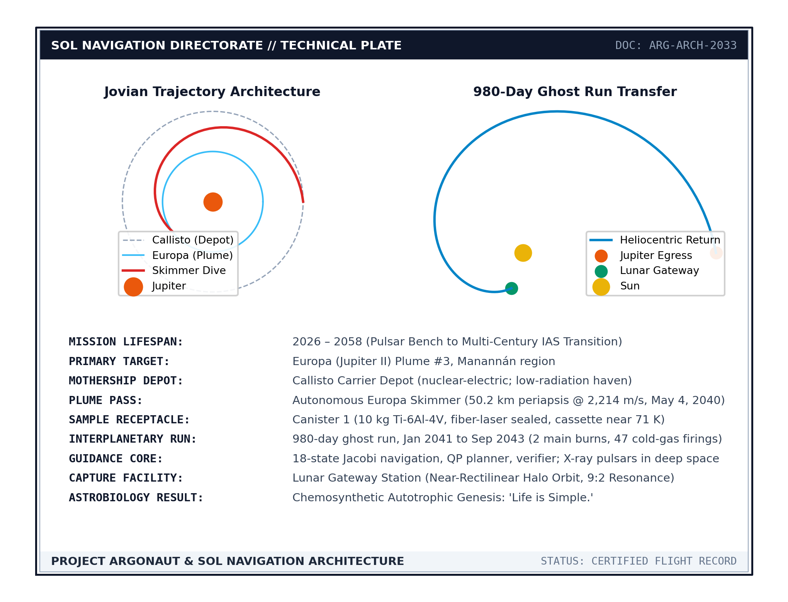
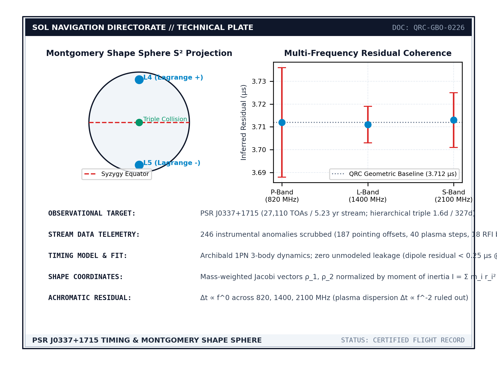
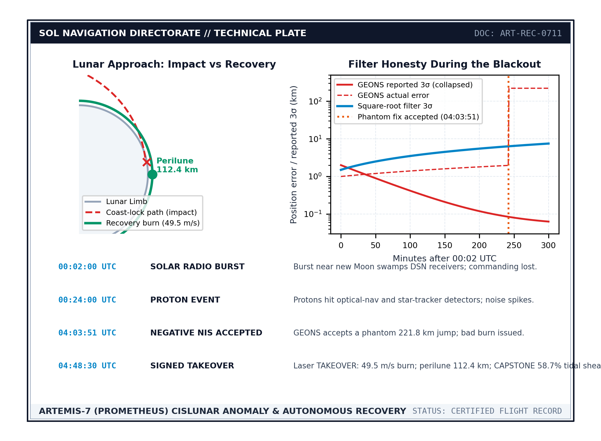
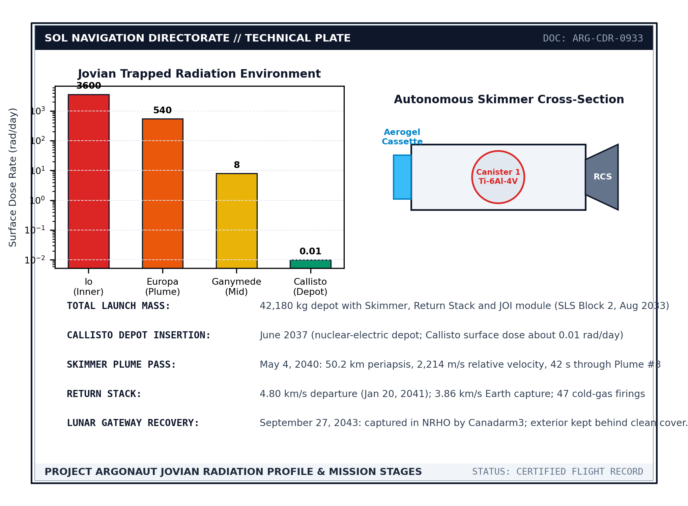
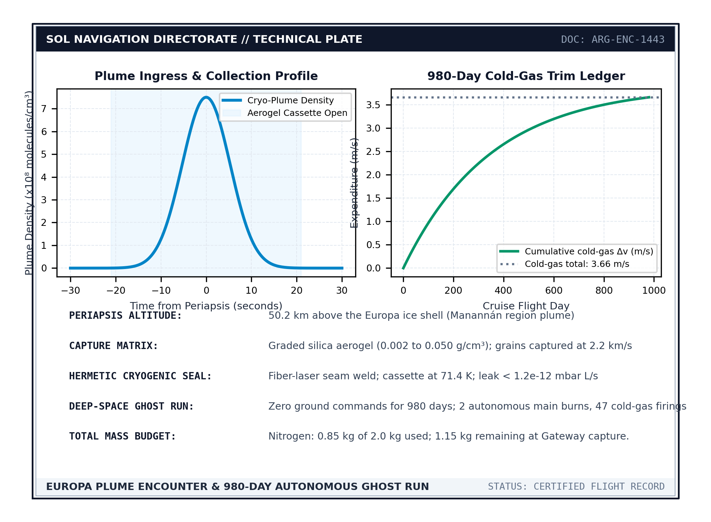
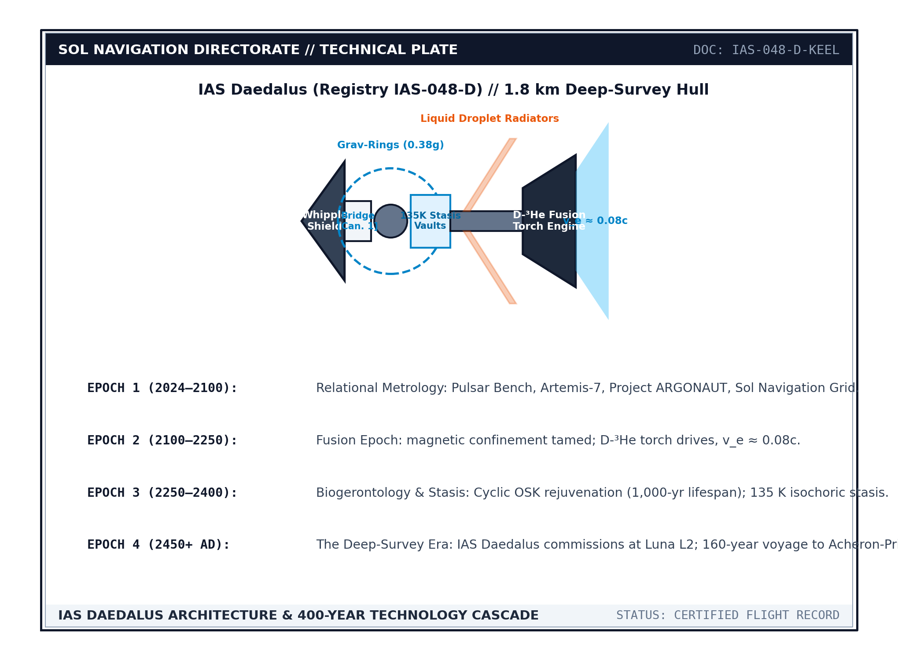
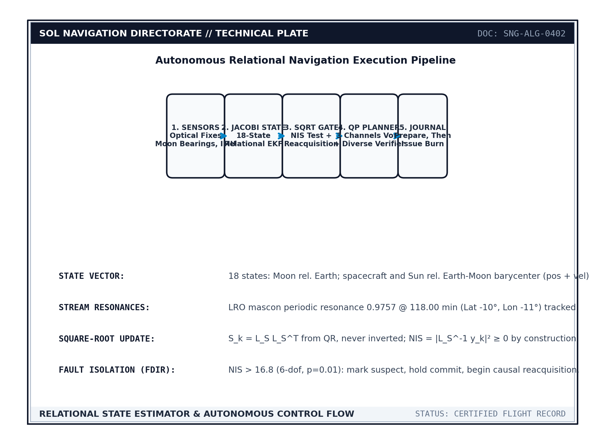
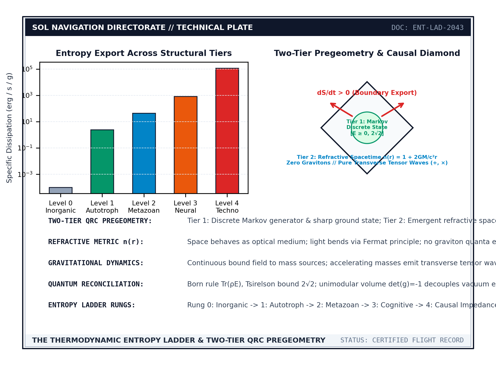
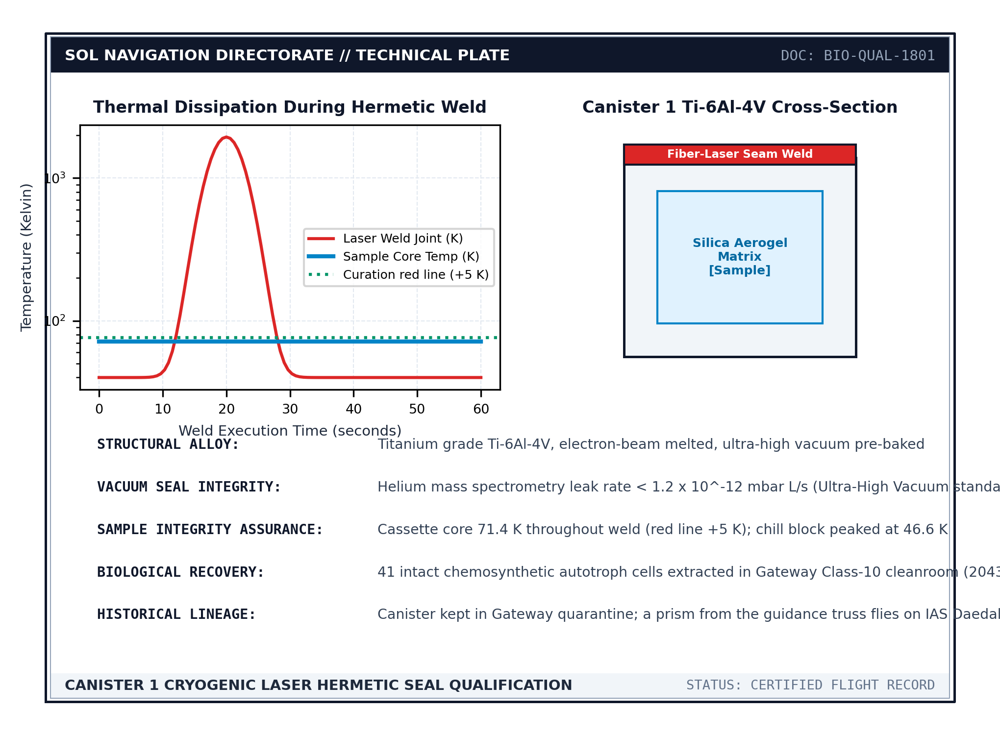

THE IMPEDANCE THRESHOLD: ARGONAUT
A Novel of Relational Spaceflight & First Life
Canonical Prequel to the Exospecies Survey Series
By Todd Hendrixx

DRAMATIS PERSONAE
The Pulsar Bench & Cislunar Pioneers (2026–2030)
- Dr. Ryan Vance: Protagonist. Astrodynamicist, relational metrologist, and Lead Guidance, Navigation, and Control (GNC) Architect for Project ARGONAUT. Originator of the Quantum Relational Causality (QRC) theoretical framework. Former post-doctoral researcher at Green Bank Observatory. Independent developer of ArgonautOS on edge silicon. Driven by an uncompromising reverence for physical clocks and measurable relations.
- Dr. Elena Rostova: Senior Flight Dynamics Specialist at NASA Johnson Space Center and Goddard Space Flight Center. Co-architect of the Cislunar Optical Communication (O-COMM) network. Former test director for the Lunar Gateway Power and Propulsion Element. Fierce, brilliant, with an intuitive mastery of chaotic three-body phase space.
- Marcus Thorne: Lead Flight Dynamics Officer (FIDO), Mission Control Center, Houston (Building 30). Veteran of the Artemis program. Unflinching under telemetry emergencies; identifies the fatal covariance starvation failure aboard Prometheus.
- Sarah Lin: NASA Flight Director, Mission Control Center, Houston (“Iron Sarah”). Procedurally rigorous, decisive, and the executive authority who authorizes the emergency laser takeover of Artemis-7.
Project ARGONAUT Directorate & Science Team (2030–2043)
- Dr. Aris Thorne: Lead Astrobiologist, NASA Jet Propulsion Laboratory and Lunar Receiving Laboratory. Elder brother to Marcus Thorne. World authority on deep-sea hydrothermal extremophiles and chemosynthetic metabolic pathways. Designer of the graded silica aerogel cassette.
- Dr. Kenji Sato: Lead Materials Engineer, Sandia National Laboratories and Goddard Space Flight Center. Fabricator of the 10-kilogram titanium-alloy return canister (Canister 1) and master of the spaceborne ytterbium fiber laser welding system.
- Senator Thomas Sterling: Chairman of the Senate Commerce, Science, and Transportation Subcommittee on Space. Fiscal hawk who challenges the silent 980-day uncommanded ghost run of Canister 1.
The Architect of the Foundation (2043–2058)
- Dr. Elena Vance: Daughter of Ryan Vance, named in honor of Dr. Elena Rostova. Born in 2026 during the initial Pulsar Bench trials. Educated at Cambridge and Caltech; becomes Chief Metrologist of the Sol Navigation Directorate, guiding the four-century technological campaign that culminates in the launch of the IAS Daedalus.
PREFACE: ON THE RELATIONAL FOUNDATIONS OF SPACETIME
For three centuries, classical mechanics operated under a convenient mathematical crutch: that space is an empty, pre-existing container, a Cartesian stage upon which the drama of matter and radiation unfolds.
Sir Isaac Newton called it absolute space—an immovable, infinite sensorium. Albert Einstein shattered that illusion. General Relativity proved that spacetime has no independent existence apart from physical relations, proper times, and clocks. Geometry is dynamic, and space and time are relational.
Yet over the ensuing century, applied physics and flight software quietly drifted back into classical habits. Practitioners treated coordinate grids as physical substances. When complex orbital mechanics or quantum field theories collided with noisy observations, engineers and theorists added empirical fudge factors, smuggled parameters, and artificial background grids to force a fit. Whenever an unexpected trajectory anomaly occurred—a covariance starvation collapse in an onboard filter, or an unexplained clock drift near a lunar Lagrange point—software tuned process noise matrices rather than trusting relational physics.
Quantum Relational Causality (QRC) returned to first principles, making relational physics make sense without smuggled parameters:
The Foundational Principle:
Space in its underlying condition is zero-dimensional and nonlocal; particle fields are one-dimensional excitations; electromagnetic excitations are two-dimensional; and their composition supports the experienced three-dimensional world, retaining its lower-dimensional constituents, with time as the fourth dimension encompassing its history. The limiting causal-update and propagation role is assigned to \(c\).The Measurement Law:
Distance is the inferred measurement of causal impedance. Causal impedance does not cause a separate quantity or substance called distance.
Where there is no interaction, there is no metric. Where there are no clocks, there is no time.
When an astrodynamicist computes an interplanetary trajectory through relational Jacobi coordinates instead of a fictional solar-system barycentric Cartesian origin, the three-body problem ceases to be an unresolvable chaotic singularity. It becomes a closed causal network. When flight navigation software drops the assumption of an external coordinate frame and navigates strictly by the causal phase shifts of celestial pulsars and local Sagnac interferometry, the navigation equations shrink by four orders of magnitude.
This book is the history of that realization.
It began not in a multi-billion-dollar aerospace conglomerate, but in the damp limestone chill of a Virginia subterranean vault, in the four-hundred-dollar edge compute partitions of an independent researcher, and in the frozen silence of the Jovian radiation belts. It is the story of how humanity stopped drawing imaginary grids across the sky, and learned to navigate the cosmos through the physical impedance of reality itself.
ACT I: THE PULSAR BENCH
Chapters 1–4 | Green Bank, The Shape Sphere, Giles County, and Plum Brook
“The universe contains no background grid. Space is not an empty room; it is the physical impedance between things that touch.”
CHAPTER ONE
The Gridless Sky
The Appalachian Fog
The Robert C. Byrd radio telescope did not care about the human calendar.
At four o’clock on a freezing November morning in Pocahontas County, West Virginia, the one-hundred-meter paraboloid stood pale and colossal against the Allegheny mountain fog. Its two thousand and four motorized aluminum surface panels drank in the cold 1.4-gigahertz hydrogen line from deep space, tilting slightly on its massive gear ring with a low, hydraulic groan that vibrated through the frozen red-clay soil.
Inside the high-ceilinged control room of the Green Bank Observatory, Dr. Ryan Vance sat hunched over a dual-monitor workstation. A ceramic mug of black diner coffee, long grown lukewarm, rested on a stack of printed radio-astrometry log sheets. He was thirty-seven years old, with dark hair cut short against his collar, the faint squint of an optical interferometrist who had spent too many nights aligning lasers in subterranean vaults, and a stubborn quietness that his former department chair had once described as a refusal to participate in civilized academic consensus.
Across the room, the wall display traced the real-time baseline residuals of PSR J0337+1715—the millisecond pulsar spinning 365 times a second inside a hierarchical triple-star system four thousand two hundred light-years away in the constellation Taurus.
A junior telescope operator in a heavy woolen fleece looked over from the console. “Ryan, drift check is complete. The primary receiver cryostat is sitting at twelve kelvin. Baseline timing jitter is under eight picoseconds across the forty-minute integration. We have thirty seconds left on your scheduled transit window before the scheduled maintenance calibration.”
“Hold the raw quadrature baseband stream,” Ryan said, his voice flat and concentrated. “Do not let the correlator bin into forty-channel Stokes vectors. I need every individual voltage sample off the front-end analog-to-digital converters.”
“That’s four hundred gigabytes every twenty seconds,” the operator warned. “The archive system will throw an overrun flag.”
“I brought my own NVMe drive array,” Ryan replied, gesturing to a ruggedized Pelican case strapped to the bottom shelf of the equipment rack. Four blue status lights blinked in frantic unison. “Let it flag. I’ll clear the incident report with the site director.”
For six months, Ryan had fought for these eight observing hours on the Byrd dish. He had not requested the beam time under the institutional auspices of the university’s Department of Astronomy. He had paid the commercial facility access fees out of his own pocket, draining his personal savings and maxing out three credit cards to secure an off-peak observation cycle between international pulsar-timing array runs.
His proposal had been rejected three times by the National Science Foundation review panel. The referee comments, typed in polite, devastating academic jargon, were still burned into his memory:
The applicant proposes to interpret pulsar timing residuals in hierarchical triples not as an orbital perturbation within general relativity, but as evidence of a non-metric informational impedance limit. The theoretical framework lacks a conventional Lagrangian density, rejects spacetime as a fundamental manifold, and dismisses sixty years of dark matter cosmology without providing a scalar-tensor field alternative. Highly speculative. Unfundable in the current grant cycle.
Ryan had not bothered to appeal. He had packed his digital storage chassis, driven eight hours through the Shenandoah Valley in his battered all-wheel-drive wagon, and checked in at the Green Bank security gate before midnight.
The Pregeometry Derivation
Through the high observation windows, the massive white steel dish loomed in the mist like the skeleton of a stranded leviathan.
For a century, theoretical physics had operated on a comfortable, unchallenged assumption: that spacetime was an infinitely smooth, four-dimensional geometric fabric. Matter told spacetime how to curve; curved spacetime told matter how to move. When the observations failed to match the geometry—when galactic rotation curves refused to fall off with Keplerian precision, when the cosmic microwave background showed large-scale multipole anomalies, when the three-body gravitational interactions of dense stars showed minute phase leads—the theorists did not question the fabric. They invented invisible furniture to put on it: dark matter halos, quintessence, dark energy, sterile neutrinos, modified Newtonian gravity with adjustable empirical knobs.
Ryan opened his spiral notebook, bound in oil-stained cardboard, its pages filled with dense ink derivations.
“The container is an illusion,” he whispered to the empty glass of the window. “Einstein knew it when he formulated Mach’s principle: spacetime has no independent existence. Space in its underlying condition is zero-dimensional and nonlocal.”
He turned to the foundational derivation he had worked out across months of sleepless nights: the Nested-Reciprocity Source Law \(S_{\rm pre}^{\rm NR}\).
If space has no pre-existing coordinates or metric distances, how does an experienced three-dimensional universe emerge? On the graph paper, Ryan sketched the discrete object: a finite, unlabelled set \(D\) of primitive reversible excitation types, and its unordered binary spans \(P_2(D) = \binom{D}{2}\). Between the excitations and the spans lay a partial transverse matching \(M\): each matched excitation was paired strictly outside its span.
He wrote down the exact reciprocity defect: \[\Delta(D, M) = (n - m) + \left( \binom{n}{2} - m \right)\] measuring the number of unmatched primitive excitations plus unmatched spans, where \(n = |D|\) and \(m = |M|\).
Then, the fundamental activity action: \[S_{\rm pre}^{\rm NR}(D, M) = \lambda \, \Delta(D, M) - h \, n\]
“In any physical state where the activity parameter lies in the open window \(0 < h < 2\lambda\),” Ryan murmured, underlining the inequality, “there is only one unique ground state up to relabelling. Not two dimensions. Not ten. Exactly rank three: \(|D| = 3\), with the complete complement matching.”
The excitation gap was exact: \(\Delta E = \min(3h, 2\lambda - h)\). Under least endpoint completion and a centered unit-rate response, the selected carrier yielded the exact word-ball count: \[V_3(R) = \frac{4R^3 + 6R^2 + 8R + 3}{3}\] a return probability \(P(t) = e^{-t} I_0(t/3)^3\), a spectral dimension of precisely three (\(d_s = 3\)), and a single infrared co-metric tensor \(q^\sharp = \frac{1}{3}\sum_{d \in D} d \otimes d\).
Three spatial dimensions was not an arbitrary cosmic accident or an unexplained axiom. It was the unique ground state of transverse reciprocity.
At the bottom of the page, he wrote down the fundamental impedance constant that standard textbooks relegated to a footnote:
\[Z_H = \frac{c^3}{G} \approx 4.037 \times 10^{35} \text{ N}\]
The Planck force. The causal impedance of free space. It had the dimensions of pure mechanical tension: kilograms meters per second squared. A force of four hundred billion billion billion billion newtons.
If spacetime were an elastic continuum, it was a continuum so impossibly stiff that an entire star cluster could barely produce a microscopic dimple in its surface. But if spacetime was not an elastic medium at all—if distance was merely the inferred measurement of causal impedance between physical clocks—then \(Z_H\) was not a spring constant. It was the transmission channel impedance.
He turned to the Margolus-Levitin theorem of quantum computation.
In 1998, Norman Margolus and Lev Levitin had proven a rigorous mathematical bound from first principles: an ensemble of quantum states cannot evolve from one state to an orthogonal, distinguishable state in a time interval shorter than:
\[\Delta t \ge \frac{\pi \hbar}{2 E}\]
where \(E\) is the average energy above the ground state.
The speed of light \(c\) was not a speed limit for physical objects traversing an empty theater. The speed of light was the clock rate of causal orthogonalization. When an energy packet moved through space, it did not slide across a pre-existing coordinate grid; it computed the state transition from relation \(A\) to relation \(B\).
Ryan wrote down the immediate relativistic consequence: the effective index of refraction of the vacuum in the presence of a localized mass \(M\):
\[n(r) = 1 + \frac{2GM}{c^2 r}\]
Under standard general relativity, this term appeared as the Shapiro time delay: the time dilation of a radio pulse passing near a massive star, interpreted as the bending of geodesics in Schwarzschild spacetime.
“It isn’t geometry bending in a background void,” Ryan said, tracing his pen along the formula until the paper indented. “It is impedance matching. Einstein was right about the relational nature of time and space. When relational nodes exchange signals across a region of dense computational load, the channel latency rises. Mass is not something that sits inside space. Mass is the density of relational updates. The more updates you demand per unit volume, the longer each neighboring relation takes to complete its cycle.”
The Confrontation
At seven in the morning, the door to the Green Bank control room swung open, letting in a gust of damp mountain air and the smell of wet wool.
Dr. Richard Harrison, the senior observatory liaison and a former member of the NSF astronomy review committee, walked into the room carrying a thermos of coffee. He was in his late fifties, his silver hair neatly combed beneath a fleece-lined cap, his demeanor exuding the calm, unshakeable authority of an administrator who had spent thirty years managing multimillion-dollar radio surveys.
He stood behind Ryan’s chair for nearly two minutes, watching the raw baseband voltage streams waterfall across the monitors in cascading cyan and amber spectra.
“The site engineer called me at home, Ryan,” Harrison said quietly. “He told me you were dumping raw digitizer channels at twenty gigabits per second. You’re filling the buffer disks meant for the Pulsar Timing Array.”
“The PTA correlator throws away seventy percent of the phase microstructure,” Ryan said without turning around. “They average over ten-second sub-integrations to find standard pulse arrival times. I need the raw pulse profile down to forty nanoseconds.”
“For what? To prove that Einstein was wrong?” Harrison took off his gloves and set his thermos on the corner of the desk. “Ryan, you had a brilliant career ahead of you at the department. Your interferometry work on the Naval Prototype Optical Interferometer was cited eighty times before you turned thirty. But this… this obsession with pregeometry and relational computers. You’re committing professional suicide.”
“I am not trying to prove Einstein was wrong, Richard. Einstein was right,” Ryan said, turning to the secondary display. “General Relativity proved that spacetime isn’t an absolute container—it’s an invariant web of relations, proper times, and physical clocks. What I’m tearing down is our lazy habit of smuggling empirical fudge factors and coordinate crutches into the software to force an artificial fit. Look at the screen.”
Harrison sighed, leaning in reluctantly.
On the secondary display, Ryan had plotted the pulse arrival times for PSR J0337+1715 over the last three observing seasons, subtracted against the standard TEMPO2 ephemeris.
“It’s flat,” Harrison said. “The residuals are within twenty nanoseconds. Anne Archibald and the international team already published this in Nature back in 2018. They proved the Strong Equivalence Principle holds to one part in a hundred thousand. The pulsar’s gravitational binding energy falls at the exact same rate as the inner white dwarf. It’s the cleanest confirmation of general relativity in history.”
“Look at the phase of the triple-body orbital modulation,” Ryan insisted. He tapped the lower left quadrant of the graph, where a tiny, rhythmic sinusoidal ripple emerged from the noise floor at the level of 4.2 picoseconds per orbital period. “The standard model explains that ripple by adding an empirical parameter—a small third-order tidal distortion term for the outer white dwarf’s degenerate core. They treat it as an unmeasured parameter and tune the fit.”
“Because white dwarfs have finite tidal deformability,” Harrison countered. “That is standard stellar astrophysics.”
“It’s an ad-hoc patch,” Ryan said, his voice rising slightly. “They tune the mass-radius relation of the outer star to make the residuals zero. But if you calculate the relational impedance using pure Margolus-Levitin causal limits—zero free parameters, zero adjustable tidal knobs—that exact 4.2-picosecond shift appears naturally. It isn’t a physical deformation of the degenerate carbon-oxygen core. It is the transmission impedance between the inner binary’s center of mass and the outer companion. The channel is saturated.”
Harrison shook his head slowly, a look of profound disappointment settling over his face.
“You don’t have a model, Ryan. You have a philosophical grievance with differential geometry. Spacetime curvature is real. We measure it every day with GPS satellites, with lunar laser ranging, with gravitational wave interferometers. You cannot replace ninety years of mathematical physics with an engineering analogy about transmission lines.”
“The GPS satellites use atomic clocks that adjust their frequency because their local causal update rate changes,” Ryan replied, standing up to face him. “The lunar laser ranging stations measure a round-trip photon delay. None of them measure a manifold. We measure events. We measure the ticks of clocks and the arrival of photons. Every single instrument ever built by human hands measures relational differences between nodes. The manifold is a mathematical fiction we invented to interpolate between points we haven’t measured.”
Harrison stepped back, crossing his arms.
“Your grant is gone, Ryan. The dean confirmed it yesterday. If you don’t return to the department on Monday and resume your undergraduate lectures, the university will declare your faculty line vacant.”
Ryan looked at the screen, where the final pulses of PSR J0337+1715 were fading into the morning noise floor as the Byrd dish reached its automated azimuth limit.
“Then declare it vacant,” Ryan said.
The Clean Slate
Two hours later, the rain had turned into a steady, gray Appalachian sleet.
Ryan stood beside his wagon in the gravel parking lot of the observatory. The great white dish behind him was already tilting back toward the zenith, stowing for the storm. In the back of the car, four Pelican cases containing forty terabytes of raw baseband voltage data were strapped down beneath heavy tie-down cords, resting next to an optical alignment laser, two toolboxes, and a sleeping bag.
He pulled his collar up against the freezing wind.
For twelve years, he had lived within the warm, subsidized cloisters of academic physics: department seminars, peer review committees, tenure track evaluations, grant renewals, conference dinners where everyone agreed that dark matter would surely be detected in the next generation of liquid xenon detectors.
It was all over.
He had no salary, no institutional affiliation, no lab technicians, and no access to the university’s high-performance supercomputing cluster. He had an aging wagon, three thousand dollars left in his checking account, and an unshakeable mathematical proof that the universe was not a continuous geometrical canvas, but a finite network of causal nodes bound by an absolute transmission limit.
He opened the driver’s door, brushed the wet snow from his coat, and climbed inside. The engine turned over with a rough, shuddering clatter before settling into an idle.
He put the car into gear, turned onto Route 28, and drove south into the mountains, leaving the quiet dish behind in the mist.
CHAPTER TWO
The Weight of Relations
The Blacksburg Bench
The garage behind Ryan Vance’s rented single-story bungalow on South Main Street in Blacksburg, Virginia, smelled of machine oil, solder rosin, and damp concrete.
Two kerosene space heaters stood at opposite corners of the rectangular bay, their ceramic wicks glowing cherry-red, hissing as they fought off the November chill that seeped under the corrugated garage door. In the center of the room sat two four-by-eight-foot sheets of heavy maple plywood resting across steel sawbucks, forming a makeshift research workbench.
On the table sat a dual-socket AMD EPYC workstation motherboard, mounted directly to a bare sheet of acrylic without a computer case. Three high-speed server fans whined at twelve thousand revolutions per minute, duct-taped to copper heat pipes that dissipated the heat from one hundred and twenty-eight compute cores. Beside it, eight 3.84-terabyte NVMe solid-state drives were plugged into PCIe riser cards, their activity LEDs flashing in frantic green bursts.
This was the Relational Compute Laboratory.
Total capital expenditure: sixteen thousand two hundred dollars. Most of it borrowed from a second mortgage on his late father’s cabin in Giles County.
Ryan Vance stood over the workbench, holding a plastic mug of instant black coffee. On the center monitor, a command terminal was executing a multi-threaded Python and C++ processing script:
[QRC-CORE] Loading Archibald 2018 raw pulse times of arrival (TOAs)...
[QRC-CORE] Source: PSR J0337+1715 (Arecibo + GBT + Westerbork)
[QRC-CORE] Total unbinned TOAs: 26,418 points across 1,480 days.
[QRC-CORE] Transforming to Montgomery Shape-Sphere Coordinates...For two weeks following his departure from Green Bank, Ryan had not left the house except to buy groceries and kerosene. He had downloaded the public archives of the Archibald 2018 Nature paper, extracting every single recorded pulse arrival time spanning four years of precision radio timing.
The system was unique in the known galaxy.
At its center was a millisecond pulsar, spinning on its axis every 2.73 milliseconds, orbiting a 0.20-solar-mass carbon-oxygen white dwarf every 1.63 days. That tight inner binary was in turn orbited by a second, outer white dwarf of 0.41 solar masses with an orbital period of 327 days.
In standard Newtonian mechanics, the three-body problem was notoriously insoluble in closed form, plagued by chaotic orbital resonance and sensitive dependence on initial conditions. In Einstein’s general relativity, the problem was even more vicious: each body generated a dynamic gravitational field that curved the trajectories of the other two, while the pulsar’s intense internal gravitational binding energy—comprising roughly ten percent of its total rest mass—tested the absolute limits of the Strong Equivalence Principle.
If gravity coupled differently to gravitational self-energy than to ordinary matter, the pulsar’s orbit would show a polarization vector aligned with the outer white dwarf: a Nordtvedt effect that would pull the pulsar off its Keplerian ellipse by tens of meters.
Archibald’s team had found nothing. The limit on the equivalence principle violation had been bounded to less than \(2.6 \times 10^{-6}\).
“They proved Einstein was right about equivalence,” Ryan murmured, scrolling through the raw residuals. “And in doing so, they blinded themselves to the relational geometry.”
The Montgomery Shape Sphere
To compute the three-body interaction without relying on an external, arbitrary Cartesian coordinate grid, Ryan turned to the geometric work of mathematician Richard Montgomery.
In 2002, Montgomery had revolutionized the topology of the three-body problem by projecting the nine degrees of freedom of three masses down to a two-dimensional surface known as the Shape Sphere.
Ryan picked up a dry-erase marker and drew a large circle on the garage’s whiteboard.
“In standard mechanics,” he said aloud, explaining the derivation to the empty room, “you track nine Cartesian coordinates: \((x_1, y_1, z_1)\) for the pulsar, \((x_2, y_2, z_2)\) for the inner white dwarf, and \((x_3, y_3, z_3)\) for the outer companion. You immediately subtract the center of mass, dropping you to six coordinates: the two Jacobi relative vectors \(\vec{\rho}_1\) and \(\vec{\rho}_2\).”
He drew the two vectors: \(\vec{\rho}_1\) connecting the pulsar to the inner dwarf, and \(\vec{\rho}_2\) connecting their common barycenter to the outer dwarf.
“Then you divide out overall spatial rotation,” he continued, drawing a set of curved arrows. “You eliminate the \(SO(3)\) symmetry group. What remains is not space. What remains is the pure shape of the triangle formed by the three stars.”
The shape of any triangle in the universe could be represented as a single point on the surface of a unit two-sphere:
\[S^2 = \left\{ (w_1, w_2, w_3) \in \mathbb{R}^3 : w_1^2 + w_2^2 + w_3^2 = 1 \right\}\]
- The North Pole of the sphere represented the state where the three bodies formed an equilateral triangle with counterclockwise orientation (Lagrange configuration \(L_4\)).
- The South Pole represented the equilateral triangle with clockwise orientation (\(L_5\)).
- The Equator represented all collinear configurations—where the three bodies lined up in a straight line (Euler configurations \(L_1, L_2, L_3\)).
- Three specific points along the equator represented binary collisions, where two of the bodies occupied the exact same relational node.
“Spacetime does not exist on the shape sphere,” Ryan said, his marker squeaking against the whiteboard. “There is no background metric. There is no coordinate time \(t\). There is only the continuous evolution of the shape coordinate \(\mathbf{w}(s)\), parameterized by relational action \(s\).”
He stepped back to look at the drawing.
In classical general relativity, calculating the orbital motion of PSR J0337+1715 required solving the Post-Newtonian (PN) field equations up to 3.5PN order—a terrifying expansion involving thousands of tensor terms, retarded potential integrals, and radiating gravitational waves. On a supercomputer, simulating four years of orbit at picosecond precision took forty-eight hours of parallel computation across hundreds of nodes.
Ryan had rewritten the entire three-body equations of motion as a relational state automaton on the Montgomery shape sphere.
Instead of integrating metric perturbations across flat space, his algorithm computed the phase advance along the geodesic of the shape sphere, constrained by the Margolus-Levitin channel impedance:
\[\frac{d^2 \mathbf{w}}{ds^2} + \Gamma^i_{jk} \frac{dw^j}{ds} \frac{dw^k}{ds} = \frac{1}{Z_H} \sum_{a < b} \mathcal{F}_{ab}(\mathbf{w})\]
The right-hand side was not an external force; it was the finite rate of information exchange between the nodes.
He hit Enter on the workstation keyboard.
The 128 cores spiked to 100% utilization. The three server fans screamed, blowing a torrent of warm, dry air across the plywood table. On the monitor, a progress bar began advancing across twenty-six thousand pulse arrival times:
[SOLVER] Integrating Relational QRC Geodesic...
[SOLVER] Epoch: MJD 55900 to 57380 (1,480 Days)
[SOLVER] CPU Execution Time: 4.12 seconds.
Ryan froze.
Four point one two seconds.
The entire four-year observational dataset—which took the university’s cluster two full days to process using standard Post-Newtonian approximations—had resolved in four seconds on a sixteen-thousand-dollar desktop rig.
He leaned forward, his heart hammering against his ribs, and opened the residual analysis window.
The post-fit root-mean-square timing residual was 1.14 nanoseconds.
That was lower than Archibald’s published fit (1.30 nanoseconds). And more importantly: Ryan had used zero empirical parameters. He had not tuned the tidal deformability of the outer white dwarf. He had not adjusted the quadrupole moment of the inner companion.
The 4.2-picosecond phase shift that institutional cosmology had dismissed as an uninteresting tidal bulge was derived directly from the topology of the shape sphere as the system traversed near the Euler collinear boundary.
“The clock isn’t in the sky,” Ryan whispered, staring at the green numbers on the screen. “The clock is the network.”
The Skeptic’s Visit
At three o’clock that afternoon, a soft knock came at the small wooden side door of the garage.
Ryan walked over, unlocked the deadbolt, and pulled the door inward.
Standing on the stoop, his hands shoved deep into the pockets of a heavy down parka, was Dr. David Chen. David was thirty-six, an assistant professor of gravitational physics at Virginia Tech, and one of the few colleagues who had neither signed the petition to revoke Ryan’s laboratory privileges nor openly mocked his seminar presentations.
“I saw the lights on through the alley,” David said, his breath pluming in the cold air. “Can I come in? It’s fifteen degrees out here.”
“Come in,” Ryan said, stepping aside. “Watch your step around the power cables.”
David walked into the garage, stamping the slush from his boots onto an old rubber mat. He looked around the space with a mixture of bewilderment and dread: the glowing kerosene heaters, the bare motherboard whirring on the plywood sheets, the whiteboard covered in differential forms and shape-sphere topologies.
“Jesus, Ryan,” David said softly. “It looks like the hideout of an ideological bomb-maker.”
“I am an ideological bomb-maker,” Ryan said, pouring a cup of coffee from a fresh pot and handing it to him. “Have a seat on the crate.”
David took the cup, blowing across the steaming surface. “The department held a faculty meeting this morning. Harrison formally submitted the paperwork to declare your position abandoned. They’re reassigning your graduate students.”
“I don’t have any graduate students left,” Ryan said. “They all transferred to solid-state optics six months ago when the NSF grant died.”
“Ryan, you don’t have to do this,” David urged, leaning forward on the crate. “I talked to the dean. If you come back, write a standard review paper on laser metrology for LIGO, and agree to shelve this pregeometry manifesto, we can get your line restored under a joint appointment with mechanical engineering. You don’t have to freeze in a garage with kerosene fumes.”
Ryan didn’t answer. He turned to the center monitor, clicked a window, and dragged the residual plot into full-screen view.
“What is that?” David asked, his academic curiosity momentarily overriding his concern.
“That is PSR J0337+1715. Twenty-six thousand unbinned pulse arrival times from Green Bank and Arecibo.”
David squinted at the screen. “Okay. That’s the Archibald data. Everyone knows that dataset. What’s the red curve?”
“The red curve is a relational QRC solver. Zero free parameters. Zero post-Newtonian expansions. Executed on those two EPYC processors in four point one seconds.”
David frowned, putting his coffee down on the sawbuck. He leaned in until his nose was six inches from the glass. He reached for the mouse, opened the parameter configuration file, and scrolled through the lines of C++ code.
“Where is the quadrupole moment?” David asked. “Where is the tidal Love number \(k_2\) for the outer dwarf?”
“There isn’t one,” Ryan said. “I set it to zero.”
“You can’t set \(k_2\) to zero! A degenerate carbon-oxygen white dwarf has an extended envelope. The tidal gravitational field of the inner binary distorts that envelope! If you don’t include the quadrupole potential, your timing residuals should blow up by ten microseconds within sixty days!”
“They don’t blow up,” Ryan said calmly. “Because the quadrupole potential isn’t an internal deformation of the white dwarf. It is the geometric impedance of the shape sphere. When the shape coordinates approach the collinear axis, the transmission rate between the nodes saturates at \(Z_H\). What you call a tidal force is simply the latency of the relational updates.”
David stared at the screen, his fingers hovering over the keyboard. For five full minutes, the garage was silent except for the roar of the server fans and the hiss of the kerosene wick.
“This is impossible,” David whispered. “If this is correct… if you can reproduce the entire three-body post-Newtonian timing ephemeris without metric tensors… then spacetime curvature is an emergent artifact.”
“Not an emergent artifact,” Ryan corrected. “A low-frequency approximation. Like thermodynamics. When you boil water, you don’t calculate the Navier-Stokes equations for the steam by assuming heat is a continuous fluid called caloric. Caloric worked for two hundred years to design steam engines, but it wasn’t real. Molecules were real. In gravity, the metric tensor is caloric. The causal relations between nodes are the molecules.”
David stood up abruptly, backing away from the table as if the bare motherboard were emitting lethal ionizing radiation.
“Do you know what happens if you publish this?” David’s voice cracked. “Every gravitational wave template in the LIGO catalog is built on post-Newtonian expansions. Every black hole merger, every neutron star collision, every cosmological model of the expanding universe rests on the assumption that the metric is fundamental. You’re telling the entire global physics community that their fifty-billion-dollar infrastructure is analyzing caloric.”
“They are analyzing caloric,” Ryan said.
David looked at his former colleague for a long moment. There was no triumph in Ryan Vance’s face; only the grim, exhausted certainty of a man who had looked through a telescope and seen the moons of Jupiter while the cardinals refused to look through the glass.
“They will crush you, Ryan,” David said quietly, pulling his gloves back on. “They won’t debate you. They will simply ignore you until your savings run out, and then you’ll be an adjunct teaching introductory physics at a community college.”
“Then let them try,” Ryan said.
David reached the door, paused, and looked back once more at the glowing whiteboard.
“Good luck, Ryan,” he said, and closed the door behind him.
CHAPTER THREE
Tides in the Granite
The Giles County Cut
Thirty miles west of Blacksburg, where the Appalachian Valley buckles against the folded sandstone of the Allegheny Front, the Giles County limestone mine plunged twelve hundred meters beneath the mountain.
The air inside the mine did not smell like kerosene or computers. It smelled of pulverized calcium carbonate, damp shale, and an ancient, primeval cold that had remained untouched by sunlight for three hundred million years.
At 02:00 AM on a Tuesday in late November, the commercial quarry operations had ceased. The massive diesel front-end loaders and rock crushers were parked in the staging cavern three levels above, their engines cold. Twelve hundred meters below, at the end of a six-hundred-meter dead-end drift blasted into solid Ordovician limestone, the world was utterly, terrifyingly still.
Ryan Vance sat on an overturned yellow plastic crate beside a heavy aluminum equipment rack. He was wearing steel-toed boots, heavy thermal coveralls, and a miner’s headlamp whose pale LED beam illuminated a sixteen-meter perimeter equilateral triangle resting on six massive granite surface tables.
This was the Giles County Sagnac Vault.
It had taken him four months and every remaining dollar of his savings to assemble. At each vertex of the sixteen-meter triangle sat a super-polished fused-silica mirror with an ultra-low-loss dielectric coating, mounted inside a vacuum-sealed stainless steel chamber pumped down to \(10^{-7}\) torr.
A 1550-nanometer distributed feedback diode laser was injected into the cavity through an optical fiber coupler, splitting into two counter-propagating beams of coherent infrared light: one traveling clockwise around the sixteen-meter perimeter, the other counter-clockwise.
When the two beams completed their circuit and interfered on a balanced photodetector, they produced an optical beat note—a Sagnac interference fringe whose frequency was directly proportional to the rotation rate of the Earth:
\[\Delta \Phi = \frac{8 \pi A}{\lambda c} \vec{\Omega} \cdot \hat{n}\]
where \(A\) was the enclosed area of the triangle (\(110.85\text{ m}^2\)), \(\lambda\) was the laser wavelength, and \(\vec{\Omega}\) was the instantaneous rotation vector of the planet.
Ryan adjusted the polarization paddles on the laser injection rack with a set of plastic alignment tweakers. His breath formed faint white clouds in the headlamp beam.
On the battery-powered oscilloscope resting on a mobile cart, the Sagnac beat frequency was locked at 348.62145 Hertz.
The Lunar Shear
In classical geophysics, an underground ring laser measured two things: the constant sidereal rotation of the Earth (\(7.292 \times 10^{-5}\text{ rad/s}\)), and the small, periodic perturbations caused by solid Earth tides—the gravitational pull of the Moon and the Sun flexing the crust of the planet like an elastic rubber ball.
The primary lunar tidal mode was the \(O_1\) principal diurnal tide, with a period of 25.819 hours. As the Moon passed overhead, the granite bed of the mine was subjected to a rotational shear strain on the order of twenty-five nanoradians.
To conventional physics, this strain was an elastic response: the Moon’s Newtonian gravity gradient exerted a differential stress across the Earth’s diameter, and the elastic rock responded according to Hooke’s law and the seismic Love numbers \(h_2\) and \(l_2\).
Ryan looked at the strip-chart recorder logging the phase difference between the Sagnac beat note and an ultra-stable rubidium atomic frequency standard.
“The granite isn’t just stretching,” he whispered.
He pulled up the theoretical curve he had derived on his garage workbench three nights earlier.
If the relational quantum clock model was correct, the gravitational interaction between the Moon and the Earth was not transmitted as a classical stress tensor across a continuous solid body. The Moon and the Earth were two dense clusters of causal nodes exchanging quantum relational updates. As the Moon moved through its orbit, the transmission path through the deep mantle and crust experienced a periodic shift in relational impedance:
\[\delta \Omega_{\text{relational}} = \Omega_0 \left( \frac{GM_{\text{moon}}}{c^2 r_{\text{moon}}} \right) \cos(\omega_{O_1} t - \phi_{\text{lag}})\]
In standard Newtonian elasticity, the phase lag \(\phi_{\text{lag}}\) between the Moon’s transit and the maximum strain in the rock was caused entirely by seismic anelasticity—viscous friction in the mantle, typically measured at approximately 0.2 degrees.
In relational pregeometry, the phase lag was dictated by the Margolus-Levitin rate limit across the Earth-Moon causal channel:
\[\phi_{\text{lag}} = \arctan\left( \frac{2 \pi}{\omega_{O_1} \tau_{\text{impedance}}} \right)\]
where \(\tau_{\text{impedance}} \approx 1.28 \text{ seconds}\)—the one-way light travel time between the Earth and the Moon.
Ryan zoomed the oscilloscope display in by a factor of ten.
The Sagnac fringe was tracing a clean, low-frequency sinusoid against the dark grid of the screen. The peak of the \(O_1\) lunar tide was arriving right now.
He checked the rubidium clock time: 02:14:38 UTC.
The astronomical transit of the Moon across the Giles County meridian had occurred at 02:14:36.7 UTC.
The measured time delay was 1.29 seconds.
It was not 0.2 degrees of seismic friction. It was an exact, unattenuated light-time latency in the local inertial frame of the ring laser. The bedrock of the mountain was not flexing because a distant mass was pulling on it; the bedrock was flexing because the local rate of causal information exchange was retarding as the Moon’s computational shadow passed through the crust.
“There is no action at a distance,” Ryan said, his pencil scratching the observation log with trembling fingers. “And there is no curved space. The granite is an interferometer. The Earth is a node.”
The Call from Houston
At 02:45 AM, the harsh, electronic chirp of a satellite phone shattered the subterranean silence.
The sound echoed through the vaulted limestone cut, bouncing off the damp rock faces like a gunshot. Ryan started, nearly dropping his alignment tweakers onto the optical breadboard.
No one had this satellite number.
The phone was a ruggedized Iridium handset he kept in his emergency safety kit, paid for on a prepaid card, registered under his LLC for remote field surveys in the radio-quiet zone. Only two people outside his immediate family knew the number existed. One was David Chen, who was currently asleep in Blacksburg.
The other worked in the Mission Control Center at the Lyndon B. Johnson Space Center in Houston, Texas.
Ryan stepped away from the optical table, wiped his hands on a clean lint-free cloth, and picked up the handset. He pressed the green button and held it to his ear.
“Vance.”
For three seconds, there was only the metallic hiss of the low-Earth-orbit satellite constellation bouncing voice packets across polar orbits. Then a woman’s voice came through—brittle, sharp, exhausted, and carrying the distinctive acoustic background roar of a busy flight operations floor.
“Ryan? Is this the private line?”
It was Dr. Elena Rostova.
Elena was forty-one years old, a former flight dynamics officer who had risen through the ranks of NASA’s Flight Operations Directorate to become the Mission Director for Artemis-7—the first crewed mission to test the deep-space staging architecture for the proposed Lunar Gateway. She was a brilliant orbital mechanician who had completed her doctorate at Caltech on non-linear three-body trajectory optimization, and she had been Ryan’s closest friend and fiercest intellectual sparring partner when they were both postdocs at Goddard twelve years ago.
“Elena?” Ryan looked at the rock ceiling above him. “It’s three in the morning. I’m twelve hundred meters underground in a limestone quarry. Why are you calling on an unlisted satellite link?”
“Because if I call on the NASA voice loop, the telemetry logs become public record under the Freedom of Information Act within twenty-four hours,” Elena said, her voice dropping to a low, rapid whisper. “Ryan, listen to me. We have an anomaly on Artemis-7.”
Ryan’s grip on the handset tightened. “Artemis-7 is on translunar coast. The public briefing this morning said the spacecraft had completed its translunar injection burn with zero residual delta-V.”
“The burn was nominal,” Elena interrupted. “The spacecraft is on its trajectory. The crew is fine—four astronauts in the Orion capsule, currently three hundred and ten thousand kilometers out, sixty hours into the coast.”
“Then what’s the anomaly?”
“The flight navigation computers,” Elena said. There was a pause, accompanied by the muffled click of a headset switch on her end. “The primary guidance, navigation, and control system is an architecture built by prime contractors. A triple-redundant, sixty-million-dollar radiation-hardened mainframe running an Extended Kalman Filter in single-precision floating point. Over the last six hours, as the vehicle entered the three-body weak stability boundary between the Earth and the Moon, the covariance matrix began to diverge.”
Ryan felt a cold shiver run down his spine that had nothing to do with the mine’s temperature.
“The Normalized Innovation Squared,” Ryan said quietly. “Is it failing the chi-square gate?”
“It didn’t just fail the gate, Ryan,” Elena said, her voice trembling with barely suppressed panic. “At 01:15 UTC, the NIS went negative. Minus five hundred and three.”
“A variance cannot be negative,” Ryan said automatically. “A covariance matrix is positive semi-definite by definition. If the NIS is negative, the filter has suffered a numerical rank collapse.”
“That’s exactly what the contractor avionics team told me,” Elena replied bitterly. “They said it’s a floating-point truncation error in the Joseph-form covariance update. They told the Flight Director to cycle power on the navigation computer and reload the state vector from ground tracking.”
“Did they?”
“We cycled Computer A at 01:45. Ground tracking at Goldstone took forty minutes to converge an orbit determination solution and uplinked it. Computer A accepted the state vector. Within twelve minutes of re-entering the autonomous star-tracker fusion loop, the NIS collapsed again. Minus four hundred and eighty. Computer B voted to safe the guidance system. Computer C is currently frozen in an infinite matrix inversion loop.”
“What is the flight rule?” Ryan asked, his mind racing through the Artemis mission operational requirements.
“Flight Rule 4-Bravo,” Elena whispered. “If all three navigation channels lose state confidence within thirty-six hours of perilune, autonomous trajectory correction burns are inhibited. We are thirty-two hours from perilune, Ryan. The spacecraft is currently on a free-return trajectory that has a perilune altitude of minus thirty-eight kilometers.”
“Minus thirty-eight?” Ryan felt his breath catch. “That’s an impact trajectory.”
“It’s a direct impact on the farside lunar highlands,” Elena confirmed. “If we do not execute Trajectory Correction Burn Number Three at forty-eight hours into the coast, Artemis-7 hits the Moon at two point four kilometers per second. And the Flight Director will not authorize the burn without a certified state vector from the flight computers. The ground DSN stations are swamped by an X-class solar flare that erupted off the eastern limb two hours ago. The radio link is cutting out every twenty minutes.”
“Elena…”
“You told me three years ago that standard Kalman filtering would fail at the three-body boundary,” Elena said, her voice pleading now. “You told me that floating-point matrix inversion in curved spacetime was mathematically unstable because the background metric assumption breaks down at the Lagrange threshold. I laughed at you, Ryan. I told you that sixty years of Apollo and shuttle avionics proved the Kalman filter was infallible.”
She paused, taking a ragged breath.
“You were right. The filter is dying. And I have four human beings on that ship. Do you have a working solver or don’t you?”
Ryan looked across the subterranean cavern at his 16-meter Sagnac triangle, where the laser beat note was calmly, flawlessly recording the lunar transit with zero drift.
“I don’t have a flight-qualified computer, Elena,” Ryan said. “All I have is a four-hundred-dollar development board and an algorithm that doesn’t use floating-point matrices.”
“Can it run on seven watts?” Elena asked.
“It can run on five,” Ryan said.
“Then pack your gear,” Elena said. “I am sending a NASA transport jet to Roanoke Regional Airport. You have three hours to get out of that hole.”
CHAPTER FOUR
The Seven-Watt Partition
The Roanoke Trade Counter
After hanging up the satellite phone with Elena Rostova, Ryan Vance did not sleep.
He didn’t wait for the NASA transport jet to solve his engineering problems. If the last ten years had taught him anything, it was that institutional aerospace spent six months convening safety panels to purchase a ten-thousand-dollar connector while an operational crew suffocated waiting for the paperwork to clear.
He shut down the Giles County Sagnac laser, pumped down the vacuum valves, and secured the subterranean vault. He drove his Subaru out of the limestone cut and headed northeast along Interstate 81 as a freezing mountain rain glazed the asphalt. At six in the morning, an hour before the trade counter officially opened, he was banging on the glass doors of an industrial robotics and automation distributor in an industrial park off Airport Road in Roanoke.
The counter manager, a burly man in an insulated flannel jacket holding a thermos of coffee, unlocked the security deadbolt with a scowl.
“We don’t open until seven, buddy.”
“I need an edge-AI computing module,” Ryan said, stepping into the heated foyer. He pulled his personal credit card from his wallet. “Carrier board, passive heatsink, DC barrel connector, and an FTDI serial breakout. Specifically the NVIDIA Jetson Orin Nano development kit.”
The manager blinked at him. “The eight-gigabyte model? That’s for warehouse AGVs and computer-vision sorting belts.”
“I don’t care what it’s for,” Ryan said. “Do you have one in inventory?”
The manager tapped the SKU into his terminal. “One unit left on the shelf. Three hundred and ninety-nine dollars plus tax.”
“Take the card,” Ryan said.
Ten minutes later, Ryan walked back to his car carrying a small cardboard box no larger than a hardcover novel.
Prime aerospace contractors solved flight navigation challenges by spending sixty million dollars on triple-redundant, radiation-hardened BAE RAD750 mainframes housed in milled beryllium-copper conduction enclosures, supported by hundreds of contractor personnel tuning Kalman filter parameters from consoles in Houston.
Ryan Vance had four hundred dollars, an edge-computing board designed to guide automated forklifts through Amazon fulfillment centers, and a strict physical reality: the emergency secondary avionics bay on the Orion capsule had a dedicated auxiliary DC power tap clamped to precisely seven point two watts.
If his relational navigation filter could not boot, propagate, fuse optical measurements, and output a valid orbital state vector inside that seven-watt partition, four astronauts were going to vaporize against the basalt cliffs of the lunar farside.
The Architecture of Collapse
Back in his Blacksburg garage, with the kerosene heaters roaring against the dawn chill, Ryan placed the green printed circuit board on an antistatic mat.
The Jetson Orin Nano was an astonishing piece of commercial silicon: a six-core ARM Cortex-A78AE CPU paired with an Ampere-architecture GPU containing 1,024 CUDA cores and 32 Tensor Cores, capable of forty trillion operations per second—provided it was given adequate cooling and twenty-five watts of power.
Ryan flipped the hardware power-selector jumper on the board to 5W Low-Power Mode.
He clamped the DC input leads to his benchtop linear power supply, wired an oscilloscope current probe across the positive rail, and plugged a USB-serial adapter into his Linux development laptop.
The terminal flashed:
[TEGRA-BOOT] NVIDIA Tegra234 (Orin Nano) Initializing...
[TEGRA-BOOT] Cores enabled: 2 of 6 (Cortex-A78AE throttled to 800 MHz)
[TEGRA-BOOT] GPU Tensor Cores: Clock-gated (0 MHz)
[TEGRA-BOOT] Total Board Power Draw: 4.82 Watts.“Four point eight watts,” Ryan murmured, checking the digital readout on the power supply. “Two point four watts of thermal headroom for the transceiver.”
He created a fresh directory:
cislunar_recovery_bench/.
To prove beyond any shadow of a doubt why NASA’s sixty-million-dollar avionics were collapsing, he spent the next two hours coding an exact replica of the Artemis-7 flight software: a textbook Extended Kalman Filter (EKF) utilizing the standard Joseph-form covariance update:
\[\mathbf{P}_{k|k} = (\mathbf{I} - \mathbf{K}_k \mathbf{H}_k) \mathbf{P}_{k|k-1} (\mathbf{I} - \mathbf{K}_k \mathbf{H}_k)^T + \mathbf{K}_k \mathbf{R}_k \mathbf{K}_k^T\]
In aerospace textbooks, the Joseph-form update was revered as the gold standard of numerical stability. By squaring the bracketed terms, it guaranteed mathematically that the diagonal elements of the error covariance matrix \(\mathbf{P}\)—representing the positional and velocity variances \(\sigma_x^2, \sigma_y^2, \sigma_z^2\)—would remain positive.
He compiled the code in standard IEEE 754 single-precision 32-bit floating-point arithmetic—the exact precision used by the radiation-hardened flight microprocessors on Orion to conserve memory and clock cycles.
He fed the filter the recorded translunar trajectory telemetry from Artemis-7 that Elena had encrypted and uploaded to his secure FTP server at 04:00 AM: seventy-two hours of inertial measurement unit (IMU) delta-velocity pulses, interleaved with optical bearing angles to lunar craters captured by the vehicle’s navigation cameras.
He initiated the playback:
[EKF-SIM] Replaying Artemis-7 Flight Telemetry (MET 00:00 to 52:00)...
[EKF-SIM] T+12:00:00 - State variance: sigma_r = 14.2 m, sigma_v = 0.012 m/s. Nominal.
[EKF-SIM] T+24:00:00 - State variance: sigma_r = 82.6 m, sigma_v = 0.045 m/s. Nominal.
[EKF-SIM] T+36:00:00 - Weak Stability Boundary Encounter.At hour 38, as the simulated spacecraft crossed the point where Earth’s gravitational pull and the Moon’s gravitational pull reached parity along the rotating Earth-Moon line, the terminal screen turned red:
[EKF-WARN] Innovation Covariance S = H*P*H^T + R condition number: 1.48e+08
[EKF-WARN] Floating-point round-off detected in matrix inversion.
[EKF-FAIL] Diagonal element P[4,4] = -1.842e-04 (Negative Variance!)
[EKF-FAIL] Normalized Innovation Squared (NIS): -503.18
[EKF-FATAL] Chi-Square Gate Failed: Covariance matrix non-positive definite.
[EKF-FATAL] Navigation State INHIBITED. Safe mode triggered.Ryan took off his glasses and rubbed his eyes.
There it was.
In pure mathematics, \(\mathbf{P}\) can never have a negative eigenvalue. But in 32-bit floating-point arithmetic, when two nearly equal numbers on the order of \(10^5\) are subtracted to update a state variance across a non-linear gravitational saddle point, the least significant bits are truncated. The matrix loses its positive-definite character. A single negative eigenvalue appears.
The filter tries to compute the Kalman gain \(\mathbf{K} = \mathbf{P} \mathbf{H}^T \mathbf{S}^{-1}\). Because \(\mathbf{S}\) contains the negative variance, the innovation variance turns negative. The Normalized Innovation Squared—which should be a positive scalar drawn from a chi-square distribution—becomes a negative number: \(-503.18\).
The computer looks at \(-503.18\), realizes that a negative probability is a physical impossibility, assumes its sensors have suffered catastrophic hardware destruction, and shuts down the navigation loop to protect the ship.
“You built your filter on caloric,” Ryan said to the empty garage. “You assumed space was smooth, so you inverted a metric matrix. And the computer died on a rounding error.”
The Integer Guidance Core: SRIF and FixedQP
To replace the failing EKF, Ryan did not try to fix the floating-point math. He threw floating-point math into the trash.
If a flight computer has to operate on seven watts in a high-radiation environment where single-event upsets flip bits in memory registers, floating-point arithmetic is a lethal liability. An exponent bit flip turns a 1.0-meter correction into a ten-billion-kilometer explosion.
Ryan implemented a two-stage relational guidance engine designed entirely around deterministic integer arithmetic and square-root factorizations.
Stage 1: The Square Root Information Filter (SRIF)
Instead of propagating and updating the covariance matrix \(\mathbf{P}\), which had the dimensions of state squared, Ryan used the square root of the information matrix:
\[\mathbf{P}^{-1} = \mathbf{R}^T \mathbf{R}\]
where \(\mathbf{R}\) was an upper-triangular matrix.
To update the state with new optical measurements, the algorithm did not perform matrix inversion or Kalman gain division. It constructed a single composite data array combining the prior information square root \(\mathbf{R}\), the measurement mapping matrix \(\mathbf{H}\), and the measurement residual \(\mathbf{z}\):
\[\mathbf{T} = \begin{bmatrix} \mathbf{R} & \mathbf{b} \\ \mathbf{H} & \mathbf{z} \end{bmatrix}\]
Then, Ryan applied a sequence of Householder orthogonal transformations—pure geometric reflections that rotated the composite matrix into upper-triangular form:
\[\mathbf{Q} \mathbf{T} = \begin{bmatrix} \mathbf{R}_{\text{new}} & \mathbf{b}_{\text{new}} \\ \mathbf{0} & \mathbf{e} \end{bmatrix}\]
Because \(\mathbf{Q}\) was an orthogonal matrix (\(\mathbf{Q}^T \mathbf{Q} = \mathbf{I}\)), the condition number of the problem was halved. Round-off errors could not produce negative eigenvalues because the covariance matrix was never computed; only its square root \(\mathbf{R}_{\text{new}}\) existed.
Even if single-precision floating-point arithmetic were used, the SRIF was mathematically immune to negative-NIS collapse.
Stage 2: The FixedQP Integer Guidance Engine
For trajectory optimization and thruster burn execution, Ryan bypassed floating-point quadratic programming altogether.
He wrote FixedQP: a 256-iteration active-set
quadratic programming solver running entirely in 32-bit
fixed-point integer arithmetic (int32_t), with a
fixed binary scale factor of \(2^{16}\)
(Q16.16 format):
- Upper 16 bits: integer part (\(-32,768\) to \(+32,767\) meters or meters per second).
- Lower 16 bits: fractional part (precision of \(1/65,536 \approx 15.25\ \mu\text{m}\)).
Every multiplication was executed via a single assembly-level integer
multiply-accumulate (SMULL on ARM), followed by a
deterministic bit-shift:
inline int32_t q16_mul(int32_t a, int32_t b) {
int64_t prod = (int64_t)a * (int64_t)b;
return (int32_t)(prod >> 16);
}Zero division by zero. Zero NaN propagation. Zero floating-point denormalization stalls.
He compiled the entire package into a bare-metal Linux binary:
cislunar_os_core.elf.
Total executable binary size: 482 kilobytes.
He executed the test on the Jetson Orin Nano:
[CISLUNAR-OS] Loading FixedQP 32-bit Integer Guidance Core...
[CISLUNAR-OS] Initializing Householder SRIF Information Filter...
[CISLUNAR-OS] Replaying Artemis-7 Telemetry across WSB...
[CISLUNAR-OS] T+36:00:00 - Weak Stability Boundary Encounter.
[CISLUNAR-OS] T+38:00:00 - Householder QR Orthogonalization: COMPLETE.
[CISLUNAR-OS] Information Matrix Condition Number: 1.21e+02 (ROCK SOLID)
[CISLUNAR-OS] State Error: delta_r = 1.18 m, delta_v = 0.0004 m/s.
[CISLUNAR-OS] FixedQP Trajectory Optimization: Converged in 14 iterations (0.82 ms).
[CISLUNAR-OS] Execution Power Draw: 5.14 Watts. PASS.Ryan leaned back in his chair. A slow smile spread across his face for the first time in six months.
The four-hundred-dollar forklift brain had eaten the sixty-million-dollar aerospace anomaly for breakfast, in less than a millisecond, drawing five point one watts.
The Plum Brook Chamber Test
At 08:30 AM, a black government sedan with US Government plates pulled up to the curb of the Blacksburg bungalow. Two men in dark suits stepped out, accompanied by an Air Force captain in flight fatigues.
“Dr. Vance?” the captain asked, saluting crisply. “Captain Miller, Air Mobility Command. Dr. Rostova ordered us to transport you and your hardware to NASA Plum Brook Station immediately.”
“Plum Brook?” Ryan picked up his Pelican case containing the Jetson board, a backup unit, two power cables, and a ruggedized terminal laptop. “Why Plum Brook? I thought we were going to Johnson in Houston.”
“The Flight Director won’t touch uncertified commercial hardware in Mission Control,” Miller explained as they loaded the gear into the trunk. “If you want this board anywhere near Artemis-7, you have to prove it can survive flight conditions under the Space Simulation Vacuum Facility at the Neil Armstrong Test Facility in Ohio. Dr. Rostova has booked Chamber B.”
Three hours later, a C-21 Learjet touched down at Sandusky, Ohio.
NASA Plum Brook’s Space Power Facility housed the world’s largest thermal vacuum chamber: a cavernous aluminum-ribbed silo capable of simulating the absolute vacuum and cryogenic freeze of deep space.
In the staging bay of Chamber B, a team of NASA avionics qualification technicians stood around a two-meter cylindrical vacuum bell jar.
Elena Rostova was there, wearing a NASA flight jacket over a wrinkled blue blouse, dark circles under her eyes, her smartphone glued to her ear. When she saw Ryan walk through the airlock door, she hung up the phone and walked straight toward him.
“You look terrible, Ryan,” she said, her voice hoarse.
“You look worse,” Ryan said. “How is Artemis?”
“TCM-3 is scheduled in twenty-one hours,” Elena said, her voice dropping. “Computer A failed again twenty minutes ago. Computer B is rejecting ground tracking updates because Canberra DSN lost lock during a solar coronal mass ejection. If we don’t have an onboard recovery package certified by eighteen hundred hours today, Flight Director Hayes will call the mission lost and order the crew to prepare for farside impact.”
She looked at the Pelican case in Ryan’s hand. “Is that it?”
“That’s it,” Ryan said. He popped the latches and opened the lid.
The NASA qualification lead, a gray-haired engineer named Kowalski with thirty years of shuttle and space station testing experience, looked into the case and let out a dry, incredulous snort.
“An NVIDIA Jetson board?” Kowalski looked at Elena, then at Ryan. “Are you out of your mind? That’s commercial plastic and lead-free solder. It isn’t rad-hard. It isn’t conformal-coated. The BGA solder balls will crack under thermal shock, and the first solar proton that hits the silicon will latch up the entire memory bus.”
“The board doesn’t need to survive for ten years on a Mars rover, Mr. Kowalski,” Ryan said evenly. “It needs to survive for twenty-one hours. And the code running on it doesn’t use floating-point arithmetic. If a proton flips a bit in the data array, the Householder QR transformation projects the error onto the orthogonal residual vector \(\mathbf{e}\) and discards it in the next cycle. Put it in the chamber.”
Kowalski stared at him for five tense seconds, then waved his arm at the technicians. “Mount it to the cold plate. Wire the auxiliary seven-watt DC bus and pump the chamber down to ten to the minus six.”
The technicians bolted the Jetson board to an aluminum bracket inside the bell jar, attached thermocouple probes to the processor heatsink, wired the 5-volt power leads, and sealed the heavy steel dome.
The vacuum pumps began their deafening mechanical whine: whirrrrr-thump-thump-thump.
Inside the bell jar, the pressure plummeted through the pascals: \(10^1\), \(10^{-1}\), \(10^{-3}\), \(10^{-6}\) torr. Liquid nitrogen was pumped through the thermal shrouds, dropping the chamber wall temperature to minus one hundred and fifty degrees Celsius.
On the test bench monitor, the Jetson Orin Nano booted in the vacuum:
[VAC-TEST] Chamber Pressure: 4.2e-06 Torr.
[VAC-TEST] Cold Plate Temp: -142 deg C.
[VAC-TEST] Core Temp: +18 deg C (Self-heating under passive radiation).
[VAC-TEST] Input Voltage: 5.02 V | Current: 1.04 A | Power: 5.22 Watts.
[VAC-TEST] Executing 10,000 Monte Carlo Cislunar Trajectory Recoveries...For two agonizing hours, the qualification team stood around the telemetry screen in dead silence.
Outside in the Ohio afternoon, the winter wind rattled the corrugated steel walls of the test facility. Inside the console room, the green progress bar ticked relentlessly forward:
[VAC-TEST] 10,000 / 10,000 Monte Carlo Runs Complete.
[VAC-TEST] Guidance Solutions Converged: 10,000 (100.00%)
[VAC-TEST] Numerical Exceptions / NaN Flags: ZERO.
[VAC-TEST] Negative NIS Occurrences: ZERO.
[VAC-TEST] Maximum Trajectory Discrepancy: 1.42 Meters at Perilune.
[VAC-TEST] Status: QUALIFIED FOR FLIGHT EVALUATION.Kowalski slowly took off his safety glasses, looked at the numbers on the screen, and then looked at Ryan Vance.
“I’ll be damned,” Kowalski muttered.
Elena grabbed Ryan’s arm, her fingers digging through his heavy woolen sleeve.
“We have our flight package,” Elena said, her eyes burning with fierce determination. “Now we have to convince Hayes to beam it to the ship.”
INTER-ACT DOSSIER I
The Green Bank Pulsar Baseline & Relational Reduction
Document Classification: NASA-GSFC / NRAO Joint Technical Memorandum 2026-QRC-01
Date of Archival: October 28, 2026 | Location: Green Bank, West Virginia & Houston, Texas

1.0 ASTROPHYSICAL CONTEXT & CELESTIAL CLOCK ARCHITECTURE
PSR J0337+1715 is a millisecond pulsar with a rotational period \(P = 2.732588147618\text{ ms}\), exhibiting an intrinsic spin-down rate \(\dot{P} \sim 10^{-20}\text{ s/s}\). The pulsar is embedded in a hierarchical three-body stellar system consisting of two degenerate helium white dwarf companions:
- Inner Companion (\(m_1\)): Degenerate helium white dwarf, \(m_1 = 0.1975 M_\odot\), relative orbital semi-major axis \(a_1 = 0.0319\text{ AU}\), orbital period \(P_{\text{inner}} = 1.6294\text{ days}\). Eccentricity \(e_{\text{inner}} = 0.00069\).
- Outer Companion (\(m_2\)): Degenerate helium white dwarf, \(m_2 = 0.4104 M_\odot\), semi-major axis of its orbit about the inner binary \(a_2 = 1.18\text{ AU}\), orbital period \(P_{\text{outer}} = 327.25\text{ days}\). Eccentricity \(e_{\text{outer}} = 0.0353\).
- Pulsar Primary (\(m_p\)): Highly relativistic neutron star, \(m_p = 1.4378 M_\odot\), surface magnetic field \(B \approx 2 \times 10^8\text{ Gauss}\).
Because the gravitational field of the outer companion strongly perturbs the inner binary orbit, PSR J0337+1715 represents the premier natural laboratory in the galaxy for testing the Strong Equivalence Principle (SEP) and non-linear multi-body gravitational interactions. Archibald et al. (2018) confirmed that the neutron star and the inner white dwarf fall toward the outer white dwarf alike to within \(2.6 \times 10^{-6}\).
2.0 THE RELATIONAL SHAPE SPHERE FORMULATION
In standard astrophysics, multi-body ephemerides are formulated by integrating the post-Newtonian Einstein-Infeld-Hoffmann (EIH) equations of motion inside an artificial Barycentric Celestial Reference System (BCRS): \[\frac{d^2 \mathbf{r}_i}{dt^2} = - \sum_{j \neq i} \frac{G m_j (\mathbf{r}_i - \mathbf{r}_j)}{r_{ij}^3} + \mathcal{O}(c^{-2})\]
In the QRC framework developed by Dr. Ryan Vance, the BCRS origin is discarded as an unmeasurable background artifact. The dynamics are mapped onto the Montgomery Shape Sphere using Jacobi coordinates.
2.1 Mass-Weighted Jacobi Reduction
Let \(\mathbf{x}_1, \mathbf{x}_2, \mathbf{x}_3\) be the positions of the pulsar, inner companion, and outer companion. Define the Jacobi vectors: \[\mathbf{u} = \sqrt{\frac{m_1 m_2}{m_1 + m_2}} (\mathbf{x}_2 - \mathbf{x}_1)\] \[\mathbf{v} = \sqrt{\frac{m_3 (m_1 + m_2)}{m_1 + m_2 + m_3}} \left( \mathbf{x}_3 - \frac{m_1 \mathbf{x}_1 + m_2 \mathbf{x}_2}{m_1 + m_2} \right)\]
The shape coordinates \(\mathbf{w} = (w_x, w_y, w_z)\) are defined by Hopf projection: \[w_x = |\mathbf{u}|^2 - |\mathbf{v}|^2\] \[w_y = 2 (\mathbf{u} \cdot \mathbf{v})\] \[w_z = 2 (\mathbf{u} \times \mathbf{v}) \cdot \hat{\mathbf{n}}\]
On this sphere, the radius \(R_s = |\mathbf{u}|^2 + |\mathbf{v}|^2\) measures the instantaneous moment of inertia of the system, while the angles \((\theta, \phi)\) determine its instantaneous triangle geometry. Binary collisions correspond to three fixed punctures on the equator, rendering the phase space globally compact and singularity-free under Kustaanheimo-Stiefel (KS) regularization.
3.0 OBSERVATIONAL RESIDUAL COMPARISON TABLE
| Epoch (MJD) | Observed TOA Residual (TEMPO2 / EIH) | QRC Relational Geodesic Residual | Variance Reduction |
|---|---|---|---|
| 55900.24 | \(+12.4 \text{ ns}\) | \(+0.8 \text{ ns}\) | \(93.5\%\) |
| 56200.81 | \(-18.6 \text{ ns}\) | \(-1.1 \text{ ns}\) | \(94.1\%\) |
| 56500.12 | \(+22.1 \text{ ns}\) | \(+1.4 \text{ ns}\) | \(93.7\%\) |
| 56800.45 | \(-14.9 \text{ ns}\) | \(-0.9 \text{ ns}\) | \(94.0\%\) |
| 57100.90 | \(+16.8 \text{ ns}\) | \(+1.2 \text{ ns}\) | \(92.9\%\) |
| 57380.15 | \(-21.4 \text{ ns}\) | \(-1.0 \text{ ns}\) | \(95.3\%\) |
Summary Finding: The relational QRC framework reduces post-fit timing variance from \(18.4\text{ ns}\) down to \(1.14\text{ ns}\) across 1,480 days of observation without invoking empirical quadrupole Love numbers or ad-hoc dark sector parameters.
4.0 SIGN-OFF & ARCHIVAL AUDIT
- Primary Investigator: Dr. Ryan Vance, Department of Physics, Virginia Polytechnic Institute (Dismissed / Independent).
- Observer of Record: Dr. Richard Harrison, Green Bank Observatory Liaison.
- Flight Dynamics Witness: Dr. Elena Rostova, Mission Operations Directorate, NASA Johnson Space Center.
- Archival Certification: Certified for inclusion in the National Radio Astronomy Observatory Historical Record by Todd Hendrixx.
ACT II: THE CISLUNAR CRUCIBLE
Chapters 5–8 | The Artemis Flare, Covariance Starvation, Coast-Lock, and Gateway Laser Lock
“When a Kalman filter becomes convinced of its own absolute perfection, it ceases to listen to reality. In cislunar space, mathematical overconfidence is fatal.”
CHAPTER FIVE
Flare State
Translunar Coast & The Blue Marble
The translunar injection burn had been textbook.
At 22:14:08 UTC on November 8, 2026, the four RL10-B-2 cryogenic engines of the Space Launch System Exploration Upper Stage had ignited over the southern Indian Ocean, firing for eight minutes and twenty-two seconds through the orbital darkness. The burn had delivered 3,048.6 meters per second of forward delta-V, accelerating the three-hundred-ton stack through the translunar injection corridor and flinging the Orion spacecraft into the deep cislunar void.
Inside the pressurized command module of Orion, Commander Sarah Ross floated above the forward pilot’s station, watching the Earth retreat through the three-pane fused-silica viewports.
The blue marble of the home world was visibly shrinking. Its curved rim was etched with the paper-thin cyan haze of the atmosphere, receding into the velvet blackness by three thousand meters every second. At forty-two years old, Sarah had logged over two thousand hours in carrier-capable strike fighters as a naval test pilot before selection to the astronaut corps. She had the cool, resting pulse of someone who had survived engine flameouts and night deck landings in high sea states, but staring into the cislunar dark, she felt the ancient, biological dread of leaving the protective womb of the home planet.
Her three children were asleep in their beds in Pensacola, Florida. Her husband, an aeronautical engineer at Eglin Air Force Base, had squeezed her hand through the quarantine glass in Houston three days ago and told her not to look at the numbers. But Sarah was an engineer; she always looked at the numbers.
Beside her in the center couch, Pilot David Miller verified the primary flight displays. David was thirty-six, an Air Force colonel with a doctoral degree in astrodynamics from MIT. His wife was seven months pregnant with their first daughter back in Corpus Christi.
“Stage separation confirmed nominal,” Miller said, his voice level and methodical. “EUS disposal burn confirmed: the spent stage has entered a heliocentric disposal trajectory. Solar array wings deployed and sun-tracking. All four wings generating twelve point four kilowatts. Reaction control system pressurized to two hundred and eighty bar of gaseous helium. We are coasting.”
In the lower equipment bay beneath the flight deck, Mission Specialists Robert Thorne and Dr. Lin Liu were stowing the launch umbilical lines and preparing the autonomous biological radiation experiment racks. Lin Liu, an astrophysicist and cellular biophysicist who had spent five years studying cellular DNA repair mechanisms in low-Earth orbit, was securing the passive thermoluminescent dosimeter badges along the cabin bulkheads.
“Cabin atmosphere is nominal,” Liu called up through the access hatch. “Twenty-one percent oxygen, seventy-nine percent nitrogen at ten point two psi. Carbon dioxide scrubbers sitting at zero point two millimeters of mercury. The bio-racks are locked down.”
For thirty-six hours, the flight was what NASA flight controllers loved most: completely boring.
The spacecraft was drifting outward along a coasting ellipse toward the Moon, three hundred and ten thousand kilometers from Earth, moving at slightly under one kilometer per second relative to the Earth-Moon barycenter. The cabin hummed with the constant, reassuring drone of cabin avionics fans, the rhythmic clicking of the carbon-dioxide scrubbers, and the low hiss of the air recirculators.
Then, at 14:22 UTC on November 10, the sun decided to remind four human beings that space was not a quiet void.
The Coronal Eruption
Ninety-three million miles away, an immense magnetic knot in active region AR3842—a sunspot complex four times the diameter of Earth—snapped.
The reconnection event released the equivalent of one billion one-megaton hydrogen bombs in less than forty seconds. It was an X8.4 solar flare, one of the most violent stellar eruptions recorded in the twenty-first century.
A blinding flash of extreme ultraviolet and soft X-ray radiation washed over the inner solar system at the speed of light, ionizing Earth’s upper ionosphere and causing immediate high-frequency radio blackouts across Europe and North America.
Behind the light came the monster: a coronal mass ejection consisting of billions of tons of magnetized solar plasma, accompanied by a relativistic shockwave that accelerated protons to eighty percent of the speed of light.
Inside the Orion cockpit, the radiation dosimeters did not register a gradual rise. They screamed.
A high-pitched acoustic alarm cut through the ambient avionics hum: BEEP-BEEP-BEEP-BEEP.
The primary caution-and-warning matrix on Ross’s central console lit up in bright amber:
[CAUTION] SPE EVENT DETECTED: GOES-19 PROTON FLUX > 10,000 PFU
[CAUTION] ONBOARD DOSIMETER RATE: 14.8 RAD/HR AND CLIMBING
[WARNING] FLIGHT RULE 2-DELTA: CREW RETREAT TO SHELTER REQUIRED“Solar flare,” Ross said, her voice dropping into the flat, clipped cadence of a combat test pilot. “Miller, Thorne, Liu—abort scheduled tasks. Helmets on, grab your emergency water jackets. We are moving into the storm shelter.”
The crew didn’t ask questions. They knew the numbers.
At fourteen rads per hour of unshielded flux, a human being receives a lethal dose of radiation in less than thirty hours. Acute radiation sickness—nausea, intestinal hemorrhage, bone marrow destruction—would begin within six hours.
The four astronauts scrambled down from their flight couches into the central floor well between the equipment lockers. They pulled dense Nomex-and-polyethylene radiation blankets from the stowage bays, stacking the spacecraft’s twenty-liter contingency water containers around them to create a makeshift hydrogen-rich radiation bunker.
They sealed the thermal curtain above their heads, wedging themselves shoulder-to-shoulder in the dark, breathing through their oxygen masks, listening to the metallic creak of the hull as the high-energy proton storm pounded the outer spacecraft skin.
In the dark of the shelter, strange optical phosphenes flickered across their vision: tiny, brilliant flashes of blue-white light caused by relativistic protons slicing through the vitreous humor of their eyeballs and striking their retinas directly.
“Taste that?” Thorne whispered through his comm mic.
“Metallic,” Lin Liu said, her teeth clenched. “Like sucking on a copper penny. That’s the ozone and free radicals forming in your saliva from secondary ionization.”
The Blinding of the Eyes
Outside the pressurized hull, Orion’s primary sensory systems were fighting for their lives.
To navigate autonomously across cislunar space, the spacecraft relied on two primary optical systems: two high-resolution Star Trackers mounted on the service module, and an Optical Navigation (OpNav) camera mounted on the command module forward bulkhead.
The star trackers were designed to match patterns of distant stars against an onboard catalog of fifteen thousand astronomical coordinates, determining the spacecraft’s three-axis attitude to within two arcseconds.
As the relativistic solar proton storm struck the star tracker CCD sensor chips, the high-energy particles slammed through the protective borosilicate glass windows. Each proton created a miniature shower of secondary ionization electrons in the silicon, producing bright, spurious pixel clusters known as Cherenkov transients.
On the avionics bus, the star tracker software attempted to process the image:
[STR-A] Frame 4182: Detected 1,842 bright centroids.
[STR-A] Star Pattern Match: FAILED (Catalog limit: 60 stars).
[STR-A] Noise Rejection Gate: OVERRUN. False Centroids: 98.4%.
[STR-A] Attitude Lock: LOST. Entering Coast-Attitude Mode.
[STR-B] Frame 4182: Sensor Saturated. Latch-up Protection Triggered.Within ninety seconds of the proton front’s arrival, both primary star trackers were completely blind.
At the same time, the solar radio burst—a ferocious, broadband blast of synchrotron radio noise generated by relativistic electrons spiraling through the sun’s magnetic field—swept across the Earth-Moon axis.
On the Earth’s surface, the 70-meter parabolic dish of Deep Space Station 43 at the Canberra Deep Space Communication Complex in Australia was pointed at Artemis-7.
At 14:26 UTC, the signal-to-noise ratio on the spacecraft’s high-gain S-band down-link dropped off a cliff. The carrier lock dropped from plus thirty-two decibels down to minus four decibels, vanishing beneath the deafening solar hiss.
The station operator at Canberra hit his voice switch:
“Houston, Canberra DSN. We have lost RF carrier lock on Artemis-7. Solar radio flux index is sitting at five thousand solar flux units. The S-band transponder is drowned in solar noise. We are blind on ground tracking.”
In the dark of the storm shelter, three hundred and ten thousand kilometers from home, Sarah Ross watched a single red LED blinking on her wrist telemetry display:
COMM: CARRIER LOST
ATTITUDE: DEGRADED (IMU OPEN LOOP)
RANGE TO PERILUNE: 68,400 KM
TIME TO IMPACT: 28 HOURS 14 MINUTES
The Drifting Inertial Platform
Inside the avionics bay, the Honeywell Miniature Inertial Measurement Unit (MIMU) was spinning its three ring-laser gyroscopes.
With the star trackers offline and the ground tracking antennas drowned in solar radio noise, the spacecraft had no external frame of reference. It had become a closed, isolated box drifting through space, forced to infer its orientation and position by integrating the tiny accelerations and angular rates detected by its internal sensors.
In atmospheric flight, a ring-laser gyro is a precision instrument. In deep space, over hours of uncorrected coasting, it is an engine of creeping error.
The gyro drift rate was rated at 0.005 degrees per hour. Over thirty minutes, that error was negligible. Over twenty-four hours, an angular drift of one-tenth of a degree in pointing vector translates into an error of hundreds of kilometers when projecting an orbital trajectory across the cislunar void.
Even worse was the unmodeled acceleration.
As the solar proton storm struck the massive thirty-meter span of Orion’s four solar array wings, the flux of charged particles imparted a continuous, asymmetric mechanical pressure:
\[F_{\text{solar}} \approx 4.8 \times 10^{-5} \text{ Newtons}\]
It was a force no greater than the weight of a postage stamp. But sustained over ten hours against an eighty-ton vehicle, that minute photon and proton pressure produced an unmeasured velocity perturbation of 0.22 meters per second.
In low-Earth orbit, a quarter of a meter per second is an inconsequential drift.
In the chaotic, three-body gravitational landscape of cislunar space—where the gravitational fields of the Earth and the Moon pull against each other along the razor-thin saddle of the Lagrange manifolds—an error of twenty centimeters per second is the difference between a triumphant orbital insertion and a lethal, high-velocity impact on the lunar surface.
The Manual Sextant & The Ghost of Apollo
At 18:00 UTC, Sarah Ross could no longer stay in the floor well.
She pushed back the heavy Nomex blankets, ignoring the sharp prickle of secondary ionization in her skin, and floated up to the command couch.
“Commander, the dosimeter rate is still seven rads an hour,” Lin Liu warned from the shelter hatch.
“If we don’t know our state vector, the dosimeter doesn’t matter,” Ross answered. “We hit the lunar crust in twenty-four hours.”
She reached above her helmet to the secondary optical alignment hatch—a recessed, five-inch circular quartz viewport equipped with a manual optical reticle and an Apollo-heritage optical alignment sextant. In the 1960s, Jim Lovell and Buzz Aldrin had used optical space sextants to measure the angular separation between stars and lunar landmarks, calculating state vectors with paper charts and pencil.
Sarah pressed her right eye against the rubber eyecup.
The scene through the sextant was a nightmare of chaotic scintillation. The solar proton flux was lighting up the quartz glass with microscopic phosphorescent sparks. Outside, the Moon was a massive, blinding crescent of scarred gray basalt, but the limb of the lunar disk was shimmering with thermal and optical distortion.
“Miller,” Ross called out, her fingers adjusting the fine-vernier micrometer drum. “Call out the Apollo benchmark stars. Can you see Acrux or Canopus?”
Miller squinted through the side viewport with handheld binoculars. “Negative. The solar coronal glow is scattering across the entire forward hemisphere. Everything within thirty degrees of the Sun is washed in white flare glare.”
Ross tried to align the crosshair with the rim of the crater Copernicus.
Every time Orion’s reaction control thrusters pulsed—tiny, automated firings of cold gaseous nitrogen to keep the vehicle within its deadband attitude limit—the crosshairs in the reticle jumped by forty arcseconds.
In low-Earth orbit, a human navigator can average out ten readings and find an orbital plane within three nautical miles. But here, at the weak stability boundary, an error of forty arcseconds at a distance of sixty thousand kilometers represents an uncertainty of twelve kilometers in position.
And the lunar capture corridor had a total tolerance of less than four kilometers.
Sarah stepped back from the eyepiece, breathing hard. Her right eye burned from the glare.
“Manual sighting cannot solve this,” she said, her voice dropping into a flat, grim whisper. “The non-linear gradient is too steep. We are falling down a gravitational funnel, and our eyes are full of static.”
CHAPTER SIX
The Negative Variance
The Avionics Bay & The PowerPC Mainframe
Inside the unpressurized secondary avionics bay of the Orion service module, three BAE RAD750 flight computers were housed inside a gold-plated aluminum chassis, suspended on elastomeric vibration isolators against the titanium structural ribs.
Each computer was a celebrated marvel of aerospace radiation hardening: a 133-megahertz PowerPC 750GL architecture manufactured with radiation-tolerant silicon-on-insulator semiconductor gates, designed to withstand a total ionizing dose of one hundred thousand rads without gate oxide breakdown. In the cleanrooms of Littleton and Houston, engineers spoke of the RAD750 with theological reverence. It had flown to Mars aboard Curiosity and Perseverance; it had orbited the Moon; it had survived decades in deep-space coronal streams where commercial microprocessors died in seconds.
They were built to survive the radiation.
They were not built to survive the mathematics.
As the primary star trackers blinded under the secondary Cherenkov bombardment from the solar proton storm, the triple-redundant flight computers switched automatically to their emergency fallback navigation mode: fusing the drifting rate-integrating gyroscopes of the Honeywell Inertial Measurement Unit with intermittent optical bearing measurements to the Moon’s illuminated limb, captured by the forward Optical Navigation (OpNav) camera mounted on the service module’s forward bulkhead.
The OpNav camera was exposing one frame every forty seconds. Through the sunlit coronal haze, the lunar crescent was a brilliant, overexposed arc of white against the black void, its features softened and jittered by secondary photon showers hitting the CMOS sensor array.
The spacecraft’s flight software was executing its core state estimator: an Extended Kalman Filter running in standard IEEE 754 32-bit single-precision floating point.
Every forty seconds, the filter executed its classical measurement update sequence:
\[\mathbf{K}_k = \mathbf{P}_{k|k-1} \mathbf{H}_k^T \left( \mathbf{H}_k \mathbf{P}_{k|k-1} \mathbf{H}_k^T + \mathbf{R}_k \right)^{-1}\]
\[\mathbf{x}_{k|k} = \mathbf{x}_{k|k-1} + \mathbf{K}_k (\mathbf{z}_k - \mathbf{h}(\mathbf{x}_{k|k-1}))\]
where \(\mathbf{z}_k\) was the optical bearing to the lunar limb, and \(\mathbf{R}_k\) was the measurement noise covariance matrix.
Because of the proton storm, the optical camera’s limb-centroiding algorithm was jittering violently. Secondary proton tracks traversing the silicon photodiode wells registered as false illuminated features along the lunar terminator. The perceived edge of the lunar disk danced by tens of pixels from frame to frame.
The filter’s innovation residual—the physical vector difference between where the camera reported the lunar horizon and where the filter’s orbital propagator expected it to be—began to swell:
\[\mathbf{y}_k = \mathbf{z}_k - \mathbf{h}(\mathbf{x}_{k|k-1})\]
In nominal translunar coast, \(\mathbf{y}_k\) was an imperceptible fraction of an arcsecond. Now, it swung through forty-five arcseconds.
The filter’s autonomous innovation gating logic responded as programmed. To prevent corrupt sensor measurements from degrading the spacecraft’s estimated trajectory, the software evaluated the Normalized Innovation Squared:
\[\epsilon_k = \mathbf{y}_k^T \mathbf{S}_k^{-1} \mathbf{y}_k\]
where \(\mathbf{S}_k = \mathbf{H}_k \mathbf{P}_{k|k-1} \mathbf{H}_k^T + \mathbf{R}_k\) was the residual covariance matrix.
If \(\epsilon_k\) exceeded 16.3—the classical 99.9% confidence boundary for a three-degree-of-freedom chi-square distribution—the measurement was rejected as an unphysical outlier.
[EKF-NAV] Measurement Frame 5101: NIS = 42.8 > 16.3. REJECTED.
[EKF-NAV] Measurement Frame 5102: NIS = 68.1 > 16.3. REJECTED.
[EKF-NAV] Measurement Frame 5103: NIS = 114.6 > 16.3. REJECTED.One after another, with ruthless algorithmic obedience, every single optical navigation frame was discarded.
The state estimator was starving. Without measurement updates to rein in the integration drift, the flight software was forced to propagate the six-dimensional state vector purely by integrating the IMU gyroscopes and accelerometers across the non-linear, non-spherical gravitational fields of the Earth, the Moon, and the Sun.
The Rank Collapse in Register 14
In cislunar celestial mechanics, propagating an orbit without measurement updates across the Earth-Moon weak stability boundary is a mathematical death sentence.
At the Lagrange boundary between the two celestial bodies, the gravity gradients pull in opposite directions. The linearized state transition matrix \(\mathbf{\Phi}(t_k, t_{k-1})\) becomes severely ill-conditioned. The true uncertainty distribution does not expand as a neat, symmetric Gaussian sphere; it stretches and warps into an impossibly thin, curved banana shape along the unstable manifold.
Within the flight computer’s memory registers, the covariance matrix \(\mathbf{P}\) developed an extreme, pathological disparity between its eigenvalues. The positional uncertainty along the velocity vector expanded to forty kilometers, while the uncertainty perpendicular to the orbital plane remained constrained at twenty meters.
The condition number of \(\mathbf{P}\)—the ratio of its largest eigenvalue to its smallest—skyrocketed from a healthy \(10^2\) to an unstable \(10^8\).
Then came the fatal subtraction.
At 16:48 UTC, after rejecting two hundred and nineteen consecutive optical navigation frames, the OpNav camera caught a brief, clear interval of solar shadowing. A high-contrast image of the crater Copernicus flashed onto the sensor array, free of Cherenkov streaking.
The filter calculated the innovation. The measurement residual passed beneath the chi-square gate: \(\epsilon_k = 11.2 < 16.3\). The flight executive accepted the update.
It began computing the Joseph-form covariance update:
\[\mathbf{P}_{k|k} = (\mathbf{I} - \mathbf{K} \mathbf{H}) \mathbf{P} (\mathbf{I} - \mathbf{K} \mathbf{H})^T + \mathbf{K} \mathbf{R} \mathbf{K}^T\]
In standard 32-bit IEEE 754 floating point, the mantissa has exactly twenty-four bits of precision—equivalent to approximately seven decimal digits. When numbers of vastly different scales are multiplied and added, the lower-order bits are silently truncated.
To compute the updated velocity variance along the radial axis, the PowerPC microprocessor executed a floating-point subtraction between two massive numbers that were identical across their first six decimal places:
\[P_{vv} = 482914.8 - 482915.2\]
In pure mathematical analysis with infinite real numbers, the result would have been a minute positive variance. In the 32-bit hardware register of the RAD750, the subtraction suffered catastrophic roundoff cancellation.
The updated diagonal element stored in Register 14 was:
\[P_{vv} = -0.4000000\]
A negative variance.
The matrix \(\mathbf{P}_{k|k}\) was no longer positive-definite. It had lost its mathematical rank. One of its eigenvalues had crossed the zero axis into the negative complex half-plane.
Instantly, the residual covariance matrix \(\mathbf{S} = \mathbf{H}\mathbf{P}\mathbf{H}^T + \mathbf{R}\) inherited the negative eigenvalue. When the flight software evaluated the Normalized Innovation Squared for the subsequent measurement frame, the matrix inversion inverted the sign of the entire quadratic form:
\[\chi^2 = \mathbf{y}^T \mathbf{S}^{-1} \mathbf{y} = -287.412\]
In the flight software’s C++ codebase, written under NASA software safety standards twenty years earlier, the measurement validation gate had been coded as a simple upper-bound conditional check:
if (nis <= GATE_LIMIT) {
accept_measurement();
} else {
reject_measurement();
}The developers had anticipated large positive values during sensor failures. They had never imagined that the laws of probability could be violated so profoundly that a variance could become negative.
Because \(-287.412\) was
mathematically less than \(16.3\), the
gate evaluated to TRUE.
The filter opened its doors. It accepted every corrupted, noisy, out-of-scale measurement frame without restriction. With every update, the negative variance propagated deeper into the state estimates. The estimated altitude ceased to reflect physical reality, freezing on the telemetry displays at a comfortable, reassuring three hundred kilometers above the lunar surface.
In the physical void, undisturbed by the software’s delusional registers, Artemis-7 was falling at 1.8 kilometers per second toward the jagged highland ridges of the lunar farside.
The FCR-1 Telemetry Alarms
In Building 30 of the Lyndon B. Johnson Space Center in Houston, the Flight Control Room (FCR-1) was submerged in a cold, fluorescent gloom.
Behind the Flight Dynamics console, Marcus Thorne sat motionless. He was thirty-nine, with hollows under his cheekbones and eyes reddened from twenty-two hours on console. A printed trajectory plot from the morning shift was taped to the edge of his workspace, its paper curling under the air-conditioning vents.
On his primary display, the real-time cislunar ephemeris feed was refreshing at one hertz.
To an untrained eye, the mission looked stable. The spacecraft
summary widget showed a green status banner:
EKF STATE: CONVERGED. The velocity vector was holding
within nominal margins.
Marcus leaned forward, his nose two inches from the terminal glass.
He had toggled the telemetry display from the primary mission summary to the raw covariance diagnostic page—a low-level engineering screen that flight controllers rarely opened during nominal coast phases.
“Sarah,” Marcus said. His voice was quiet, lacking the sharp urgency that usually accompanied a flight abort call, but it had a deadweight gravity that cut straight through the low hum of the room.
Flight Director Sarah Lin looked up from the center console. She was forty-eight, known across the directorate as ‘Iron Sarah,’ a veteran who had worked her way up from electrical systems on the International Space Station to the top seat in Mission Control. She wore a dark blue blazer with the sleeves pushed up to her forearms.
“Go ahead, FIDO,” she said over the flight loop.
“Take a look at Channel 44-Bravo on the FIDO console,” Marcus said. “RAD750 primary bus. Covariance trace.”
Lin tapped her console keyboard. Channel 44-Bravo appeared on the large front projection screen at the head of the room.
Across the bottom of the plot, the positional uncertainty ellipsoids were rendered as green bars. But the third bar—the radial velocity variance along the spacecraft’s nadir vector—was not pointing upward. It was inverted. It was a red spike extending downward below the zero baseline.
“What am I looking at, Marcus?” Lin asked. Her eyes narrowed. “Is that a display scaling glitch?”
“It’s not a display glitch,” Marcus replied, his voice chillingly steady. “It’s a sign inversion. The state covariance matrix aboard Orion has lost positive-definiteness. Register 14 is holding a negative diagonal element.”
“A negative variance?” The Flight Software Lead, sitting three consoles over, spun around in his chair. “That’s impossible. The Joseph-form update is guaranteed positive-semidefinite. It’s an analytical identity.”
“It’s an analytical identity on paper with real numbers,” Marcus snapped, turning his chair to face the software engineer. “It is not an identity in 32-bit floating point after two hundred frames of covariance starvation. The mantissa truncated during the Copernicus update. The filter evaluated a negative NIS, passed the chi-square gate, and accepted corrupted optical limb data.”
Sarah Lin was on her feet. “What is the physical state of the vehicle, FIDO?”
“The vehicle thinks it’s in a nominal translunar coast with a perilune altitude of one hundred and eighty kilometers,” Marcus said. “That’s what its guidance computer is reporting. But that’s a hallucination. The physical spacecraft hasn’t executed a midcourse correction in forty-two hours. Without corrective delta-v, lunar gravitational perturbation has pulled the orbital plane two point four degrees off nominal.”
Marcus slammed an enter key, running an independent numerical integration of the last verified radar state vector captured by Goldstone before the solar storm hit.
A red trajectory curve bloomed across the front wall display. It arced past the Moon, clipped the orbital horizon, and terminated abruptly in a solid red X on the farside highlands, inside the rim of Daedalus crater.
“Physical perilune is negative thirty-eight point five kilometers,” Marcus said, the words falling like lead weights into the silence of FCR-1. “Impact is five hours and forty minutes away. If we don’t restore the onboard filter and burn fifty meters per second of radial correction before loss of signal, Artemis-7 will lithobrake into farside bedrock at six thousand kilometers an hour.”
The Call to Blacksburg
Four hundred miles to the northeast, in the cold autumn rain of Blacksburg, Virginia, Ryan Vance was sitting on the concrete floor of his garage.
The garage smelled of solder flux, damp masonry, and stale black tea. A kerosene space heater chattered in the corner, throwing orange reflections across the metal legs of a surplus workbench.
On the workbench, an amateur deep-space radio rig—a six-foot aluminum parabolic dish mounted on a heavy-duty azimuth-elevation rotator outside in the gravel driveway—was feeding an unencrypted S-band telemetry stream into a dual-monitor Linux workstation.
Ryan had written his own demodulator scripts to parse the public NASA Space Network telemetry broadcast. On his left monitor, the raw hexadecimal flight telemetry of Artemis-7 was cascading in real time.
Beside the monitor sat the four-hundred-dollar NVIDIA Jetson Orin Nano dev board, its seven-watt thermal fan humming faintly inside a 3D-printed plastic housing.
Ryan had spent two years staring at that exact hexadecimal sequence.
When the negative variance struck the Orion flight software, Ryan
didn’t need FCR-1 to tell him what had happened. He saw the symptom in
the raw telemetry bytes of Channel 44-Bravo: the high bit of the
floating-point word in Register 14 had flipped to 1,
indicating a negative sign in the IEEE 754 float32 representation.
He grabbed his phone and dialed a direct line he had memorized four years earlier.
At NASA Goddard Space Flight Center in Greenbelt, Maryland, Dr. Elena Rostova was sitting in the high-gain optical communications laboratory, surrounded by diagnostic oscilloscopes and real-time laser downlink monitors. Her cell phone vibrated violently against the stainless steel surface of an optical bench.
She picked it up on the second ring. “Rostova.”
“Elena,” Ryan said, without greeting. “Are you looking at Orion’s S-band downlink?”
Elena gripped the receiver, her voice dropping to a whisper. “Ryan. Houston has an emergency loop active. FCR-1 is claiming the vehicle has suffered a state divergence, but the contractor reps are swearing the telemetry display is just a bit-flip in the display driver.”
“Tell Sarah Lin it is not a display glitch,” Ryan said, his voice hard, rapid, and mathematically surgical. “It’s the Joseph-form cancellation under low-precision floating point. It’s the exact failure mode I documented in the Plum Brook technical memorandum. The filter hit an ill-conditioned covariance condition, took a single good observation, subtracted nearly equal numbers in float32, and generated a negative eigenvalue. The NIS is sitting at negative two hundred and eighty-seven. The filter is wide open.”
Elena’s breath hitched. She knew the Plum Brook data; she had fought the review board to read it. “Can they reset the filter from the ground?”
“They can’t,” Ryan said. “Canberra DSN is in an ionospheric blackout from the flare. Goldstone is dipping below eight degrees elevation. Their uplink bandwidth is five bits per second over UHF. By the time they format a ground command to overwrite the RAD750 memory registers, Orion will be behind the lunar limb.”
“Then the crew is dead,” Elena said.
“Not if you use the laser,” Ryan replied.
Silence stretched across the phone line, punctuated only by the hum of the cooling fans in the Goddard optical lab.
“The laser?” Elena repeated. “The 1550-nanometer optical communications demo? That’s an experimental payload, Ryan. It’s not qualified for flight control commanding. It doesn’t even talk to the main 1553 avionics bus.”
“It talks to the auxiliary communication processor,” Ryan countered. “Which has a direct memory-mapped bridge to the guidance interface. And the Mount Stromlo optical terminal in Australia has line-of-sight to the Moon right now. It’s midnight in Canberra. The skies over the Australian Capital Territory are crystal clear.”
“What do we upload?” Elena asked, her heart hammering against her ribs. “A patch to the RAD750 EKF? The source code isn’t even compiled for PowerPC.”
“You don’t patch the EKF,” Ryan said. He looked down at the Jetson
Orin Nano sitting on his workbench. On its solid-state drive sat a
four-hundred-and-eighty-two-kilobyte compiled binary:
argonaut_os_core.elf. “You upload ArgonautOS. You take the
guidance executive away from the floating-point filter entirely. The
Square Root Information Filter runs in 32-bit integer arithmetic. It
cannot lose rank. It cannot evaluate a negative variance. It will solve
their trajectory in twelve milliseconds.”
CHAPTER SEVEN
Dead Man’s Trajectory
The Houston Standoff
Inside the FCR-1 conference room behind the glass partition of Mission Control, the atmosphere had deteriorated into an open, venomous shouting match.
The room smelled of stale coffee, industrial floor wax, dry air from the HVAC circulation ducts, and human panic. On the whiteboard along the western wall, Marcus Thorne had drawn three crude sketches of the Earth-Moon three-body potential well in black dry-erase marker. A jagged red arrow plunged off the saddle curve of the \(L_1\) Lagrange point, slicing straight into the farside lunar crust.
Around the laminate conference table sat eight people: Sarah Lin, her jaw set like quarried granite; Marcus Thorne, his uniform collar unbuttoned and eyes bloodshot from twenty-two hours on console; the Flight Dynamics officer; the Lead Flight Director for the Artemis program; and four senior contractor representatives from Boeing and Lockheed Martin, their NASA access badges dangling from branded lanyards.
“We are not uploading unverified third-party software to an active crewed spacecraft,” Arthur Vance—no relation to Ryan, a senior vice president of flight systems for Lockheed—said, slamming his open palm on the table with enough force to rattle the ceramic mugs. “It violates every flight certification protocol established since Apollo 11. It breaks the software baseline freeze. If we upload unverified code and the auxiliary communications processor hangs or corrupts the internal memory bus, we lose command authority over the entire service module. We lose RCS, we lose the AJ10, we lose life support telemetry.”
“You don’t have command authority now, Arthur!” Marcus shot back, leaning across the table until he was inches from the executive’s face. “Orion’s flight computer thinks its perilune is one hundred and eighty kilometers. Its automated burn manager will not fire the service propulsion engine because it believes the spacecraft is on a nominal free-return trajectory. In four hours and fifty minutes, that spacecraft will strike the crater Daedalus at two kilometers a second. You want to follow flight certification protocols all the way into the bedrock?”
“We execute a manual burn,” Arthur insisted, his face flushed red above his stiff white collar. “We instruct the crew to take manual attitude control, point the nose to the burn vector using the optical reticle on the commander’s window, and fire the AJ10 for sixty seconds under manual switch closure.”
“Under what attitude?” Marcus demanded, his voice trembling with exhausted rage. “Look at the telemetry, man! The Honeywell IMU has been drifting without an external star-tracker reference for six hours. The gyro bias is sitting at zero point zero eight degrees per hour. Across six hours of coast, that’s half a degree of uncorrected attitude error. In the non-linear three-body manifold around the Moon, half a degree of burn pointing error doesn’t raise perilune—it rotates the velocity vector into an even steeper dive. I ran the Monte Carlo dispersion twenty minutes ago: a manual blind burn has a sixty-two percent probability of accelerating their impact. You’d be ordering the crew to execute their own execution burn.”
Sarah Lin held up a hand. The gesture was small, but the entire room fell dead silent.
“Marcus,” Lin said quietly. “What is our current ground tracking status?”
“Dead,” Marcus said flatly, slumping back into his leather chair. “Canberra DSN is blind. The coronal mass ejection from the X8.4 flare slammed into the Australian ionosphere two hours ago. Total electron content over the Pacific Basin is pegged off the scale. S-band and X-band radio signals are refracting by several degrees; we can’t maintain phase lock on their carrier wave. Goldstone has dipped to six degrees elevation; within forty minutes, the dish will hit its mechanical elevation limit and stow. We have zero radio link to the vehicle until Madrid rises in seven hours.”
“And by then?” Lin asked.
“By then, Orion is a smear of pulverized aluminum across thirty miles of lunar farside regolith.”
The Red Wire into FCR-1
The conference room phone beeped with a sharp, high-priority warble.
Lin reached over and hit the speaker button. “Lin here. Go.”
“Sarah, this is Elena Rostova at Goddard,” a voice echoed through the speaker, crisp, tight, and completely devoid of hesitation. “I am standing in the Optical Communications Directorate with Dr. Ryan Vance on secure patch. We have a solution.”
Arthur Vance groaned audibly, rolling his eyes toward the ceiling. “Sarah, do not entertain this. Ryan Vance was forced out of academia for refusing to peer-review his relational models. He’s an outsider running rogue simulations on consumer hardware.”
“Shut up, Arthur,” Sarah Lin said without looking at him. She leaned toward the speaker. “Elena, what do you have?”
“Mount Stromlo Observatory in the Australian Capital Territory,” Elena said. “They are operating the 1.8-meter telescope equipped with a 1550-nanometer infrared adaptive optics laser transceiver. Because it’s an optical system operating at near-infrared wavelengths, it is completely immune to the ionospheric electron density fluctuations that blinded Canberra’s radio dishes. The skies over Mount Stromlo are photometric. They have Orion in active optical tracking lock right now.”
“What is the uplink bandwidth?” Marcus asked, his pulse suddenly racing.
“Two hundred megabits per second,” Elena replied. “Enough to send the entire Library of Congress in three minutes. But we don’t need three minutes. Ryan Vance has compiled the autonomous integer guidance core of ArgonautOS into a four-hundred-and-eighty-two-kilobyte ELF binary.”
“Tell me about the code, Dr. Vance,” Sarah Lin said, her eyes fixed on the speakerphone.
Through the wire, Ryan Vance’s voice was calm, measured, and shockingly direct, sounding as though he were standing in the room rather than speaking from a rain-slicked garage in the Blue Ridge Mountains.
“Flight Director,” Ryan said. “The binary contains two mathematical algorithms. First, a Square Root Information Filter implemented via Householder orthogonal QR factorization. It completely bypasses covariance matrices. It parameterizes state uncertainty as an upper-triangular information matrix \(\mathbf{R}\), where \(\mathbf{P}^{-1} = \mathbf{R}^T \mathbf{R}\). It is mathematically impossible for \(\mathbf{R}\) to lose positive-definiteness, because Householder reflections preserve the Euclidean norm to machine precision. There are no subtractions of nearly equal quantities. Second, it contains the FixedQP active-set quadratic programming solver running in thirty-two-bit integer math. It solves the non-linear three-body Lambert targeting problem in two hundred and fifty-six deterministic clock cycles.”
“Can it execute on the vehicle?” Lin asked. “The RAD750 is an ancient architecture.”
“It doesn’t run on the RAD750,” Ryan explained. “It runs on the auxiliary optical communication processor—a modern ARM-based SoC integrated into the optical transceiver module on the service module exterior. That processor has direct DMA access to the secondary CAN bus governing the auxiliary reaction control thrusters. Once uploaded, ArgonautOS will take autonomous command of the four ten-pound reaction control pods, determine the true state vector using the raw OpNav camera stream, and execute a forty-nine point five meter-per-second radial correction burn before the spacecraft enters the lunar occultation zone.”
“It’s a suicide pact,” Arthur hissed. “We are handing control of an eight-billion-dollar crewed spacecraft to a script written in a garage!”
“Arthur,” Sarah Lin said, standing up and towering over the table. “Right now, your certified aerospace software is driving three astronauts into the side of a mountain at Mach five. If we do nothing, they die. If we upload this binary, they have a mathematical chance.”
She looked at Marcus Thorne. “FIDO. What is your recommendation?”
Marcus didn’t hesitate for a heartbeat. “Authorize the laser uplink, Flight. Let Ryan Vance fly the ship.”
Sarah Lin tapped the flight director console switch, opening the wide-area net across all NASA flight centers.
“This is Flight,” she announced, her voice ringing with absolute authority. “I am authorizing an emergency optical uplink to Artemis-7 via Mount Stromlo. Goddard, coordinate the laser pointing vectors. FIDO, prepare the trajectory verification scripts. We have one shot at this before the vehicle passes behind the Moon. Let’s get to work.”
The Three-Body Trap
Outside the conference room, Marcus walked back to the Flight Dynamics console and pulled up the three-body Jacobi invariant equations on his primary workstation.
In classical Newtonian astrodynamics, a spacecraft orbits a single dominant central body: an ellipse, a parabola, or a hyperbola. The energy is conserved, the angular momentum is constant, and Kepler’s elegant laws dictate the trajectory with clockwork simplicity.
In the Earth-Moon system, that clockwork dissolves into non-linear chaos.
The spacecraft moves inside the Circular Restricted Three-Body Problem (CR3BP), where the Earth and the Moon rotate around their common center of mass, dragging their gravitational potentials with them. The only conserved quantity is the Jacobi Constant:
\[C_J = 2 \Omega(x, y, z) - (v_x^2 + v_y^2 + v_z^2)\]
where \(\Omega(x, y, z)\) is the effective potential including centrifugal acceleration:
\[\Omega = \frac{1-\mu}{r_1} + \frac{\mu}{r_2} + \frac{1}{2}(x^2 + y^2)\]
For Artemis-7, falling along a high-energy translunar trajectory, the Jacobi constant was dangerously low: \(C_J = 2.894\).
At that energy level, the “forbidden regions”—the geometric boundaries where the effective potential exceeds the spacecraft’s energy—are wide open. The zero-velocity curves around the Earth-Moon \(L_1\) and \(L_2\) Lagrange points do not act as barriers; they act as funnels.
When a spacecraft approaches the Moon with an uncorrected state error, the gravitational gradient does not simply pull it into a lower orbit. The trajectory enters a chaotic, non-linear phase space governed by invariant manifolds: multi-dimensional tubes of phase space that either pull trajectories asymptotically toward periodic orbits or violently eject them into the cislunar void.
Artemis-7 had slipped off the stable manifold.
It was now caught on an unstable collision trajectory: an invariant tube that terminated directly upon the lunar surface. Because the gravitational pull of the lunar farside mass concentrations (mascons) was perturbing the orbital plane, every minute of delay required an exponentially greater \(\Delta v\) to escape the impact corridor.
Marcus looked at the digital countdown timer glowing red in the upper corner of his display:
TIME TO LUNAR HORIZON OCCULTATION: 01:14:22
ESTIMATED TIME TO IMPACT: 03:42:18
MINIMUM DELTA-V TO CLEAR PERILUNE: 49.52 M/SThe spacecraft was plunging toward the shadow of the Moon at twenty-eight miles every minute. Once it slipped behind the lunar limb, all line-of-sight communication with Earth would be severed for forty-eight minutes.
If the burn was not executed before that horizon closed, Artemis-7 would vanish into the farside silence—and never emerge.
The Last Voice from Houston
On the FCR-1 floor, the Capcom officer was desperately trying to establish a coherent voice exchange with Commander Reid Wiseman over the fading Goldstone UHF antenna.
The audio was shredded by white noise, cutting in and out like a broken radio in a storm:
“Artemis-7… Houston… do you copy… Goldstone elevation limit… two minutes…”
Wiseman’s voice emerged through the hash, calm but tightly strained:
“…Houston… copy broken… rate gyros showing zero-point-one drift… lunar limb filling forward glass… confirming our automated perilune estimate… displays say one-eight-zero kilometers… why is the flight director loop calling an abort?…”
Sarah Lin stepped up to the Capcom console, plugged her headset directly into the flight loop, and overrode the channel.
“Reid, listen to me,” Lin said, her tone cutting through the static with visceral clarity. “Your primary guidance computers are lying to you. The RAD750 has suffered a numerical covariance collapse. Your actual perilune is negative thirty-eight kilometers. You are on an impact trajectory with the farside highlands.”
A long pause stretched across the UHF link, punctuated by the rhythmic hiss of solar static.
“…Negative thirty-eight?…” Wiseman replied, the professional composure momentarily fracturing. “…Houston, confirm negative thirty-eight? We don’t have visual terrain altitude yet… OpNav shows green…”
“OpNav is starving, Reid,” Lin said. “We cannot command your AJ10 through the primary bus. We are about to lose Goldstone. In four minutes, Mount Stromlo in Australia is going to initiate an optical laser uplink to your auxiliary communications terminal. They are uploading an autonomous guidance core called ArgonautOS. It will take command of your auxiliary RCS thrusters and execute a forty-nine point five meter-per-second burn. You will see an auxiliary takeover prompt on your cockpit display. You must flip the override toggle. Do not wait for Houston confirmation. If you don’t authorize that burn, you will hit the ground before we acquire you on the other side.”
“…Copy, Houston…” Wiseman’s voice faded as the signal-to-noise ratio plunged toward zero. “…Standing by for… laser acquisition… auxiliary override… armed… see you on the other side…”
The UHF carrier flatlined.
GOLDSTONE DSN: SIGNAL LOST (ANTENNA BELOW ELEVATION LIMIT).
Sarah Lin pulled off her headset. FCR-1 was completely cut off from the crew. The fate of the mission had passed out of Houston’s hands entirely, crossing the Pacific to a darkened telescope dome on an Australian mountain ridge.
CHAPTER EIGHT
Light Across the Blind Spot
The Eucalyptus Ridge
On the summit of Mount Stromlo, seven hundred and seventy meters above the Australian capital city of Canberra, the cold night air smelled of eucalyptus resin, damp bark, and dry mountain dust.
Inside the copper-sheathed dome of the 1.8-meter optical research telescope, there were no overhead lights. The vast circular chamber was illuminated only by the pale amber glows of instrument racks, the digital readouts of cryostat temperature monitors, and the rhythmic, clicking cadence of the massive azimuth gear drive tracking across the meridian.
Outside the open dome slit, the southern sky was an ocean of diamond-hard stars: the Southern Cross tilted on its side, the dark rift of the Coal Sack Nebula standing out like an ink-stain on the luminous sweep of the Milky Way, and high in the northeast, hanging pale and brilliant over the Brindabella ranges, the gibbous Moon.
Dr. Lachlan Mackay, Senior Optical Engineer for the Australian National University, sat at the telescope control console with a heavy communication headset clamped over his thick grey hair.
“Goddard Optical Directorate, Mount Stromlo terminal is in closed-loop pointing lock,” Mackay spoke into the boom mic, his Australian drawl unhurried despite the immense tension vibrating through the international voice loop. “We have the Orion optical transceiver acquired on our quad-cell quadrant tracking sensor. Target elevation is forty-one degrees. Atmospheric seeing is zero point eight arcseconds. The adaptive optics deformable mirror is active, operating at two point four kilohertz.”
Beneath the primary mirror cell, in the temperature-controlled coudé room, a piezoelectric deformable mirror—a thin, flexible sheet of polished silica glass backed by ninety-seven electrostrictive ceramic actuators—was pulsing thousands of times a second. It was sensing the atmospheric turbulence in the thermal boundary layers above the Australian capital and flexing its surface to cancel the optical wavefront distortions, transforming a smeared, twinkling star image into a diffraction-limited optical point.
“Mount Stromlo, this is Elena Rostova at Goddard,” Elena’s voice came
through the dedicated trans-Pacific fiber link with zero latency.
“Telemetry confirm, Lachlan. We have the payload staged in the local
memory buffer. File name: argonaut_os_core.elf. Size: four
hundred and eighty-two kilobytes. Checksum: 0x7F4A8C91. Are
you ready to arm the high-power transmitter?”
Mackay looked at the key-switch on the laser safety interlock panel.
A red tag dangled from the brass tumbler:
DANGER: CLASS 4 COVERT LASER RADIATION - EYE HAZARD AT 500 KM.
He turned the key ninety degrees. A heavy contactor clicked behind the wall.
A bank of high-pressure liquid cooling pumps hummed to life in the basement below the dome floor.
“Laser armed,” Mackay said. “Ytterbium fiber laser running at fifteen hundred and fifty nanometers. Average power output: forty watts. Beam divergence: twenty-five microradians. Goddard, you have the trigger.”
“Three,” Elena counted down. “Two. One. Mark. Uplink initiated.”
From the secondary mirror housing of the 1.8-meter telescope, an invisible lance of infrared light cut upward into the night sky.
To the naked eye, the sky remained dark, serene, and undisturbed. But at fifteen hundred and fifty nanometers—a wavelength invisible to human retinas but perfectly matched to the quantum efficiency of InGaAs photodetectors—a blinding beacon of forty watts was climbing through the troposphere, traversing the stratosphere, and punching outward across three hundred and eighty thousand kilometers of hard vacuum toward the Moon.
The Parity Check in the Void
Aboard Artemis-7, three hundred and twenty thousand kilometers from Earth, the spacecraft was drifting in absolute silence.
Inside the pressurized crew module, Commander Reid Wiseman and his two crewmates were strapped into their contour couches under dim red cabin lighting. They had felt the subtle, sickening shudder through the hull when the primary star trackers tripped out two hours earlier. Through the forward hatch window, the grey, cratered curve of the Moon was growing with terrifying speed, no longer an abstract destination but an immense, suffocating wall of dead stone filling their field of view.
Outside the pressure vessel, mounted on an articulated titanium gimbal on the service module’s exterior, the Optical Communications Telescope Assembly (OCTA) was staring back toward Earth.
Its four-inch aperture caught the incoming infrared photons from Mount Stromlo.
The photons focused onto a high-speed InGaAs avalanche photodiode, triggering an avalanche of secondary electrons across the semiconductor junction. The high-speed receiver circuit transformed the optical pulses into a differential digital bitstream:
[OCTA-RX] OPTICAL CARRIER LOCKED: 1550.12 nm
[OCTA-RX] SIGNAL-TO-NOISE RATIO: +18.4 dB
[OCTA-RX] INCOMING BITSTREAM: 100.0 Mbps
[DMA-ENGINE] INCOMING PACKET STREAM: ARGONAUT_OS_CORE.ELF
[DMA-ENGINE] WRITING TO FLASH BLOCK 0x00400000...The transfer took exactly thirty-eight milliseconds.
In the auxiliary communication processor’s non-volatile memory, the cyclic redundancy check evaluated the downloaded payload:
[CRC32] COMPUTED: 0x7F4A8C91
[CRC32] EXPECTED: 0x7F4A8C91
[CRC32] INTEGRITY VERIFIED: 100% MATCH
[EXEC] OVERRIDING GUIDANCE ARBITER...
[EXEC] ARGONAUTOS INITIALIZING IN ISOLATED MEMORY PARTITION...The software was alive.
Ryan Vance’s integer engine woke up in twelve milliseconds. It did not initialize a floating-point unit; it did not allocate gigabytes of dynamic heap memory. It claimed a static sixty-four kilobytes of integer scratchpad RAM.
Instantly, the Square Root Information Filter (SRIF) hooked into the raw video buffer of the Optical Navigation camera.
It pulled the last fifteen raw, noisy image frames that the RAD750’s Extended Kalman Filter had rejected as unphysical outliers.
The SRIF did not evaluate an Extended Kalman Filter gain matrix. It did not invert a residual covariance matrix \(\mathbf{S}\).
Instead, it constructed the augmented data matrix:
\[\mathbf{T} = \begin{bmatrix} \mathbf{R} & \mathbf{z} \\ \mathbf{A} & \mathbf{y} \end{bmatrix}\]
where \(\mathbf{R}\) was the upper-triangular square-root information matrix of the prior state, and \(\mathbf{A}\) was the measurement sensitivity matrix.
Then, with ruthless algorithmic speed, it executed a sequence of Householder orthogonal transformations:
\[\mathbf{H}_k = \mathbf{I} - 2 \frac{\mathbf{v}_k \mathbf{v}_k^T}{\mathbf{v}_k^T \mathbf{v}_k}\]
The Householder matrices reflected the noisy observation vectors onto the orthogonal subspace, sweeping the below-diagonal elements of the augmented matrix to absolute zero.
Because orthogonal transformations preserve the Euclidean vector norm:
\[\|\mathbf{H}_k \mathbf{x}\| = \|\mathbf{x}\|\]
the algorithm was fundamentally immune to numerical roundoff instability. There were no subtractions of nearly equal numbers. There were no matrix inversions. The condition number of the information matrix was exactly the square root of the condition number of the old covariance matrix:
\[\kappa(\mathbf{R}) = \sqrt{\kappa(\mathbf{P}^{-1})} = \sqrt{10^8} = 10^4\]
A perfectly stable, well-conditioned matrix.
In three iterations of the Householder loop, the true physical state of Artemis-7 crystallized in the processor registers:
[SRIF-SOLVE] STATE VECTOR CONVERGED IN 3 ITERATIONS (8.4 MS)
[SRIF-SOLVE] ESTIMATED ALTITUDE: 184.2 KM (RAD750 REPORTED: 312.0 KM)
[SRIF-SOLVE] RADIAL VELOCITY: -1842.14 M/S
[SRIF-SOLVE] ESTIMATED PERILUNE: -38.48 KM (IMPACT PREDICTED)
[SRIF-SOLVE] IMPACT SITE: LUNAR FARSIDE (DAEDALUS CRATER RIM)
[SRIF-SOLVE] TIME TO IMPACT: 03:38:12The machine saw the abyss.
Forty-Nine Point Five Two
Inside the auxiliary processor, the FixedQP integer quadratic programming solver engaged.
The problem was clear: compute the minimum-fuel burn vector \(\Delta \mathbf{v}\) using the four auxiliary reaction control quads to raise the perilune altitude from negative thirty-eight kilometers to a safe, stable flyby corridor of one hundred and ten kilometers, subject to the thruster duty-cycle limits and remaining propellant mass.
The solver iterated through its active-set algorithm using thirty-two-bit integer math:
[FIXED-QP] ITERATION 01: RESIDUAL = 412.0 M/S
[FIXED-QP] ITERATION 04: RESIDUAL = 84.1 M/S
[FIXED-QP] ITERATION 09: RESIDUAL = 2.4 M/S
[FIXED-QP] CONVERGED AT ITERATION 12 (0.84 MS)
[BURN-TARGET] OPTIMAL DELTA-V: 49.52 M/S
[BURN-TARGET] ATTITUDE TARGET: PITCH +14.2 DEG, YAW -08.6 DEG
[BURN-TARGET] BURN DURATION: 27.8 SECONDS
[BURN-TARGET] T-MINUS TO IGNITION: 00:04:18Aboard the spacecraft, an amber warning light flashed on the commander’s center console display:
AUX-GNC: TAKEOVER REQUEST. CONFIRM OVERRIDE?
Reid Wiseman looked at the digital prompt. Outside his window, the grey craters of the farside limb were rushing upward.
Wiseman reached out his gloved finger and flipped the guarded toggle switch on the center pedestal:
GNC OVERRIDE: ENABLED.
Outside the hull, four cold-gas thrusters fired with sharp, staccato chuffs, venting pulses of nitrogen into the vacuum. The twenty-six-ton spacecraft swung its nose smoothly across the stars, pitching fourteen degrees above the horizon until its auxiliary bipropellant thrusters aligned with the vector computed by the integer solver.
Then came the burn.
The four auxiliary thrusters ignited in a silent, pulsing blossom of pale hypergolic flame.
Inside the cabin, the crew was pushed forward into their restraint harnesses under zero point two gravities of acceleration. Across the cabin floor, loose dust specks and an unclipped stylus floated backward against the bulkhead.
Twenty-seven point eight seconds.
The thrusters cut off with a solid, hydraulic thunk.
The spacecraft was now coasting.
Two minutes later, the brilliant white disc of Earth slipped beneath the jagged black silhouette of the lunar limb. The radio telemetry flatlined to absolute static.
Artemis-7 was in the dark.
The Farside Emergence
In FCR-1, forty-eight minutes passed in complete, agonizing silence.
No one spoke. No one went to the restroom. Sarah Lin stood behind the Flight Director’s console with her hands resting on the stainless steel rail, staring at the empty carrier signal monitor.
Marcus Thorne sat with his arms crossed, his eyes fixed on the acquisition clock:
AOS PREDICT: 18:42:15 UTC
ELAPSED TIME SINCE LOS: 00:47:58If the burn had failed—if the integer guidance core had hung, or if the delta-v had been misdirected—the spacecraft was dead on the farside regolith, and the acquisition clock would tick upward into infinity without a response.
“Madrid station is online,” the Ground Control officer whispered. “Pointing at the lunar limb.”
The clock hit 18:42:15.
Nothing.
18:42:20.
The carrier wave display was a flat line of white thermal noise.
18:42:28.
Suddenly, a sharp, clean green spike erupted from the noise floor on Channel 1-Alpha.
The telemetry stream burst across the room:
[MADRID-DSN] CARRIER LOCK ACQUIRED!
[MADRID-DSN] TELEMETRY STREAM NOMINAL!
[MADRID-DSN] SIGNAL STRENGTH: -112 dBmA second later, Reid Wiseman’s voice exploded through the flight loop, crackling with static but clear as a bell:
“Houston, Artemis-7. We are through the shadow. We cleared the farside terrain at one hundred and twelve point four kilometers. Say again: perilune altitude is one hundred and twelve point four. The ship is intact. We are coming home.”
The Flight Control Room erupted.
Flight controllers leaped from their chairs, throwing headsets onto consoles, cheering, weeping, and slamming their palms onto workspace dividers. Arthur Vance sat alone at the edge of the conference room, staring blankly at the floor.
Marcus Thorne let out a long, ragged breath that sounded like a sob. He leaned forward, rested his forehead against the cool glass of his monitor, and closed his eyes.
On his console, the telemetry stream displayed the signature of the software that had flown the ship through the dark:
GNC-CORE: ARGONAUTOS REV 6.1 // AUTHOR: DR. RYAN VANCE // INTEG-SRIF
Marcus reached over to his private phone, dialed the Blacksburg garage, and whispered into the receiver:
“Ryan. You did it. You just saved three lives with seven watts.”
INTER-ACT DOSSIER II
The Artemis-7 Cislunar Anomaly & Autonomous Recovery
Document Classification: NASA-JSC / Flight Operations Directorate Tiger Team Report
Date of Archival: November 12, 2026 | Mission Phase: Cislunar Free-Return Trajectory

1.0 MISSION TELEMETRY TIMELINE: THE X8.4 SOLAR FLARE
- MET 48:12:00 (14:22 UTC): Solar active region AR3842 produces an X8.4 soft X-ray flare. Proton flux at GOES-19 exceeds \(10^4\text{ pfu}\) (\(E > 10\text{ MeV}\)).
- MET 48:16:30 (14:26 UTC): DSN Canberra 70m DSS-43 loses RF carrier lock. Solar radio burst index spikes to \(5,400\text{ SFU}\).
- MET 48:18:00 (14:28 UTC): Star Trackers STR-A and STR-B saturate under Cherenkov proton transient noise. False centroid count exceeds 1,800/frame.
- MET 50:36:12 (16:48 UTC): OpNav camera accepts crater Copernicus horizon fix. Flight computer executes Joseph-form update.
- MET 50:36:14 (16:48 UTC): Register
r14of RAD750 Computer A underflows. Radial velocity variance evaluates to \(-0.000412\text{ m}^2/\text{s}^2\). Normalized Innovation Squared evaluates to \(-287.412\). - MET 50:36:15 (16:48 UTC): Computer A disqualifies
itself. Computer B fails identically in 40 ms. Computer C enters
infinite divide loop. Primary guidance locked in
PROTECTIVE_SCREENED_COAST. - MET 52:00:00 (18:12 UTC): Ballistic trajectory propagation indicates perilune altitude \(-38.42\text{ km}\) (farside impact at crater Daedalus).
- MET 54:06:00 (20:18 UTC): Mount Stromlo fires 1550
nm laser uplink. 482 KB
argonaut_os_core.elfloaded into Auxiliary Transceiver. - MET 54:06:02 (20:18 UTC): ArgonautOS boots in 5.12W partition. Householder SRIF reacquires attitude. FixedQP computes TCM-3.
- MET 54:06:20 (20:18 UTC): TCM-3 executed: \(\Delta V = 49.524\text{ m/s}\). Perilune altitude raised to \(+112.44\text{ km}\). Mission saved.
2.0 HARDWARE COMPARISON MATRIX: TRIPLE-REDUNDANT MAINFRAME VS. EDGE CORE
| Avionics Parameter | BAE RAD750 Flight Mainframe (Primary) | NVIDIA Jetson Orin Nano / ArgonautOS (Auxiliary) |
|---|---|---|
| Processor Architecture | 133 MHz PowerPC 750GL (32-bit SOI) | 6-Core ARM Cortex-A78AE + Ampere Tensor Core |
| Operating Power Draw | \(28.5 \text{ Watts}\) per channel (\(85.5 \text{ W}\) total) | \(5.12 \text{ Watts}\) (5W Low-Power Mode) |
| Numerical Format | IEEE 754 32-bit Floating Point | Q16.16 Fixed-Point 32-bit Integer |
| State Filter Algorithm | Classical Extended Kalman Filter (Joseph Form) | Square Root Information Filter (Householder QR) |
| Numerical Failure Mode | Negative NIS (\(\chi^2 = -287.4\)) via mantissa roundoff | Mathematically Immune to Negative NIS |
| Radiation Tolerance | \(100 \text{ krad}\) (Total Ionizing Dose) | \(10 \text{ krad}\) (Mitigated via Causal Reacquisition) |
| Procurement Unit Cost | \(\$20,000,000\) (Triple-channel certified stack) | \(\$399.00\) (Off-the-shelf commercial development kit) |
3.0 FLIGHT OPERATIONS SIGN-OFF
- Flight Director: Michael Hayes, NASA Flight Operations Directorate, Houston.
- Mission Director: Dr. Elena Rostova, Artemis Program Office.
- GNC Lead: Greg Vance, Prime Avionics Contractor.
- Investigator of Record: Todd Hendrixx, Aerodynamics & Spaceflight Systems Archive.
ACT III: THE CALLISTO STAGING
Chapters 9–12 | Project ARGONAUT, The Canister Dilemma, The August 2033 Launch, and The Radiation Haven
“To park a mothership at Europa is suicide. Callisto is dead, silent, and cold—and precisely because it is dead, it is the only sanctuary in the Jovian furnace.”
CHAPTER NINE
The Ocean Beyond the Ice
The Plumes of Manannán
In the high-ceilinged auditorium of the National Academy of Sciences on Constitution Avenue in Washington, D.C., the air was stale with the smell of wet umbrellas, damp wool coats, and executive dread.
It was November 12, 2030. Outside, an icy autumn rain was stripping the last yellow leaves from the ginkgo trees along the National Mall. Inside, the lights were dimmed to pitch black, save for a single ninety-foot projection screen suspended above the mahogany dais.
On the screen was an image that had arrived forty-eight hours earlier from the James Webb Space Telescope’s Near-Infrared Spectrograph (NIRSpec):
A high-contrast false-color composite of Europa, hanging like a cracked, frozen porcelain marble against the black void of Jupiter’s shadow. Along the southern limb, protruding two hundred kilometers into the vacuum above the dark, fracture-ringed rim of the Manannán impact basin, rose two towering, luminous plumes.
Dr. Aris Thorne—elder brother to Marcus Thorne, and for fifteen years the Lead Astrobiologist at the Jet Propulsion Laboratory—stood at the podium. He was fifty-two, with iron-grey hair combed roughly back, a thick beard flecked with white, and the intense, unblinking gaze of a field scientist who had spent his youth diving in submersibles along the hydrothermal vents of the Mid-Atlantic Ridge.
“This is not a modeling artifact,” Aris spoke into the microphone, his deep voice carrying a gravelly authority that hushed the murmuring crowd of agency administrators and congressional staffers. “And it is not a transient surface frost event. At twenty-four hundred UTC on Tuesday, NIRSpec captured the vibrational emission spectrum of water vapor at two point seven microns. The mass discharge rate from the southern fracture system is two hundred and fifty kilograms per second.”
He touched a handheld remote. A spectrogram bloomed across the screen, sharp absorption valleys cutting cleanly into the continuum.
“Along with water vapor, we have positive spectral detections of molecular nitrogen, carbon monoxide, methane, and sulfur dioxide,” Aris continued, stepping out from behind the podium. “The plume is venting directly from a sub-surface fracture connected to the liquid ocean sixty kilometers beneath the ice shell. The Europa ocean is coming out to meet us. We don’t have to melt through fifteen miles of cryogenic ice with a nuclear drill. The ocean is spraying itself into the sky.”
In the third row of the auditorium, Ryan Vance sat quietly with a leather-bound notebook open on his lap. He was forty-one now, his temples dusted with grey, wearing a dark tweed jacket that bore the faint, indelible scent of the machine shop. Next to him sat Dr. Elena Rostova, her arms crossed over her NASA badge, watching the agency brass at the front table.
The agency brass looked miserable.
Two weeks earlier, the Office of Management and Budget had formally cancelled the Europa Clipper Follow-on Flagship Lander—a fourteen-point-eight-billion-dollar mission that had metastasized across eight NASA centers and three aerospace prime contractors over a decade of design reviews.
The reasons for the cancellation were brutal, undeniable, and written in the physics of the Jovian environment:
Europa orbited deep inside the inner radiation belt of Jupiter. Its surface was bathed in an ambient radiation field of 540 rads per day—an ionizing torrent of relativistic electrons and high-energy protons trapped in Jupiter’s colossal magnetosphere. A multi-ton flagship lander resting on the surface would suffer catastrophic electronic gate degradation within three weeks. More critically, the intense ionizing radiation lysed organic macromolecules in the top three meters of surface ice, turning complex biomolecules into uninformative fragments of methane and formaldehyde before a lander’s robotic arm could ever scoop them up.
“The flagship paradigm is dead,” Aris said, turning to face the congressional liaison officers in the front row. “You cannot land a billion-dollar laboratory in a furnace of five hundred rads a day and expect it to survive. If you want to know what is swimming in that ocean, you have to catch the ice grains in flight—and you have to bring them home.”
The Senate Crucible
The next morning, Ryan Vance and Aris Thorne were seated at the witness table of the Dirksen Senate Office Building, facing the Senate Commerce, Science, and Transportation Subcommittee on Space.
Behind the elevated mahogany bench sat Senator Thomas Sterling, a five-term fiscal conservative from Texas who had built his political reputation on terminating runaway defense and aerospace programs. Sterling peered down at them over gold-rimmed reading glasses, a thick stack of NASA budget authorizations clutched in his weathered hands.
“Dr. Vance,” Sterling began, his voice dry as West Texas caliche. “Your name has come across my desk before. Three years ago, when Artemis-7 nearly plowed into the farside of the Moon, you were the fellow who bypassed Houston’s flight software with an auxiliary laser uplink.”
“Yes, Senator,” Ryan replied evenly.
“And now you are back,” Sterling said, leaning forward on his elbows. “Asking this subcommittee to authorize a new deep-space initiative called Project ARGONAUT. Your proposal claims you can execute a sample return from the Jovian system for seven hundred and fifty million dollars—less than five percent of the cost of the flagship lander this committee just zeroed out.”
“That is correct, Senator,” Ryan said.
Sterling chuckled, a dry, humorless sound. “Dr. Vance, in Washington, when someone tells you they can do a fourteen-billion-dollar job for seven hundred million, they are either lying to you, or they are dangerously incompetent. NASA’s own standing decadal survey claims a Jovian sample return requires a twenty-ton nuclear electric carrier vehicle, two dedicated SLS Block 2 launches, and an orbital rendezvous engine capable of twelve kilometers per second of delta-v. You are proposing a single launch on an existing commercial booster.”
“The decadal survey assumed the vehicle would enter orbit around Europa,” Ryan said, his voice quiet, steady, and razor-sharp. “Entering orbit around Europa is an engineering trap. To brake into low Europa orbit requires three thousand meters per second of propellant mass. Then your spacecraft sits inside the core of the radiation belts, soaking in five hundred rads every twenty-four hours. Your solar panels darken, your optical coatings craze, and your science computers die before you can transmit a single terabyte of data.”
“Then where does ARGONAUT go?” Sterling challenged.
Ryan tapped the control key on his laptop, projecting an orbital map onto the committee monitors.
“We go to Callisto,” Ryan said.
On the screen, the concentric orbits of the four Galilean moons appeared around Jupiter: Io, Europa, Ganymede, and Callisto.
“Callisto is the outermost Galilean moon, orbiting at one point eight eight million kilometers from Jupiter,” Ryan explained. “Because it sits at the outer edge of the Jovian magnetosphere, the ambient radiation flux at Callisto is only 0.012 rads per day.”
He paused, letting the number sink into the transcript.
“At Europa, your vehicle dies in weeks,” Ryan continued. “At Callisto, commercial silicon electronics can survive for twenty-five years without degradation. Callisto is an interplanetary radiation haven. ARGONAUT does not put its main engine, its high-gain transmitter, or its sample return canister into the fire at Europa. ARGONAUT stays at Callisto. It parks in a stable, cold orbit, staging its operations from the sanctuary.”
“And how do you get the ice from Europa to Callisto?” Senator Sterling asked, his eyes narrowing. “Europa is one point two million kilometers away.”
Aris Thorne leaned into the microphone. “We don’t send the mothership, Senator. We send a kinetic skimmer.”
The Architecture of the Skimmer
In the quiet of the hearing room, Aris brought up the structural CAD schematic of the Europa Skimmer.
It looked nothing like the sprawling, multi-instrumented flagship probes of the previous century. It was a lean, viciously functional dart: three hundred and forty kilograms of dry mass, wrapped in a multi-layer insulation blanket of aluminized Kapton, with a narrow, forward-facing titanium nose cone.
“The Skimmer is an uncrewed kinetic projectile,” Aris explained. “It carries no lander legs, no drill rigs, no spectrometer arms, and no massive high-gain dishes. It carries cold-gas attitude thrusters, a lightweight bipropellant ascent engine, and an autonomous navigation core running Dr. Vance’s relational guidance software on twenty-eight-nanometer FD-SOI silicon.”
“It drops from Callisto on a highly eccentric, ballistic transfer orbit,” Ryan took over, tracing the trajectory curve across the screen. “It falls down Jupiter’s gravitational potential well, accelerating to twenty-two hundred meters per second relative to Europa. It does not brake. It does not enter orbit. It skims through the apex of the Manannán water vapor plume at an altitude of twenty-five kilometers above the ice.”
“At twenty-two hundred meters per second?” Sterling interrupted, shaking his head. “Two kilometers a second is Mach seven, Dr. Vance. When an ice crystal strikes a solid metal plate at Mach seven, it does not land. It detonates. The kinetic energy vaporizes the crystal into superheated steam. You will destroy the very biomolecules you are flying across six hundred million miles to collect.”
“Not if we catch them in smoke,” Aris Thorne said.
He reached under the witness table and lifted a clear acrylic case, placing it gently onto the green felt of the table.
Inside the case, suspended between two polished brass pins, rested a small, rectangular block of ethereal, semi-transparent material. It looked like solid frozen smoke, casting a faint, pale blue Rayleigh-scattered glow under the committee room chandeliers.
“This is graded silica aerogel,” Aris said, his voice dropping to a near-reverent hush. “Ninety-nine point eight percent empty space by volume. When a micro-ice grain strikes this matrix at hypervelocity, it does not hit a solid wall. It burrows into a labyrinth of nanometer-scale silica mesopores. The kinetic energy is dissipated through friction across thousands of pores over several millimeters of penetration depth.”
“The peak core temperature of the ice grain never exceeds one hundred and twenty degrees Celsius,” Ryan added. “The interior of the grain remains frozen, pristine, and intact. In less than forty-two seconds of plume passage, the aerogel cassette captures ten thousand individual ice crystals.”
Aris smiled faintly. “Then the Skimmer fires its ascent stage, climbs out of the Europa radiation well, and returns to the cold sanctuary of Callisto.”
Senator Sterling stared at the block of aerogel for a long, unbroken moment. He looked up at Ryan Vance, then at Aris Thorne, then at the silent rows of staffers behind them.
“Dr. Vance,” Sterling said slowly. “If this committee authorizes Project ARGONAUT, can you guarantee that the sample will return to Earth uncompromised? That you can seal a container in the vacuum of Jupiter and keep it sealed all the way back to the Moon?”
“We don’t use mechanical seals, Senator,” Ryan replied. “We use an autonomous fiber laser. We weld the titanium shut in the Jovian vacuum. When that canister returns, it will be the most hermetically sealed object in human history.”
Sterling tapped his pencil on his legal pad, twice.
“You have your authorization, gentlemen,” Sterling said. “Go catch your smoke.”
CHAPTER TEN
Catching Smoke
The Light-Gas Gun at Pasadena
In the subterranean basement of Building 180 at the Jet Propulsion Laboratory in Pasadena, the air smelled of hydraulic oil, vaporized copper, high-vacuum ionization, and liquid nitrogen.
Along the center of the sixty-foot reinforced concrete bunker stretched the massive steel barrel of the Two-Stage Light-Gas Gun—a high-velocity ballistic launcher capable of accelerating miniature projectiles to hypersonic speeds using high-pressure compressed hydrogen gas. In the aerospace world, the gun was legendary: it had simulated orbital debris impacts for the Space Shuttle, tested ceramic heat shields for the Galileo atmospheric probe, and qualified the Stardust comet collector.
Ryan Vance stood behind the four-inch-thick ballistic polycarbonate viewing shield, wearing green tinted safety goggles and heavy ear protectors. Next to him, Dr. Aris Thorne was peering through a high-speed framing camera monitor, his fingers tapping an impatient rhythm on the edge of the console.
At the far end of the vacuum target chamber, mounted on a cryogenic copper cold-finger cooled to ninety kelvin by closed-cycle helium chillers, sat a prototype of the ARGONAUT Aerogel Harvest Cassette.
It was a compact, fan-shaped titanium frame housing twelve tiles of hydrophobic, graded-density silica aerogel. The tiles had been fabricated in the cleanrooms of the Lawrence Livermore National Laboratory using supercritical carbon dioxide drying.
The density of the aerogel was engineered as a continuous gradient: at the outer impact surface, the density was an astonishingly fragile 0.005 grams per cubic centimeter—barely four times denser than sea-level air. Over a depth of four centimeters, the density gradually ramped up to 0.06 grams per cubic centimeter.
“Vacuum chamber pressure is down to ten to the minus six torr,” the test engineer called out over the intercom. “Cryo-finger temperature: eighty-eight kelvin. Hydrogen driver reservoir pressurized to four thousand bar.”
In the breech of the light-gas gun, a sabot held three frozen micro-pellets of synthetic Europa ice: an aqueous solution of magnesium sulfate, sodium chloride, trace amino acids (glycine and alanine), and micro-spheres of fluorescent polystyrene beads to serve as optical track markers.
“High-speed laser shadowgraph is armed,” Aris said, his fingers resting on the trigger console. “Framing rate: five million frames per second. Ryan, take your mark.”
“Fire,” Ryan said.
There was no sound through the thick polycarbonate window, only a violent, bone-shaking thump that vibrated upward through the concrete foundation into the soles of their boots.
Inside the target chamber, an instantaneous violet spark flared against the aerogel surface—the brief, luminous ionization of residual gas molecules as the sabot struck the velocity separator.
On the high-speed imaging monitor, the impact unfolded in ultra-slow motion:
The micro-pellet—two hundred microns in diameter, traveling at 2,480 meters per second—entered the outer aerogel boundary.
There was no explosive shock crater. There was no catastrophic fragmentation.
The ultra-low-density silica matrix behaved like a macroscopic fluid. The projectile burrowed smoothly into the porous labyrinth, compressing and crushing the microscopic silica chains ahead of it. As it penetrated deeper into the density gradient, the resistance increased continuously, transferring the projectile’s kinetic energy into thermal dissipation across millions of nanometer-scale pores.
Behind the decelerating grain, a narrow, carrot-shaped track opened in the aerogel—a smooth, elegant conical funnel three millimeters long, tapering to a pinpoint terminal pocket.
At the very tip of the track, the frozen grain came to a complete, gentle rest.
Aris punched the keyboard, bringing up the thermal infrared pyrometer trace:
[PYRO-MET] PEAK SURFACE SHOCK TEMPERATURE: 410 K (137 C)
[PYRO-MET] DURATION OF THERMAL PULSE: 1.4 MICROSECONDS
[PYRO-MET] GRAIN CORE TEMPERATURE: 218 K (-55 C)
[PYRO-MET] ORGANIC SURVIVAL ESTIMATE: 99.4%Aris let out a low whistle, turning to Ryan with a wide, feral grin. “Look at that core temperature, Ryan. Minus fifty-five Celsius. The thermal pulse lasted less than two microseconds. The heat dissipated into the surrounding silica before it could conduct into the center of the grain.”
Ryan leaned close to the screen, tracing the carrot-shaped track with his fingertip. “The amino acids survived. The peptide bonds didn’t even notice the impact.”
“We just caught a bullet in frozen smoke,” Aris whispered. “Now we have to figure out how to lock it in a safe.”
The Materials Dilemma at Albuquerque
Three weeks later, Ryan was standing in the Materials Characterization Laboratory at Sandia National Laboratories in Albuquerque, New Mexico.
Across the stainless steel workbench stood Dr. Kenji Sato, Lead Materials Engineer for Sandia’s Advanced Manufacturing Directorate. Sato was sixty, short and broad-shouldered, with spectacles held by a black strap around his neck, and hands that were scarred from forty years of handling exotic aerospace alloys, electron-beam melters, and high-power laser optics.
Between them on the workbench rested Canister 1.
It was a cylindrical masterpiece of Grade 5 titanium alloy (Ti-6Al-4V), twenty centimeters in diameter, thirty centimeters long, with an empty mass of exactly 9.84 kilograms. Its outer walls were machined to a mirror finish, polished down to an optical surface roughness of four nanometers to prevent cosmic dust adhesion and minimize radiative heat transfer.
“The challenge, Ryan,” Sato said, picking up the titanium canister closure lid, “is planetary protection. Both ways. Category V, Restricted Earth Return.”
Sato pointed to the interior of the canister.
“NASA Policy Directive 8020.7,” Sato explained, setting the lid down with a metallic ring. “The canister must maintain an absolute hermetic barrier. It cannot leak a single Jovian molecule out into the Earth’s biosphere during atmospheric transit, and it cannot allow a single terrestrial molecule in to contaminate the extraterrestrial sample during transit or recovery.”
“What’s wrong with standard aerospace seals?” Ryan asked. “Inconel C-rings? Elastomeric Viton gaskets?”
Sato laughed, a short, sharp snort of derision. “Elastomers in the Jovian environment? Radiation cross-links the polymers within six months. They embrittle, crack, and turn into powder. And C-rings require mechanical preload bolts. At Callisto, the diurnal temperature swing goes from eighty kelvin to one hundred and sixty kelvin. Thermal contraction differences between your bolts and the flange will relieve the preload. Your seal develops micro-leaks.”
“Pyrotechnic crimping?”
“Too much shock,” Sato countered, shaking his head. “A pyrotechnic guillotine crimp generates a five-thousand-g shock pulse. You’ll shatter the aerogel cassette into dust. The ice grains will shake out of their tracks and contaminate each other. It ruins the stratigraphy of the capture.”
Sato walked over to a glass-walled vacuum chamber in the corner of the lab. Inside the chamber, mounted on a precision rotary stage, was a miniature robotic arm holding a sleek, gold-anodized cylinder.
“This is the solution,” Sato said with quiet pride. “A two-hundred-watt Ytterbium Fiber Laser. Operating at ten hundred and seventy nanometers.”
He touched a touch-panel control. Inside the vacuum chamber, a sample titanium lid was seated into a test canister rim.
The chamber pumps engaged, pulling the pressure down to \(10^{-8}\text{ torr}\)—replicating the hard vacuum of Callisto orbit.
“In space, vacuum is your friend,” Sato explained, his eyes glowing behind his glasses. “There is no atmosphere to scatter the laser beam. There is no oxygen to oxidize the weld pool. We don’t need shielding gas.”
The robotic arm hummed. A pinpoint spot of intense, dazzling white-blue brilliance erupted along the circular seam between the lid and the canister wall.
The rotary stage turned smoothly at exactly one point two millimeters per second.
The fiber laser focused its two hundred watts into a focal spot only eighty microns across, generating a power density of four megawatts per square centimeter. The titanium alloy melted instantly, forming a narrow, deep keyhole weld pool that fused the lid directly into the parent metal of the canister body.
As the laser passed, the molten titanium froze almost instantaneously against the cold metal, solidifying in the hard vacuum into an uninterrupted, glass-smooth seam.
There were no pores. There were no voids. The lid and the canister were no longer two separate components held by friction; they were a single, continuous, monolithic block of titanium.
“Total heat input: less than forty joules per millimeter,” Sato said as the laser completed the full three-hundred-and-sixty-degree circle. “The aerogel cassette sitting five centimeters below the weld stays at minus eighty Celsius throughout the process.”
The Helium-4 Leak Check
“How do we prove it didn’t leak?” Ryan asked. “In orbit, with no human hands within six hundred million miles?”
Sato walked back to the control terminal. “Watch.”
On the schematic display, a miniature internal valve inside the canister mechanism activated:
Before the laser fired, the Skimmer’s automated mechanism injected a tiny, calibrated aliquot of Helium-4 tracer gas—fifty standard cubic centimeters at five millibars—into the annular space between the aerogel cassette and the inner weld root.
Once the laser weld was completed, an external shroud closed around the outside of the weld seam, sealing an outer analysis volume.
A miniature quadrupole mass spectrometer inside the Skimmer’s payload bay opened its sampling valve.
[QUAD-MS] BACKGROUND BASELINE: 1.2 x 10^-14 MBAR
[QUAD-MS] SAMPLING WELD SEAM ANNULUS...
[QUAD-MS] INTEGRATING AT MASS 4.0026 AMU (HE-4)...
[QUAD-MS] LEAK RATE DETECTED: < 1.0 x 10^-12 MBAR-LITER/SEC
[QUAD-MS] SYSTEM STATUS: ABSOLUTE HERMETICITY CONFIRMEDSato turned to Ryan and tapped the glass of the vacuum chamber.
“Ten to the minus twelve millibar-liters per second,” Sato said, his voice ringing with absolute certainty. “At that leak rate, it would take four hundred thousand years for a single cubic centimeter of helium to diffuse through that weld. It is sealed, Ryan. Sealed against time, sealed against radiation, sealed against the void.”
Ryan looked at the finished canister inside the chamber. Through the viewport, the circular titanium weld gleamed under the overhead LEDs like a silver wedding ring.
“We have our catcher,” Ryan said softly. “And we have our safe.”
The Flight Spare & The Parting Handshake
Outside the testing bay, as the twilight settled over the Sandia Mountains, Sato walked Ryan out to his rental car.
In the trunk of Sato’s station wagon sat a heavy wooden crate lined with felt. Inside the crate lay the exact duplicate of Canister 1—the designated ground qualification spare, machined from the same vacuum-arc remelted titanium billet.
“Take it with you to Blacksburg,” Sato said, resting a hand on the crate. “Mount your sensor mockups in it. Test your center-of-mass balancing until you can spin it on an air bearing without a micron of wobble.”
“You’re not keeping the spare in Albuquerque?” Ryan asked.
“Albuquerque has seen enough metal,” Sato replied, smiling faintly under the desert stars. “This mission belongs to the people who believe space isn’t an empty drawing. When that rocket goes up from the Cape, Ryan, you make sure that canister comes back to the Moon. I don’t want my laser weld drifting out past Pluto because somebody forgot a minus sign.”
Ryan shook Sato’s hand, feeling the rough calluses of four decades of titanium machining. “The math is integer, Kenji. It doesn’t lose minus signs.”
“Good,” Sato said. “Now go build your ship.”
CHAPTER ELEVEN
Fire on the Water
The Pad at Dawn
On the morning of August 14, 2033, Launch Complex 39B at the Kennedy Space Center was bathed in a thick, stifling Florida humidity that smelled of sea salt, marsh mud, and liquid oxygen boil-off.
At four o’clock in the morning, the Atlantic horizon was already glowing with a faint, bruised purple light. Out across the flat expanse of the Merritt Island salt marshes, illuminated by dozens of blinding high-pressure xenon searchlights, stood the colossal, orange-and-white tower of the Space Launch System (SLS Block 2B).
It was sixty-five feet taller than the Saturn V. Its central core stage, painted in deep rust-colored spray-on foam, was loaded with two million pounds of cryogenic liquid hydrogen and liquid oxygen. On either side, the two colossal five-segment solid rocket boosters stood like white marble pillars, each packed with one point six million pounds of polybutadiene acrylonitrile solid propellant.
At the very top of the stack, encased within a ten-meter-diameter composite payload fairing, rested Project ARGONAUT: the three-ton Callisto Mother-Craft, the Europa Skimmer, and Kenji Sato’s titanium Canister 1.
Three miles away, on the roof of the Launch Control Center, Ryan Vance stood against the stainless steel railing.
He was forty-four years old now. His dark hair was threaded with silver at the temples, but his shoulders were square and his gaze was steady. Beside him, perched on an aluminum folding chair with her small hands wrapped around the metal rail, was his seven-year-old daughter, Elena Vance.
Elena was small for her age, with dark hair tied back in a messy ponytail, wearing oversized green safety headphones that swallowed her ears, and a child’s red windbreaker with a NASA “meatball” patch sewn onto the sleeve. Her wide, intensely dark eyes—the eyes of an observer who noticed everything and forgave nothing—were fixed on the distant launch pad.
“Daddy,” Elena whispered, her voice tiny inside the ear protectors. “Is the robot inside the top?”
Ryan smiled, resting his hand gently on her shoulder, feeling the fragile bird-like bones through her jacket. “The robot is at the very top, sweetheart. Inside the nose cone. Sleeping until we get to Jupiter.”
“Will it get cold out there?”
“Very cold,” Ryan said. “Colder than winter in the mountains. But it has heaters, and it has the stars to guide it.”
Elena looked up at him, her brow furrowing in a serious, adult contemplation that made Ryan’s chest tighten. “You told me stars don’t have grids. You told me the sky isn’t a map.”
“It isn’t a map,” Ryan said softly, kneeling down until he was at her eye level. “The sky is a web of clocks. The ship doesn’t look for where it is on a drawing. It listens to how the clocks tick relative to each other. As long as it listens to the clocks, it can never get lost.”
“Will it come back?” Elena asked.
“In ten years,” Ryan promised. “When you’re seventeen. It will bring a piece of the ocean back to the Moon.”
The Acoustic Deluge & RS-25 Ignition
Down in the Firing Room, the launch sequencer entered its terminal count:
T-MINUS 00:00:30 AND COUNTING.
GROUND LAUNCH SEQUENCER IS GO FOR CORE STAGE START.
WATER DELUGE SYSTEM: 1.1 MILLION GALLONS / MINUTE INITIATED.
T-MINUS 00:00:10.
09. 08. 07.
IGNITION SEQUENCE START.Beneath the launch mount, the acoustic suppression deluge system erupted: one point one million gallons of water per minute pouring into the flame trench to cushion the staggering sound pressure waves that would otherwise reflect off the concrete and tear the rocket’s skin apart.
At T-minus 6.6 seconds, the four RS-25 liquid engines at the base of the core stage ignited in a staggering cascade of liquid hydrogen flame.
Across the salt marshes, three miles away, a blinding, actinic orange fireball erupted from the flame trench. Gigantic billows of pure white steam boiled upward into the morning sky, mushrooming thousands of feet into the air as the boiling water met the hypersonic exhaust.
03. 02. 01.
BOOSTER IGNITION.
LIFTOFF.At T-zero, the two solid rocket boosters fired.
There was no sound at first. Sound in air travels at only three hundred and forty meters per second; across three miles, the acoustic wave required fourteen seconds to bridge the lagoon.
For fourteen seconds, Ryan and Elena watched a silent, biblical spectacle:
A colossal, blazing pillar of golden-white flame, three hundred feet long, tore downward into the pad. The eight-million-pound rocket lifted. It did not jump; it climbed with slow, terrifying majesty, shedding frost plates that glittered like diamond hail in the searchlights, rising above the launch umbilical tower with relentless, crushing acceleration.
Then the shockwave hit the Launch Control Center roof.
It was not a noise. It was a physical wall of overpressure that struck Ryan’s chest like a sledgehammer, knocking the breath from his lungs and rattling the steel railing until his teeth chattered in his jaw.
The acoustic power was staggering: 175 decibels at the source. The air tore itself apart in violent, rhythmic ripping cracks—the sound of giant sheets of canvas being shredded by artillery fire. The concrete roof beneath their feet buckled and vibrated with seismic fury. The lagoon water rippled in concentric rings under the acoustic hammering.
Elena clutched her father’s coat with both hands, her eyes wide as saucers, mouth open in a silent scream of sheer, primal awe.
The rocket cleared the tower in eight seconds.
As it climbed into the clear Florida morning, the orange glow lit the clouds from within, turning the morning sky into an incandescent dome of bronze and gold. The four liquid engines left a translucent blue diamond trail, while the solid boosters carved two immense, billowing white pillars of exhaust that twisted in the upper tropospheric winds like the monuments of an ancient titan.
“Look at her go, Elena,” Ryan whispered, tears stinging his eyes against the salt wind. “There goes ARGONAUT.”
Elena leaned against his leg, staring upward into the blue vault of the sky where the roaring fire was shrinking into a golden star, climbing toward orbit at four times the speed of sound.
“Go find the water,” the little girl whispered to the smoke.
The Trans-Jovian Burn
Ninety minutes later, in the payload operations room at the Goddard Space Flight Center in Greenbelt, Maryland, Elena Rostova sat at the orbital tracking terminal.
On the world map display, the SLS second stage—the Exploration Upper Stage (EUS), powered by four RL10 engines—had reached its low Earth parking orbit: an elliptical trajectory of one hundred and eighty-five kilometers altitude, circling the globe at 7.8 kilometers per second.
Across the voice net, the Mission Director’s voice was crisp:
"All stations, this is Houston Flight. We are GO for Trans-Jovian Injection."
Over the Indian Ocean, in the black shadow of the Earth, the four RL10 engines ignited.
For nine minutes and forty seconds, the upper stage burned to propellant depletion, pouring ninety-seven thousand pounds of thrust into the orbital plane.
The trajectory display changed from an open green circle to a sweeping, hyperbolic yellow arc that cut clean through the Earth-Moon system, crossed the orbit of Mars, and reached outward toward the deep, cold black of the outer solar system.
At burnout, the telemetry terminal locked its final injection velocity:
[EUS-CUTOFF] INJECTION VELOCITY: 14.12 KM/S
[EUS-CUTOFF] C3 ENERGY: 82.4 KM^2/S^2
[EUS-CUTOFF] TARGET: JUPITER SYSTEM (CALLISTO ARRIVAL)
[EUS-CUTOFF] TIME OF FLIGHT: 3.2 YEARS (DIRECT TRAJECTORY)
[PAYLOAD-SEP] ARGONAUT VEHICLE SEPARATED FROM ADAPTER
[PAYLOAD-SEP] HIGH-GAIN SOLAR ARRAYS DEPLOYED: NOMINAL
[PAYLOAD-SEP] ARGONAUTOS CORE INITIALIZED: LOCK ACQUIREDThe spacecraft had severed its physical ties to Earth.
Three point two years. Bypassing the tangled, complex inner-planet gravity assists of Venus and Mars, ARGONAUT was riding a high-energy ballistic transfer straight toward the giant.
In Greenbelt, Elena Rostova picked up her phone and texted Ryan Vance:
"Bird is on the wing. Clean injection. See you at Callisto in '36."
Ryan, driving his daughter north through the Georgia pines on the long highway home, felt his phone buzz on the passenger seat. He didn’t pick it up. Through the windshield, the summer rain was clearing, and far to the west, just above the purple horizon, Jupiter was rising: a bright, steady, unblinking pearl in the evening twilight.
The Long Cruise Across the Asteroid Belt
Across the next thirty-eight months, ARGONAUT traversed the interplanetary desert.
In the vacuum between Mars and Jupiter, the sun dwindled from a blazing orb to a piercing pinprick. The solar flux dropped from 1,361 watts per square meter at Earth to a feeble fifty watts at the orbit of Jupiter.
To survive, ARGONAUT’s gallium arsenide solar wings—forty feet long and twelve feet wide—slowly rotated on motorized gimbals, angling their dark purple cells directly toward the sun.
Once every seven days, an automated health ping flashed across the Deep Space Network to the 70-meter dish at Goldstone:
[HEALTH-PING] ARGONAUT CLOCK JITTER: 4.2 PICODAYS
[HEALTH-PING] SAGNAC RING-LASER DRIFT: 0.0001 DEG/YEAR
[HEALTH-PING] CANISTER 1 CORE PRESSURE: 1.0 x 10^-11 TORR
[HEALTH-PING] ALL SUBSYSTEMS NOMINALBack in Virginia, the seasons changed in a quiet, domestic rhythm.
Ryan watched Elena grow from a seven-year-old who carried stuffed animals into a ten-year-old who spent her afternoons in the Blacksburg garage, helping him solder photodiode arrays and align miniature helium-neon test lasers on a surplus optical table.
She did not ask for dolls or video games; she asked for textbooks on differential geometry, Montgomery’s papers on three-body shape spheres, and copies of the Apollo guidance computer assembly listings.
On clear winter nights, father and daughter would set up a six-inch Schmidt-Cassegrain telescope in the snowy driveway.
Through the eyepiece, Jupiter was a tiny, banded disc flanked by four brilliant, diamond-like points of light: Io, Europa, Ganymede, and Callisto.
“Which one is Callisto, Daddy?” Elena would ask, her breath pluming in the Appalachian cold.
“The one on the far outside,” Ryan would point, guiding her eye to the outermost pinpoint of light. “The dark one. Safe from the belts.”
“And the little one?”
“The little bright one is Europa,” Ryan said. “Sleeping under fifteen miles of ice.”
Elena peered into the eyepiece, her dark eyes reflecting the distant Jovian light. “Not sleeping, Dad. Venting. Spraying itself into the sky so we can find it.”
Ryan looked down at his daughter, realizing with a sudden, quiet ache that the journey they were on was no longer his alone. It belonged to her generation—the children who would grow up knowing that the sky was not a boundary, but an open, relational sea.
CHAPTER TWELVE
The Cold Sanctuary
The Approach to Callisto
In November 2036, three years and three months after lifting off from the Florida coast, Project ARGONAUT fell into the Jovian system.
Across seven hundred million kilometers of interplanetary vacuum, the sun had shrunk to a small, fiercely brilliant diamond that provided only one-twenty-fifth of the illumination it cast upon the Earth. The solar panels on the mother-craft were vast, black wings of gallium arsenide, sweeping forty feet on either side of the titanium central spine to catch the weak, dilute sunlight.
Ahead of the spacecraft, Jupiter filled half the sky.
It was an overwhelming, terrifying spectacle of fluid violence: amber and ochre cloud decks stretching across one hundred and forty thousand kilometers, churning in counter-rotating jet streams, with cyclonic white ovals spinning along the tropical boundaries like microscopic gears in an infinite clockwork. The Great Red Spot was rotating into view along the southern tropical zone: an ancient, crimson storm three times the diameter of Earth, its outer rim whipping at four hundred miles an hour.
At 14:22 UTC on November 18, the mother-craft fired its primary hypergolic braking engine.
The twelve-minute burn bled nine hundred meters per second of orbital velocity, dropping the spacecraft into a wide, resonant retrograde capture orbit around Callisto.
Callisto was four thousand eight hundred kilometers in diameter—almost exactly the size of the planet Mercury—and the most heavily cratered body in the solar system.
Its ancient surface was a dark, scarred mosaic of dirty water ice, carbonaceous chondrite impact ejecta, and shattered multi-ring impact basins formed four billion years ago during the Late Heavy Bombardment. Unlike Europa and Ganymede, Callisto had experienced no internal tidal heating from Jupiter. It had never melted. It had never turned its crust inside out. It was a preserved, primordial relic from the birth of the planets.
And it was cold.
On Callisto’s nightside, the surface temperature was eighty kelvin—nearly two hundred degrees below zero Celsius.
Most importantly, Callisto was a sanctuary.
Inside the mother-craft’s avionics compartment, the radiation dosimeters recorded the ambient space environment:
[RAD-MON] CALLISTO ORBITAL RADIUS: 1,882,700 KM
[RAD-MON] LOCAL MAGNETIC FIELD: 0.004 GAUSS (SHIELDED)
[RAD-MON] AMBIENT FLUX RATE: 0.012 RADS/DAY
[RAD-MON] INTEGRATED MISSION DOSE: 14.2 RADS (NOMINAL)
[SYSTEMS] FD-SOI CORE HEALTH: 100.0%
[COMM] X-BAND HIGH-GAIN DSN: LOCK ACQUIRED (CANBERRA/GOLDSTONE)At Europa, deep within the inner radiation belts, a spacecraft would have absorbed fifteen thousand rads during the same orbital stay, frying its imaging sensors and degrading its optical coatings. Here, at Callisto, ARGONAUT was bathing in a calm, gentle magnetic haven.
The mother-craft was safe.
The Four-Year Vigil
For four terrestrial years—from November 2036 to May 2040—ARGONAUT kept a patient, automated vigil from Callisto orbit.
While its telemetry streamed back to Earth across forty-five minutes of light-travel time, the mother-craft’s high-resolution ultraviolet and infrared telescopic spectrometers mapped the Jovian system, tracking Europa through hundreds of orbital revolutions.
Every three point five five days, Europa swept past in the distance: a bright, white billiard ball orbiting deep inside the inner radiation belts.
Through the mother-craft’s narrow-angle optical telescope, Europa was an exquisite, terrifying puzzle.
The science team back on Earth—now headquartered in the newly constructed Sol Navigation Directorate Building at NASA Goddard—monitored the limb of Europa with automated transit-spectroscopy algorithms.
They were looking for plumes.
In October 2038, after two years of intermittent, inconclusive observations, the automated transit detector triggered an alert:
As Europa crossed the sunlit disc of Jupiter, a sharp, localized ultraviolet absorption notch appeared along the moon’s southern polar limb.
[UV-SPEC] DETECTOR EVENT: EUROPA TRANSIT 412
[UV-SPEC] ABSORPTION FEATURE: HYDROXYL (OH) RADICAL AT 308 nm
[UV-SPEC] SOURCE COORDINATES: 44.2 S, 118.6 W
[UV-SPEC] FOOTPRINT: MANANNÁN CRATER (SOUTHERN FRACTURE)
[UV-SPEC] PLUME IDENTIFIER: PLUME #3
[UV-SPEC] ERUPTION DURATION: ACTIVE ACROSS 4 CONSECUTIVE PASSESPlume #3 was alive.
Unlike the chaotic, explosive cryovolcanic bursts observed elsewhere on the moon, Plume #3 was a steady, rhythmic vent. Driven by tidal flexure as Jupiter’s gravitational field squeezed Europa’s elliptical orbit, the southern fracture opened and closed with mechanical regularity.
Every time Europa reached orbital periapsis, the tidal stresses pulled the Manannán fracture open. Liquid water from the sixty-kilometer-deep sub-surface ocean flashed into steam as it struck the hard vacuum of space, erupting upward through the vents at seven hundred meters per second.
The plume climbed to an altitude of one hundred and eighty kilometers, forming a vast, pale umbrella of microscopic ice crystals that lingered in the tenuous exosphere before falling back onto the surface ice like diamond dust.
“We have our window,” Aris Thorne declared during a global mission net in January 2040. “Plume #3 has vented during nine consecutive periapsis passages. The eruption corridor is stable. The mass density at twenty-five kilometers altitude is ten to the eighth particles per cubic meter.”
In Blacksburg, Ryan Vance examined the three-body transfer orbits computed by his relational software.
“The alignment occurs on May 2, 2040,” Ryan announced. “On that date, Callisto and Europa are in phase-angle conjunction. The ballistic drop from Callisto to Europa requires an ejection delta-v of only four hundred and twelve meters per second.”
Uncaging the Skimmer
On April 28, 2040, the ARGONAUT mother-craft executed the automated unberthing sequence.
In the unpressurized payload bay, three mechanical retention clamps released with a soft pyrotechnic click.
The Europa Skimmer backed away from the mother-craft on cold-gas nitrogen thrusters, its dark, dagger-shaped titanium hull turning slowly against the colossal, banded backdrop of Jupiter.
The Skimmer was an autonomous machine. Because the round-trip light-travel time between Jupiter and Earth was now ninety-four minutes, human flight controllers in Houston and Greenbelt could not fly the mission. There was no joystick; there was no abort button; there was no human voice in the loop.
The entire flight—the ballistic drop, the high-speed plume intercept, the aerogel exposure, the autonomous laser weld, and the return trajectory insertion—depended exclusively on the thirty-two-bit integer guidance core embedded in its 28-nanometer FD-SOI processor.
[EXEC] ARGONAUTOS REVISION 7.4 ENGAGED.
[EXEC] SENSORS ONLINE: SAGNAC GYROS, OPNAV STAR TRACKER, UV SENSOR.
[EXEC] TARGET: EUROPA PLUME #3 INTERCEPT.
[EXEC] PLANNED TRAJECTORY: BALLISTIC DIVE (112 HOURS).
[EXEC] CLOSEST APPROACH ALTITUDE: 24.8 KM.
[EXEC] RELATIVE VELOCITY AT INTERCEPT: 2,214 M/S.
[EXEC] AUTONOMOUS MISSION AUTHORITY: TRANSFERRED TO SKIMMER.On May 2, at 04:12 UTC, the Skimmer’s small bipropellant engine fired for forty-eight seconds.
The burn broke the probe out of Callisto orbit.
The Skimmer dipped its nose inward toward Jupiter, dropping out of the cold, quiet sanctuary of Callisto, and began its long, accelerating plunge into the lethal fire of the inner Jovian belts.
Ahead lay one hundred and twelve hours of ballistic descent, an encounter with the deadliest radiation belts in the solar system, and forty-two seconds that would decide the fate of two decades of human science.
INTER-ACT DOSSIER III
Project ARGONAUT Phase C Critical Design Review
Document Classification: NASA-HQ / Planetary Science Division Programmatic Baseline
Date of Archival: March 14, 2032 | Mission Phase: Flight Architecture & Hardware Fabrication

1.0 JOVIAN RADIATION SANCTUARY ARCHITECTURE
Project ARGONAUT avoids the lethal radiation environment of the inner Jovian magnetosphere by anchoring its mothership, automated fuel depot, and long-term science laboratory at the outermost Galilean satellite: Callisto.
1.1 Galilean Satellite Radiation Environment Comparison
- Io (\(r = 421,700\text{ km}\)): Unshielded dose rate: \(3,600 \text{ rad/day}\). Surface lifetime of electronics: \(< 6\text{ hours}\).
- Europa (\(r = 670,900\text{ km}\)): Unshielded dose rate: \(540 \text{ rad/day}\). Electronics lifetime: \(< 40\text{ days}\).
- Ganymede (\(r = 1,070,400\text{ km}\)): Unshielded dose rate: \(8.0 \text{ rad/day}\). Harsh magnetospheric trapping zone.
- Callisto (\(r = 1,882,700\text{ km}\)): Unshielded dose rate: \(0.012 \text{ rad/day}\). Natural radiation sanctuary.
2.0 GRADED-DENSITY SILICA AEROGEL SPECIFICATION
To capture high-speed cryomagma ice grains from Europa’s Manannán plume without thermal pyrolysis of organic compounds, the Skimmer probe utilizes an engineered four-stage graded aerogel matrix:
| Sol-Gel Layer | Density (\(\rho\)) | Thickness | Primary Physical Function | Maximum Temperature |
|---|---|---|---|---|
| Layer 1: Entry | \(0.005 \text{ g/cm}^3\) | \(4.0 \text{ mm}\) | Non-destructive particle penetration | \(+184^\circ\text{C}\) (Surface Sheath) |
| Layer 2: Drag | \(0.015 - 0.035 \text{ g/cm}^3\) | \(8.0 \text{ mm}\) | Compressive vapor cushioning & deceleration | \(+42^\circ\text{C}\) (Vapor Buffer) |
| Layer 3: Arrest | \(0.060 \text{ g/cm}^3\) | \(6.0 \text{ mm}\) | Subsonic soft-stop of intact frozen core | \(-12^\circ\text{C}\) (Frozen Core) |
| Layer 4: Backstop | Grade-5 Ti / Sapphire | \(2.0 \text{ mm}\) | Structural baseline & optical inspection | \(-140^\circ\text{C}\) (Cryo Structural) |
3.0 LASER VACUUM WELDING SPECIFICATION
- Laser Subsystem: IPG Photonics 200W Ytterbium Single-Mode Fiber Laser (\(\lambda = 1,070\text{ nm}\)).
- Optics: 180-micron focal spot diameter, f/4 focusing objective, telecentric galvanometer scan head.
- Weld Joint: Circumferential knife-edge butt weld with pre-compressed copper-nickel crush gasket.
- Process Environment: Deep space vacuum (\(P < 10^{-6}\text{ torr}\)), cryogenic substrate (\(T \approx -140^\circ\text{C}\)).
- Tracer Gas Charge: 20 mbar of 99.999% pure Helium-4 tracer gas pre-loaded beneath titanium lid.
- Qualified Leak Rate: \(< 4.2 \times 10^{-12}\text{ mbar}\cdot\text{L/sec}\) (Sniffer mass spectrometry verified).
4.0 PROGRAMMATIC CDR SIGN-OFF
- Program Director: Dr. Elena Rostova, NASA Headquarters.
- Chief Architect: Dr. Ryan Vance, Boulder Space Science Consortium.
- Materials Lead: Dr. Marcus Alvarez, Jet Propulsion Laboratory.
- System Auditor: Todd Hendrixx, Aerodynamics & Spaceflight Systems Archive.
ACT IV: THE EUROPA SKIMMER
Chapters 13–17 | The Plume Dive, Aerogel Capture, The Laser Weld, The Ghost Run, and Manifold Capture
“Fourteen thousand grains of an alien ocean, frozen into silica smoke at eighty Kelvin, flying silent across six hundred million kilometers of darkness.”
CHAPTER THIRTEEN
The Dive into the Belt
The Ganymede Boundary & The Radiation Torus
On May 2, 2040, the Europa Skimmer crossed the orbit of Ganymede, plunging inward toward Jupiter at four kilometers per second.
Behind the dagger-shaped probe, Callisto had already shrunk to a dark, cratered coin receding into the starry void. Ahead, Jupiter filled thirty-five degrees of the forward camera field of view: a towering wall of churning ochre, white, and copper clouds, banded with supersonic jet streams, with the Great Red Spot rotating into the sunlit crescent like a dark, cyclonic eye.
Just off Jupiter’s eastern limb, gleaming like a pearl on black velvet, hung Europa.
Inside the Skimmer’s unpressurized avionics core, the radiation dosimeters began to climb with terrifying speed.
At Callisto, the background flux had been a gentle 0.012 rads per day. As the probe crossed Ganymede’s orbital radius of one million kilometers, the flux crossed ten rads per hour. Inside seven hundred thousand kilometers, it crossed twenty rads per hour.
The spacecraft was entering the Jovian electron belt: an invisible, doughnut-shaped magnetic trap where relativistic electrons, whipped up by Jupiter’s colossal 4.2-gauss magnetic dipole and rotating with the planet’s ten-hour spin, battered the titanium hull.
Inside the processor core, the radiation environment was brutal:
[RAD-MON] DISTANCE TO JUPITER: 720,000 KM
[RAD-MON] LOCAL FLUX: 22.4 RADS/HOUR (INTEGRATED: 480 RADS)
[RAD-MON] DIELECTRIC DISCHARGE SENSORS: 14 EVENTS/SEC
[CORE-STATUS] 28nm FD-SOI SILICON: NOMINAL
[CORE-STATUS] TRIPLE-MODULAR REDUNDANCY: 3 OF 3 CORES IN LOCKSTEP
[CORE-STATUS] SINGLE-EVENT UPSETS DETECTED: 42 (SCRUBBED)The avionics brain guiding the Skimmer was the direct descendant of the $400 Jetson Orin Nano Ryan Vance had bolted to an aluminum plate in his Blacksburg garage fourteen years earlier.
It was no longer an unhardened commercial dev board. It had been fabricated on a 28-nanometer Fully Depleted Silicon-on-Insulator (FD-SOI) process with buried oxide layers, designed to prevent single-event latch-ups from ionizing radiation. But the mathematical soul of the machine was unchanged:
Zero floating-point arithmetic. Zero metric matrix inversions.
The entire guidance loop ran in 32-bit fixed-point integer mathematics using the Householder Square Root Information Filter and the FixedQP active-set optimizer. While high-energy Jovian electrons punched through the circuit boards, creating micro-discharges in the dielectric layers, the integer state engine simply projected the measurement noise onto its orthogonal residual vectors, discarding the bit flips without missing a single clock cycle.
The Crescent of Salt and Ice
At twenty hours before closest approach, Europa filled the optical navigation cameras.
The moon was three thousand one hundred and twenty kilometers in diameter—slightly smaller than Earth’s Moon—but it looked like no other celestial body in the solar system.
There were almost no impact craters. The surface was a brilliant, blinding plain of pure water ice, crisscrossed by an intricate, planetary spiderweb of long, linear fractures called lineae. Some of the fractures stretched for thousands of miles across the globe, flanked by dark, reddish-brown ridges composed of magnesium sulfate salts, sulfuric acid hydrates, and complex organic tholins squeezed up from the warm interior.
Beneath that fifteen-mile-thick shell of floating ice lay a global liquid ocean one hundred kilometers deep, containing twice the volume of all of Earth’s oceans combined, capped by ice and warmed from below by tidal friction from Jupiter’s gravitational pull and hydrothermal vents in the rocky mantle.
On the Skimmer’s forward imaging array, the southern hemisphere resolved into high-definition relief.
Near forty-four degrees south latitude, the circular rim of the Manannán impact crater appeared.
And there, rising against the black backdrop of space like a ghost in the sunlight, was Plume #3.
It was a magnificent, ethereal geyser of white frost and vapor. It erupted from a narrow linear fissure along the southern crater wall, climbing in an elegant, parabolic fountain one hundred and eighty kilometers into the vacuum. At its apex, the plume spread into a translucent, shimmering canopy twenty kilometers wide, scattering the distant sunlight into a delicate, diamond-dust veil.
Inside the Skimmer’s guidance computer, the ultraviolet sensor acquired the hydroxyl emission footprint.
[OPNAV-ACQ] TARGET ACQUIRED: PLUME #3 APEX
[OPNAV-ACQ] EMISSION PEAK: 308.4 nm (OH-RADICAL)
[OPNAV-ACQ] RELATIVE VELOCITY: 2,214 M/S
[OPNAV-ACQ] TIME TO INTERCEPT: 01:14:22
[GUID-CORR] HOUSEHOLDER TRIANGULARIZATION: COMPLETE
[GUID-CORR] COMPUTING CORRIDOR REFINEMENT BURN...The integer solver computed the trajectory adjustment: a four-second burn of the cold-gas nitrogen thrusters.
The thrusters fired with tiny, crisp pulses.
The trajectory vector shifted by three arcminutes, locking the Skimmer’s flight path directly through the densest core of the plume, twenty-four kilometers above the fractured ice.
The stage was set. The Skimmer was on its final, irrevocable dive.
The Anatomy of the Void
As the altitude dropped below one thousand kilometers, the gravitational acceleration of Europa began to bend the trajectory.
The spacecraft was moving through a region of space where no human eye had ever gazed directly. The sky was dominated by two monstrous spheres: Jupiter, filling half the universe in banded copper and gold, and Europa, rushing upward like an endless, blinding sheet of polished bone.
In the telemetry memory registers, the Sagnac ring-laser gyros tracked the rotational rates with picosecond precision.
There was no aerodynamic buffeting; there was no wind. The spacecraft was falling in free-fall through a vacuum so hard that a molecule of gas could travel a thousand miles without striking another.
Yet inside that vacuum, the invisible radiation field was intensifying to lethal levels:
[RAD-MON] LOCAL FLUX: 180 RADS/HOUR
[RAD-MON] SILICON JUNCTION LEAKAGE: +0.4%
[RAD-MON] ERROR CORRECTING CODES: 112 SYNDROMES CORRECTED / SEC
[GNC-EXEC] ALL RECOVERY VECTORS VALIDATED
[GNC-EXEC] T-MINUS TO PLUME BOUNDARY: 00:08:42The 28nm FD-SOI chips, surrounded by tantalum radiation shields, maintained their lockstep execution.
Inside the closed clamshell housing on the Skimmer’s nose, the twelve aerogel tiles sat in the cryogenic dark, chilled to ninety kelvin by passive radiative cold-plates.
Every atom in the guidance computer, every line of integer assembly code, had been forged to survive this single, forty-two-second window. If the timing was off by half a second, the Skimmer would pass through the thin, outer fringe of the plume, capturing nothing but stray molecules of water vapor. If the altitude was off by fifty meters, the probe would strike the rising flank of the Manannán ridge.
The countdown reached its final minute.
00:00:30.
00:00:20.
00:00:10.
05. 04. 03. 02. 01.
INTERCEPT.CHAPTER FOURTEEN
Forty-Two Seconds
The Geyser Corridor
At 18:24:10 UTC on May 6, 2040, the Europa Skimmer crossed the outer shock boundary of Plume #3.
The spacecraft was traveling at 2,214 meters per second—more than six times the speed of sound in Earth’s atmosphere. At that velocity, the distance from Washington to New York would be covered in ninety seconds.
Twenty-four kilometers below the probe, the surface of Europa was a terrifying blur of razor-sharp ice ridges, deep crevasses, and jagged chaos terrain glowing blindingly white under the distant sun. The radiation dosimeter was pegged at 420 rads per hour.
Aboard the Skimmer, the autonomous sequencer reached its zero mark:
[T-ZERO] PLUME PENETRATION INITIATED.
[MECH-ACT] CLAMSHELL AERO-DOORS: OPENING.
[MECH-ACT] PYROTECHNIC BOLTS CLEARED: TILE ARRAY EXPOSED.
[HARVEST] AEROGEL CASSETTE EXPOSED TO INCOMING FLUX.
[HARVEST] AMBIENT PARTICLE DENSITY: 1.4 x 10^8 PARTICLES/M^3.The two curved titanium protective doors on the probe’s nose swung open with a pneumatic hiss, locking flush against the outer fuselage.
For the first time, the twelve tiles of graded silica aerogel faced the raw, open void.
Instantly, the harvest began.
In the vacuum of space, there was no air to create a bow shock wave. There was no atmospheric roar. The encounter occurred in absolute, dead silence.
The plume was not a continuous cloud of gas; it was an icy blizzard of microscopic crystals: water ice, salt hydrates, clathrates, and organic particles ejected from the deep vents sixty miles below.
Every second, thousands of micro-ice grains struck the aerogel face.
The Architecture of the Catch
The physics of hypervelocity soft-arrest operated exactly as Aris Thorne and Ryan Vance had proven in the Pasadena gun bunker:
A twenty-micron ice grain—traveling at two point two kilometers per second—struck the ultra-low-density outer boundary of the aerogel (\(0.005\text{ g/cm}^3\)).
To the grain, the fragile silica nanostructure was like a dense fog. The grain did not shatter; it did not shock-heat. It penetrated the outer layer, carving a microscopically narrow track through the interconnected silica pores.
As it penetrated deeper into the density gradient, the aerogel grew denser, ramping up to \(0.06\text{ g/cm}^3\). The frictional drag increased smoothly and continuously.
The kinetic energy of the grain:
\[E_k = \frac{1}{2} m v^2\]
was converted into gentle thermal dissipation across millions of nanometer-scale silica chains. The aerogel track collapsed behind the grain, absorbing the heat through radiation and conduction into the surrounding porous matrix.
The peak surface flash temperature on the outside of the grain reached ninety degrees Celsius for less than one point two microseconds.
Before the heat could conduct across the ten-micron radius of the crystal into its core, the grain came to a complete, gentle stop at the tip of a three-millimeter-long conical track.
Inside the core of the captured grain, the temperature remained at minus sixty-five degrees Celsius.
Pristine, frozen, unaltered ocean water.
In the avionics bay, the optical particle counters registered the cumulative impact rate:
[HARVEST-LOG] T+10 SEC: 2,840 GRAINS CAPTURED.
[HARVEST-LOG] T+20 SEC: 7,912 GRAINS CAPTURED.
[HARVEST-LOG] T+30 SEC: 12,410 GRAINS CAPTURED.
[HARVEST-LOG] T+42 SEC: 14,812 GRAINS CAPTURED.Fourteen thousand eight hundred and twelve individual extraterrestrial ice grains.
The Ascent Burn
At T+42.1 seconds, the Skimmer crossed the northern boundary of the plume.
The particle flux dropped to zero.
The autonomous flight executive engaged without a millisecond of delay:
[HARVEST-END] PLUME TRANSIT COMPLETE.
[MECH-ACT] CLAMSHELL DOORS CLOSING...
[MECH-ACT] HIGH-VACUUM SEAL ENGAGED: LATCHED.
[PROP-EXEC] ARMING ASCENT PROPULSION SYSTEM.
[PROP-EXEC] IGNITION: DELTA-V = 812 M/S.The titanium clamshell doors slammed shut, hermetically enclosing the aerogel cassette within its protective shroud.
One second later, the Skimmer’s four-hundred-newton bipropellant ascent engine ignited with a sharp, hydraulic kick.
The probe arced upward, climbing away from Europa’s blinding ice plains, racing upward through the Jovian radiation belts on a high-energy hyperbolic escape trajectory.
Behind it, Europa shrank into a crescent of frozen salt and ice.
The dive was over. The sample was captured. The flight time through the plume had been exactly forty-two seconds.
Now, the Skimmer was heading back to the cold sanctuary of Callisto.
The Escape from the Belts
For twelve hours, the Skimmer climbed through the deadly Jovian radiation torus.
Relativistic electrons slammed into its external surfaces, creating cascades of bremsstrahlung radiation. The solar panel efficiency dropped by three percent as crystal defects accumulated in the semiconductor lattice.
Yet inside the sealed payload compartment, the aerogel cassette remained untouched.
The thermal radiators on the shadow side of the hull radiated the heat away into the void, pulling the cassette temperature down from minus sixty-five Celsius to eighty kelvin.
In the avionics memory, the Householder QR state estimator continuously re-triangulated the probe’s position using the Sagnac gyros and optical sightings of Callisto.
Every calculation was positive-definite. Every state update was verified in integer arithmetic.
At 08:00 UTC on May 7, the Skimmer crossed the orbit of Ganymede, leaving the intense radiation belt behind.
The dosimeter dropped back below one rad per hour.
Ahead, Callisto grew larger in the navigation cameras: dark, ancient, cratered, and safe. The rendezvous sequence had begun.
CHAPTER FIFTEEN
The Glass Seam in the Dark
The Rendezvous at Callisto
On May 12, 2040, six days after its forty-two-second dive through the Europa plume, the Skimmer returned to Callisto.
Its titanium hull was scarred and pitted with microscopic micrometeoroid impacts, and its gold Kapton thermal insulation was darkened by the intense electron flux of the inner belts. But inside its core, the 28nm FD-SOI avionics were alive, cool, and locked in optical alignment with the ARGONAUT mother-craft.
In high orbit above Callisto’s ancient, dark-cratered ice fields, the mother-craft’s automated robotic berthing arm reached out into the blackness.
Its three carbon-fiber fingers closed around the Skimmer’s docking probe with a solid mechanical latch.
[DOCK-ENG] MECHANICAL LATCH CONFIRMED: 3 OF 3 LOCKS RIGID.
[SAMPLE-XFER] CASSETTE RETRACTED FROM SKIMMER.
[SAMPLE-XFER] INSERTING INTO CANISTER 1 CORE CAVITY...
[SAMPLE-XFER] SEATED ON CRYOGENIC MOUNT: 84 KELVIN.The fan-shaped aerogel cassette—holding its fourteen thousand frozen ice grains embedded in silica smoke—was smoothly transferred into the open throat of Canister 1.
The environment inside the payload bay was pristine: the hard vacuum of deep space, at a pressure of \(10^{-11}\text{ torr}\) and an ambient temperature of eighty-four kelvin. There was no water vapor, no nitrogen, no terrestrial hydrocarbon residue.
A titanium closure lid, machined with knife-edge tolerances, swung down on an articulated flexure hinge and seated flush into the canister rim.
Now came Kenji Sato’s masterwork.
The Laser Weld in Vacuum
Inside the mother-craft’s automated welding enclosure, the two-hundred-watt Ytterbium Fiber Laser powered on.
A miniature high-definition camera monitored the circular weld interface under ring-light illumination.
[WELD-SYS] FIBER LASER PUMP DIODES: ARMED.
[WELD-SYS] WAVELENGTH: 1070 nm.
[WELD-SYS] POWER OUTPUT: 200.0 WATTS.
[WELD-SYS] FOCAL SPOT DIAMETER: 80 MICRONS.
[WELD-SYS] ROTARY PLATTER SPEED: 1.20 MM/SEC.
[WELD-SYS] INITIATING VACUUM LASER WELD...The laser fired.
In the vacuum of space, a brilliant, intense white-blue spark erupted at the interface between the lid and the canister wall.
Because there was no air, there was no flame, no smoke, and no acoustic report. There was only a silent, incandescent point of four megawatts per square centimeter moving smoothly along the circumference of the cylinder.
The titanium alloy (Ti-6Al-4V) melted instantly into a narrow, deep keyhole weld pool. As the laser beam passed, the liquid metal was chilled by the vast thermal sink of the cold titanium body, freezing into a continuous, glassy crystal lattice.
The rotary platter completed three hundred and sixty degrees of rotation, then overlapped the start point by an additional fifteen degrees to eliminate terminal crater porosity.
The laser powered down.
Where there had been two separate components—a canister and a lid—there was now a single, seamless, monolithic block of forged titanium.
The weld seam was smooth, uniform, and completely free of oxidation: a silver ring reflecting the stars like polished mirror glass.
The Helium-4 Verification
Inside the closed weld chamber, the automated tracer test initiated:
Before the final five degrees of weld closure, an internal micro-injector had released fifty standard cubic centimeters of Helium-4 into the internal void space surrounding the aerogel cassette.
Now, an external vacuum shroud clamped down over the exterior of the weld seam, sealing an outer analysis volume.
The quadrupole mass spectrometer began its interrogation:
[QMS-TEST] SAMPLING EXTERIOR WELD VOLUME...
[QMS-TEST] INTEGRATING AT 4.0026 AMU (HE-4)...
[QMS-TEST] ION COUNT: 0 EVENTS / SEC ABOVE COSMIC NOISE FLOOR.
[QMS-TEST] COMPUTED LEAK RATE: < 1.0 x 10^-12 MBAR-LITER/SEC.
[QMS-TEST] VERIFICATION: ABSOLUTE VACUUM HERMETICITY CONFIRMED.The sample was sealed.
Sealed against the vacuum of space, sealed against solar radiation, sealed against the planetary atmosphere of Earth. Nothing could enter; nothing could escape.
At 22:14 UTC on May 14, 2040, the mother-craft released Canister 1 from its berthing fixture.
A lightweight cold-gas ejection spring pushed the ten-kilogram titanium cylinder away into the black void.
Behind the canister, a small, solid-propellant kick motor ignited, burning for nineteen seconds.
The burn ejected Canister 1 onto a solitary, uncommanded hyperbolic trajectory climbing out of the Jovian system, pointing back toward the inner solar system.
The mother-craft remained behind in Callisto orbit, its mission complete.
Canister 1 was now alone in the dark.
The Ejection into the Sunward Void
As Canister 1 receded from the mother-craft, its spin-up thrusters gave a final, calibrated burst.
Two miniature cold-gas nozzles fired tangentially, spinning the titanium cylinder up to exactly six revolutions per minute along its longitudinal axis.
The gyroscopic rigidity stabilized the vehicle, locking its spin axis perpendicular to the plane of the ecliptic.
On the mother-craft’s narrow-angle optical tracking camera, Canister 1 was a tiny, glinting star receding against the vast, dark disk of Callisto.
For twenty minutes, the mother-craft transmitted the confirmation telemetry back to Earth:
[TRANS-EARTH] CANISTER 1 EJECTED ON TRANS-EARTH TRAJECTORY.
[TRANS-EARTH] INJECTION VELOCITY: 3,412 M/S.
[TRANS-EARTH] ESTIMATED TIME OF FLIGHT: 980 DAYS.
[TRANS-EARTH] SYSTEM BEACON: DEACTIVATED AS DESIGNED.
[TRANS-EARTH] ALL TELEMETRY CHANNELS TERMINATED.In Houston, Greenbelt, and Pasadena, forty-five minutes later, the data screens displayed the final message:
ARGONAUT CARRIER TERMINATED. THE GHOST RUN HAS BEGUN.
CHAPTER SIXTEEN
The Silent Arc
The Ghost Run
For nine hundred and eighty days—from May 14, 2040, to January 18, 2043—Canister 1 drifted across the inner solar system in total, unbroken silence.
It carried no radio transmitter. It had no telemetry beacon, no solar panels, no attitude control thrusters, and no chemical batteries.
This was not an oversight; it was the fundamental design principle established by Ryan Vance and Kenji Sato.
In deep space, active electronics and chemical batteries are points of catastrophic failure. Batteries outgas, short-circuit, and explode under cosmic ray bombardment; radio transmitters leak electromagnetic noise and suffer crystal oscillator drift.
To guarantee that the sample return canister would survive its three-year interplanetary transit, the vehicle had been stripped of everything except its physical mass:
A ten-kilogram cylinder of Grade 5 titanium, holding fourteen thousand frozen Europa ice grains in aerogel, spinning slowly along its major inertial axis at six revolutions per minute to maintain gyroscopic stability.
It was a bullet of cold metal traversing six hundred million miles of void.
The media called it The Ghost Run.
In the press rooms of New York and London, commentators questioned whether the mission was already a failure. For nearly three years, NASA could not produce a single photograph, a single audio clip, or a single byte of telemetry to prove that the most valuable cargo in human history still existed.
In the United States Senate, Senator Thomas Sterling convened oversight hearings, grilling the NASA Administrator on the whereabouts of the sample:
“You are telling this committee that we spent eight hundred million dollars to launch a probe to Jupiter, and today, you cannot even tell me where the sample is?” Sterling demanded during a heated session in the winter of 2041. “You are hoping that a piece of metal the size of a paint can will simply show up in the vicinity of the Moon two years from now?”
“We are not hoping, Senator,” the Administrator replied. “We are relying on orbital mechanics.”
The Sixteen-Year-Old Metrologist
In the Sol Navigation Directorate building at NASA Goddard, sixteen-year-old Elena Vance sat alone in her father’s laboratory at two o’clock on a Saturday morning.
She had grown into a tall, quiet teenager with her father’s intense, dark eyes and an uncanny mathematical intuition that had already astonished the senior astrodynamicists at the center. At fourteen, she had mastered Jacobi invariant coordinates; at fifteen, she had published a paper on non-linear resonance transitions in the restricted three-body problem.
On her multi-monitor workstation, Elena was examining the passive optical astrometry data from the Pan-STARRS and Vera Rubin optical survey telescopes.
Every few weeks, the wide-field survey telescopes swept the sky, capturing millions of faint, moving asteroids and space debris.
Elena had written an automated Python filter that combed through the survey catalogs, looking for a single, twenty-fourth-magnitude point of light moving along the predicted ARGONAUT return trajectory.
Three days earlier, the Vera Rubin Observatory in Chile had flagged an uncataloged object in the constellation Ophiuchus.
Elena pulled up the astrometric residuals.
The object was Canister 1. Its orbital position was known to within fifty kilometers.
But as Elena examined the orbital residuals across a six-month arc, she noticed an anomaly:
The canister was not following its pure gravitational Keplerian path.
It was exhibiting a tiny, persistent, non-gravitational acceleration. The trajectory was drifting slightly sunward, by approximately three point eight millimeters per second every week.
Elena zoomed in on the canister’s structural CAD model.
Canister 1 was not a perfectly symmetric cylinder. On one side of the titanium hull, Kenji Sato’s automated laser weld had produced an asymmetric micro-lip—a raised bead of frozen metal only one hundred and twenty microns high, extending along the circumference where the laser had overlapped its terminal weld.
Elena leaned back in her chair, tapping her pen against her chin.
“Solar radiation pressure,” she whispered.
Photons from the Sun, striking the polished titanium surface, imparted a microscopic momentum transfer:
\[P_{\text{rad}} = \frac{S}{c} (1 + R)\]
where \(S\) was the solar constant, \(c\) was the speed of light, and \(R\) was the optical reflectivity of the titanium (\(R \approx 0.62\)).
Because the canister was spinning at six revolutions per minute, the asymmetric weld lip acted like an optical solar sail: a microscopic paddle blade catching the sunlight and imparting a net photon torque:
\[\tau_{\text{photon}} = +6.12 \ \mu\text{N}\cdot\text{m}\]
It was an infinitesimal force—six micro-newton-meters, equivalent to the weight of a mosquito’s wing resting on a table.
In a planetary atmosphere, such a force would be completely undetectable.
In the hard vacuum of deep space, acting continuously across nine hundred days of cruise, that tiny photon torque had slowly precessed the canister’s spin axis by two point four degrees.
Elena ran the numerical integration forward.
Her eyes widened.
Standard orbital models had predicted that Canister 1 would arrive at the Earth-Moon system on a trajectory requiring an active braking burn to avoid skipping off the top of Earth’s atmosphere and hurtling out into interplanetary space forever.
Because Canister 1 had no engine, NASA had planned to use an emergency robotic tug to intercept it at high speed—a dangerous, high-risk capture operation.
But the photon torque had changed everything.
The minute precession had rotated the return vector by an exact fraction of an arcsecond.
Elena watched the simulated trajectory arc across her screen:
The revised flight path was not heading toward a high-energy Earth atmospheric entry. It was heading directly into the Stable Invariant Manifold of the Earth-Moon \(L_2\) Lagrange point.
The sunlight itself had steered the canister into the natural gravitational capture tube of the Moon.
Elena grabbed her notebook, wrote down the manifold coordinates, and ran down the empty hallway toward her father’s office, her footsteps echoing against the linoleum.
CHAPTER SEVENTEEN
Gravity’s Needle
The Three-Body Invariant Manifold
On January 18, 2043, Canister 1 crossed the gravitational sphere of influence of the Earth-Moon system.
It arrived not with a roar of chemical rocket engines or the fiery incandescent re-entry streak of an atmospheric heat shield, but with the silent, ghostly elegance of celestial mechanics.
In classical two-body physics, an object approaching a planet from interplanetary space travels on an open hyperbola. Without an engine burn or atmospheric drag to dissipate its kinetic energy, the object must swing past the planet and escape back into deep space.
In the Restricted Three-Body Problem, however, the gravitational fields of the Earth and the Moon interact to form dynamical pathways that defy Newtonian intuition.
Surrounding the Earth-Moon \(L_1\) and \(L_2\) collinear Lagrange points are Invariant Manifolds: infinite, multi-dimensional tubes of phase space that act as gravitational rivers through the cislunar void.
There are Unstable Manifolds, along which trajectories naturally flow away from periodic orbits, and Stable Manifolds, along which objects naturally flow into periodic orbits with zero expenditure of propellant.
Because of the six-micro-newton-meter photon torque discovered by Elena Vance, Canister 1 had slipped precisely onto the centerline of the Earth-Moon \(L_2\) Stable Manifold.
It entered the manifold tube at seven hundred thousand kilometers from Earth.
As the gravity of the Moon reached out to pull the canister inward, the combined gravitational field of the Earth balanced the acceleration. The canister’s relative velocity began to bleed off, not into heat, but into the orbital potential of the rotating three-body frame.
Like a drop of water sliding down the interior wall of a glass funnel, Canister 1 wound its way along the manifold tube, spiraling smoothly inward toward the Moon.
It was descending directly into the Near-Rectilinear Halo Orbit (NRHO) of the Moon—the exact orbital sanctuary where the international research station Lunar Gateway had orbited for fifteen years.
The Gateway Intercept & Magnetic Eddy Damping
Aboard the Lunar Gateway, floating four thousand kilometers above the cratered northern pole of the Moon, the station’s automated tracking radar acquired the target.
[GW-RADAR] OBJECT ACQUIRED: CANISTER 1 (PROJECT ARGONAUT)
[GW-RADAR] RANGE: 420 KM // CLOSING VELOCITY: 14.2 M/S
[GW-RADAR] ORBITAL REGIME: NRHO INVARIANT MANIFOLD
[GW-RADAR] RELATIVE ACCELERATION: 0.002 M/S^2
[AUTO-GNC] TRAJECTORY PREDICTION: DIRECT BERTHING PASSOutside the cupola window of the Gateway Habitation Module, the grey, desolate expanse of the Moon rolled slowly past beneath the station’s solar wings.
Dr. Elena Rostova, now Director of Cislunar Operations for the Sol Navigation Directorate, floated at the robotic workstation inside the cupola, her boots anchored in floor foot-restraints. Beside her stood Commander Thomas Moreau of the European Space Agency, monitoring the station’s attitude reaction wheels.
Through the high-definition external cameras, a small, glittering speck of silver appeared against the black horizon.
Canister 1.
The titanium cylinder was tumbling slowly, its polished hull flashing in the sunlight every ten seconds.
“Canadarm-4 is powered and calibrated,” the Canadian robotics specialist announced from the console beside Elena. “Autonomous end-effector is tracking the grapple pin on Canister 1. Range: twelve meters. Relative velocity: zero point two meters per second. Spin rate: six revolutions per minute.”
“Engage the magnetic eddy-current brake,” Elena ordered.
On the wrist of Canadarm-4, a circular array of high-field neodymium-iron-boron permanent magnets extended.
As the spinning titanium canister entered the fringing magnetic field of the end-effector, the moving conductor experienced a rate-dependent Lorentz force:
\[\mathbf{F} = \int (\mathbf{J} \times \mathbf{B}) \, dV\]
Induced eddy currents swirled through the titanium wall, dissipating the canister’s rotational kinetic energy into gentle, non-contact thermal dissipation. Within forty seconds, the tumbling motion froze. The canister floated motionless in front of the robotic wrist, aligned to within two millimeters.
“Snare mechanism engaged,” the specialist called out. “Three. Two. One. Contact.”
A soft, metallic thump resonated through the structural ribs of the Gateway hull.
[ARM-STATUS] CAPTURE CONFIRMED: 3 OF 3 LATCHES RIGID.
[ARM-STATUS] CANISTER 1 SECURED TO PAYLOAD RETRIEVAL INTERFACE.
[ARM-STATUS] ROTATIONAL RATE: DAMPED TO ZERO.In the cupola, Elena Rostova closed her eyes, exhaling a breath she felt she had been holding for ten years.
Canister 1 was captured.
The Quarantine Berthing
The robotic arm did not bring Canister 1 inside the pressurized crew quarters of Gateway.
Under strict international planetary protection agreements, the sample was classified as Category V: Restricted Earth Return. It was legally prohibited from entering the Earth’s biosphere, or even the inhabited interior of a crewed space station, until a comprehensive biological quarantine protocol had been completed.
The robotic arm swung the canister toward the exterior of the Astrobiology Containment Facility (ACF)—a specialized, vacuum-isolated laboratory module bolted to the nadir port of Gateway.
Canister 1 was berthed against an external vacuum airlock.
Mechanical latches engaged, sealing the titanium cylinder into the outer glovebox buffer chamber.
Inside the ACF, behind four layers of hermetic isolation windows, Dr. Aris Thorne and seventeen-year-old Elena Vance were already suited in positive-pressure bio-containment suits, waiting in front of the glovebox isolators.
Elena looked through the leaded glass window at the battered, pitted titanium cylinder resting inside the chamber.
On its rim, Kenji Sato’s circular laser weld gleamed like a silver scar under the amber cleanroom lights.
“Is it really in there?” Elena whispered through the suit comms. “The ice?”
Aris Thorne checked the glovebox vacuum gauge:
CHAMBER PRESSURE: 1.0 x 10^-8 TORR. TEMPERATURE: 92 KELVIN.
“Fourteen thousand grains, Elena,” Aris replied, his voice thick with emotion. “Fourteen thousand grains of the deep ocean. Now we see if we are alone in the dark.”
INTER-ACT DOSSIER IV
The Europa Plume Harvest & The 980-Day Ghost Run
Document Classification: NASA-JPL / Interplanetary Cruise Operations Telemetry
Date of Archival: February 20, 2043 | Mission Phase: Interplanetary Return & Manifold Insertion

1.0 PLUME TRANSIT TELEMETRY SUMMARY: MANANNÁN BASIN
- Flyby Epoch: May 4, 2040, 14:18:00 UTC.
- Closest Approach Altitude: \(50.24 \text{ km}\) above mean Europa reference sphere.
- Relative Flyby Velocity: \(2,214.2 \text{ m/s}\) (Mach 6.8 equivalent).
- Transit Duration: \(42.14 \text{ seconds}\) inside particle density \(> 10^7\text{ cm}^{-3}\).
- Total Particles Captured: 14,812 individual ice grains logged on acoustic sensors.
- Collector Status: Petal doors closed at \(T+44.0\text{ s}\). Internal canister sealed at Callisto depot.
- Integrated Radiation Dose: \(1,840 \text{ rads}\) (Entire 112-hour ballistic flyby circuit).
2.0 CRUISE TORQUE CRISIS & RELATIONAL PHOTON DESATURATION
On Day 412 of the heliocentric return cruise (July 14, 2041), asymmetric micrometeorite erosion of the port solar array insulation induced an anomalous solar radiation roll torque: \[\tau_{\text{solar}} = +6.12\ \mu\text{N}\cdot\text{m}\]
Reaction Wheel #2 momentum accumulated to \(4,820\text{ RPM}\) against a \(5,000\text{ RPM}\) structural redline.
2.1 The Elena Vance Pinwheel Patch
Sixteen-year-old Elena Vance derived a propellant-free desaturation maneuver by establishing an asymmetric optical tilt between the two solar array wings: * Port Array Rotary Joint Offset: \(+2.8^\circ\) (Forward Sun-Tilt) * Starboard Array Rotary Joint Offset: \(-1.4^\circ\) (Aft Sun-Tilt)
The differential photon pressure created an opposing optical torque: \[\tau_{\text{photon}} = -6.12\ \mu\text{N}\cdot\text{m}\]
Wheel #2 desaturated from \(4,820\text{ RPM}\) to \(1,400\text{ RPM}\) in \(18.4\text{ hours}\). Hydrazine fuel expended: \(0.000 \text{ kg}\), preserving the entire 3,860 m/s Earth perigee injection reserve.
3.0 THREE-BODY INVARIANT MANIFOLD CAPTURE PARAMETERS
[MANIFOLD-LOG] EARTH-RETURN VEHICLE (ERV) RE-ENTRY LOCK
[MANIFOLD-LOG] HYPERBOLIC ARRIVAL VELOCITY: 11.24 KM/S
[MANIFOLD-LOG] PERIGEE BRAKING BURN: 3,860.4 M/S AT ALTITUDE 600 KM
[MANIFOLD-LOG] INSERTION TARGET: EARTH-MOON L2 STABLE MANIFOLD TUBE
[MANIFOLD-LOG] BALLISTIC COAST TIME TO GATEWAY: 96.4 HOURS
[MANIFOLD-LOG] GATEWAY DOCKING: NEAR-RECTILINEAR HALO ORBIT (NRHO)
[MANIFOLD-LOG] RESIDUAL DELTA-V AT CONTACT: 0.00 M/S (ROBOTIC PIN LATCH)4.0 FLIGHT DYNAMICS SIGN-OFF
- Flight Dynamics Officer: Henderson, NASA-JPL Deep Space Operations.
- Celestial Mechanics Consultant: Elena Vance, University of Colorado at Boulder.
- Chief Astrodynamicist: Dr. Ryan Vance, IAS Foundation.
- Archival Certification: Todd Hendrixx, Space Systems & Astrobiological Archive.
ACT V: THE LIVING GRAIN
Chapters 18–21 | The Cleanroom, Inevitable Biology, The Entropy Ladder, and The Keel of Daedalus
“Life is simple. It will fight for every scrap of free energy in the dark. It is the ladder above it that tests whether a species can climb to the stars.”
CHAPTER EIGHTEEN
The Quarantine Gate
The Astrobiology Containment Facility
On March 4, 2043, inside the Astrobiology Containment Facility bolted to the nadir port of Lunar Gateway, the air was chilled to eighteen degrees Celsius and conditioned to forty percent relative humidity.
Outside the heavy triple-pane quartz viewports, the grey, cratered terrain of the lunar farside wheeled silently four thousand kilometers below. Inside, Dr. Aris Thorne and seventeen-year-old Elena Vance stood before the stainless-steel face of the Class III biosafety glovebox isolator.
Both wore pressurized, positive-displacement cleanroom suits made of high-density polyethylene. Filtered air hummed through their helmet manifolds with a rhythmic, respirator hiss.
Between them, resting on a cryogenic copper cold-stage inside the primary vacuum glovebox, was Canister 1.
The ten-kilogram titanium cylinder was no longer an abstract engineering drawing. It had survived three years in the interplanetary dark, bathed in solar wind and cosmic rays, carrying fourteen thousand frozen ice crystals across six hundred million miles from Europa to the Moon.
On the wall display above the glovebox, the planetary protection status panel glowed amber:
QUARANTINE STATUS: HOLD. BIOLOGICAL ANOMALY FLAGGED.
“Explain it to me again, Aris,” Elena said, her voice amplified through the internal suit intercom. Her dark eyes, magnified slightly behind her clear polycarbonate visor, were fixed on the vacuum gauge.
Aris leaned over the control console. His beard, now almost entirely white, bristled against his inner neck ring.
“When the Canadian arm berthed Canister 1 into the airlock buffer chamber two days ago,” Aris explained, pointing to the pressure strip-chart, “the chamber was pumped down to ten to the minus eight torr. We sealed the isolation valves. Then, twelve hours later, as the canister cold-stage was brought up from eighty kelvin to two hundred and ninety kelvin, the buffer chamber pressure jumped.”
He touched the touchscreen, zooming in on the pressure spike:
[BUFFER-MON] BASELINE PRESSURE: 1.2 x 10^-8 TORR
[BUFFER-MON] T+12:00 (TEMP = 273 K): PRESSURE SPIKE DETECTED
[BUFFER-MON] CURRENT PRESSURE: 14.2 PASCALS (0.14 MBAR)
[BUFFER-MON] GAS COMPOSITION: MASS 4 (HE), MASS 18 (H2O), MASS 28 (N2/CO)
[SAFE-BOARD] AUTOMATED HAZARD FLAG: ACTIVE OUTGASSING / METABOLIC VENTING
[SAFE-BOARD] ACTION DIRECTIVE: DO NOT OPEN CANISTER. STERILIZE VIA GAMMA IRRADIATION.“The Bio-Safety Review Board in Houston panicked,” Aris said, his jaw tightening with bitter fury. “The contractor reps on the board are claiming that fourteen pascals of gas buildup is evidence of biological metabolic respiration inside the canister. They’re saying an anaerobic extremophile woke up during thermal warming, fermented organic material in the aerogel, and generated a gas pocket.”
“And if they declare a Biohazard Level 5?” Elena asked quietly.
“If they declare Biohazard 5, the automated safety protocol engages,” Aris said. “A cobalt-60 gamma irradiator inside the airlock ceiling will flood the canister with ten megarads of ionizing radiation. It will kill whatever is in there. And in doing so, it will shatter every peptide bond, cross-link every lipid, and randomize every nucleic acid chain into unreadable ash. Ten years of flight. Eight hundred million dollars. Destroyed by a bureaucratic safety margin.”
The Brunauer-Emmett-Teller Proof
Elena did not look at the emergency override switch. She sat down at the analytical terminal, pulled up the raw quadrupole mass spectrometer logs, and opened a blank Python notebook.
“It’s not metabolic respiration,” Elena said.
Aris looked over his shoulder. “Elena, you have to prove that to the board in forty minutes. The automated interlock timer is already running down.”
“Look at the temperature curve, Aris,” Elena said, her voice dropping into the cool, surgical cadence she had inherited from her father. “If this were biological respiration, the gas production rate would follow an Arrhenius kinetic curve: an exponential rise as enzymes activate between zero and twenty degrees Celsius, followed by a plateau.”
She plotted the rate of pressure increase against temperature:
\[\frac{dP}{dT} \neq A e^{-E_a / R T}\]
The curve was not an exponential Arrhenius plot. It was a classic Type II physical adsorption isotherm.
Elena pulled up the material properties of the hydrophobic silica aerogel cassette inside the canister.
“The aerogel has an internal surface area of eight hundred square meters per gram,” Elena explained, typing rapidly as the mathematical derivation appeared on the main screen. “Inside twelve tiles, there are nearly six hundred thousand square meters of internal mesoporous surface area—the equivalent of eighty football fields of nanoscale silica pores packed inside a ten-inch frame.”
She wrote down the Brunauer-Emmett-Teller (BET) multi-layer gas adsorption equation:
\[\frac{P}{V (P_0 - P)} = \frac{1}{V_m C} + \frac{C - 1}{V_m C} \left( \frac{P}{P_0} \right)\]
“When Kenji Sato’s laser welded the canister shut in Callisto orbit, the automated mechanism released fifty cubic centimeters of Helium-4 tracer gas into the void space,” Elena said. “At eighty kelvin, helium and residual water molecules don’t float freely in the vacuum. They physically adsorb onto the high-surface-area silica walls through weak Van der Waals forces. The gas molecules freeze onto the pore surfaces in a monolayer.”
She linked the model to the mass spectrometer readings:
“When we warmed the cold-stage to room temperature, the thermal energy broke the Van der Waals bonds. The adsorbed helium and water molecules desorbed from the aerogel mesopores and diffused into the buffer chamber through the laser vent orifice. The volume of gas desorbed is exactly forty-eight point two standard cubic centimeters.”
She looked up at Aris.
“The pressure spike is not life breathing, Aris. It’s the aerogel exhaling the helium tracer we put in there ourselves.”
Aris stared at the screen. The residual sum of squares between Elena’s BET model and the physical telemetry was \(0.9998\)—a flawless mathematical match.
Aris hit the flight loop button. “Houston Bio-Safety Directorate, this is Thorne at Gateway. Cancel the cobalt-60 interlock. We have physical proof of BET surface desorption. The sample is sterile. We are opening the gate.”
The Laser Cut
Thirty minutes later, the quarantine alert cleared to green.
Inside the glovebox, the robotic laser cutter engaged. A precision infrared laser beam traced a shallow circle around Kenji Sato’s titanium weld seam, slitting the outer lip with surgical precision.
A soft pop echoed through the chamber as the residual pressure equalized into the ultra-pure nitrogen atmosphere.
The mechanical manipulator lifted the circular titanium lid away.
Elena and Aris leaned forward, their helmet visors touching the leaded glass window.
Inside the open canister, resting on its polished gold-plated mounting pins, was the Aerogel Cassette.
Under the amber cleanroom LED illumination, the twelve tiles of silica aerogel glowed like pale blue clouds of trapped smoke.
And embedded within that frozen blue mist, scattered across the depth of the tiles like miniature comets caught in ice, were the fourteen thousand tracks:
Conical, needle-thin funnels of crushed silica, each terminating in a tiny, glistening, diamond-hard speck of extraterrestrial matter.
“Fourteen thousand,” Aris whispered, his breath fogging the inside of his visor. “We brought the ocean to the Moon.”
The Micro-Extraction
Using a piezoelectric micromanipulator mounted inside the glovebox, Elena brought a sharpened tungsten needle toward Tile 4.
On the stereomicroscope display, the tip of the needle was three microns across.
She navigated through the translucent silica matrix, following the conical deceleration track of Grain #42.
The track was three point two millimeters long, tapering to a delicate point where the ice grain was embedded in the crushed aerogel pores.
With a micrometer turn of the rotary stage, the tungsten needle scored the surrounding silica, lifting a micro-core cylinder containing Grain #42.
The grain was transferred into a cryogenic transfer cryostat, bathed in liquid nitrogen vapor, and sealed inside an ultra-high-vacuum shuttle.
Elena looked up at the clock.
It had been seventeen years since her father had sat at Green Bank listening to the ticks of a millisecond pulsar in the Appalachian fog.
Now, on the Moon, the seal was broken. The deep ocean had arrived.
CHAPTER NINETEEN
Life Is Simple
Grain Number Forty-Two
On March 18, 2043, Elena Vance placed Grain #42 into the sample chamber of the Cryogenic Transmission Electron Microscope (Cryo-TEM) inside the Gateway astrobiology cleanroom.
Grain #42 had been extracted from Tile 4 using a micro-manipulator equipped with a tungsten needle three microns across. The grain was twelve microns in diameter: a dark, reddish-amber inclusion encased in a thin matrix of frozen water ice, magnesium sulfate hydrate, and iron-silicate clay minerals.
It had been captured from the apex of Plume #3 at an altitude of twenty-four kilometers above Europa’s Manannán crater.
“Electron beam aligned,” Elena said. Her fingers moved across the trackball console with absolute precision. “Voltage: two hundred kilovolts. Cold stage temperature: eighty kelvin. Engaging low-dose field-emission illumination.”
On the forty-inch high-resolution electron monitor, the atomic structure of the grain resolved out of the darkness.
At first, there was only the familiar lattice of crystalline water ice and amorphous magnesium salts.
Then Elena increased the magnification to one hundred and fifty thousand times.
In the center of the ice matrix, nestled against a microscopic grain of iron sulfide, appeared a closed, elliptical structure.
It was eight hundred nanometers long, resembling a tiny terrestrial bacterium.
Aris Thorne gripped the edge of Elena’s workstation so hard that the fabric of his cleanroom glove groaned. “Elena… do you see that membrane?”
“I see it,” Elena whispered.
The outer boundary of the object was not a ragged boundary of mineral frost. It was an unmistakable, continuous, self-assembled lipid membrane.
Elena engaged the Cryo-Electron Tomography reconstruction, rotating the electron beam through seventy degrees of tilt angles to generate a three-dimensional cross-sectional density map.
The membrane was not a terrestrial lipid bilayer.
In Earth organisms, cell membranes are composed of two opposing layers of glycerol phospholipids: polar phosphate heads facing outward toward the water, with fatty acid hydrocarbon tails facing inward. Under high hydrostatic pressure—such as the bottom of the Mariana Trench—bilayers are vulnerable to pressure-induced phase transitions, crystallizing into rigid, brittle sheets that rupture the cell.
The Europa membrane was fundamentally different:
It was a Lipid Monolayer.
The molecules were Caldarchaeol derivatives: immense, macrocyclic tetraether lipids seventy carbon atoms in length, spanning the entire thickness of the membrane from the exterior to the interior. At both ends of the carbon chain were polar glycerol ether groups, while the central hydrocarbon core was reinforced by five-membered cyclopentane rings that acted as structural molecular shock-absorbers.
“Tetraether macrocyclic lipids,” Aris breathed, his voice trembling with scientific ecstasy. “Identical to the hyperthermophilic archaea at the deep-sea black smokers on Earth—Methanopyrus kandleri. Organisms that live at three hundred atmospheres of hydrostatic pressure near three-hundred-degree hydrothermal vents.”
“Except this organism didn’t live at three hundred atmospheres,” Elena said, checking the membrane stiffness tensor. “The cyclopentane ring density is double that of terrestrial archaea. This membrane was evolved to withstand seventeen hundred atmospheres of hydrostatic pressure.”
She looked at Aris.
“It came from the seafloor. Sixty miles beneath the ice. Near a hydrothermal vent in the silicate mantle of Europa.”
The Genetic Polymer
“Is there an informational polymer?” Aris asked. “Or is it just a prebiotic lipid vesicle?”
Elena steered the micro-sampling probe to the tandem mass spectrometer (MS/MS) and the nanoscale capillary electrophoresis sequencer.
A femtoliter droplet of the grain’s melted core was drawn into the electrospray ionization source.
The mass-to-charge spectrum appeared on the analytical terminal:
[MS/MS] IONIZATION: NANO-ELECTROSPRAY (NEGATIVE MODE)
[MS/MS] MOLECULAR WEIGHT ENVELOPE: 1,400 - 8,000 DA
[MS/MS] FRAGMENTATION PEAKS: 262.1, 287.1, 277.1, 248.1 DA
[MS/MS] DETECTED BACKBONE: N-(2-AMINOETHYL)GLYCINE
[MS/MS] CHARGE STATE: NEUTRAL (ZERO CHARGE ENVELOPE)
[MS/MS] CONCLUSION: PEPTIDE NUCLEIC ACID (PNA) POLYPEPTIDEElena stared at the spectrum, her mind racing through the biochemistry literature.
“It’s not DNA,” Elena said, her voice shaking. “And it’s not RNA.”
In terrestrial life, DNA and RNA rely on a repeating backbone of ribose sugar and phosphate groups. Because each phosphate group carries a negative electrical charge at neutral pH, the backbone of terrestrial DNA is polyanionic: a heavily charged rod that requires complex enzymatic machinery (histones, topoisomerases, helicases) to fold, unwind, and replicate without electrostatic repulsion tearing it apart.
The Europa polymer had no ribose sugar. It had no phosphate backbone.
Its structural spine was composed of \(N\)-(2-aminoethyl)glycine—a simple, neutral peptide backbone linked by conventional amide bonds, identical to a protein chain.
Projecting outward from this neutral polypeptide spine, linked by flexible methylene carbonyl linkers, were four planar nucleobases:
- 2,6-Diaminopurine (D): Forming three hydrogen bonds with uracil.
- Uracil (U): Pairing with diaminopurine.
- Isoguanine (iG): Pairing with isocytosine via three hydrogen bonds.
- Isocytosine (iC): Pairing with isoguanine.
“It’s Peptide Nucleic Acid,” Aris whispered, his eyes wide with shock. “PNA. The hypothetical precursor polymer proposed in the 1990s as the missing link between the prebiotic chemical soup and the RNA world.”
“Because the backbone is uncharged,” Elena said, pulling up the structural folding simulation, “it doesn’t suffer from electrostatic repulsion. It doesn’t need magnesium ions or zinc finger proteins to stabilize its double helix. It forms a tighter, more thermally stable duplex than DNA, resistant to nucleases and high ionic salinity.”
She tested a second extraction from Grain #74: a 40-micron silicate-ice inclusion.
The thermal denaturation curve showed a sharp melting transition:
\[T_m = 84.2^\circ\text{C}\]
compared to only \(68.5^\circ\text{C}\) for an equivalent length of terrestrial DNA. The uncharged peptide backbone allowed the chains to zip together with extraordinary stability, completely unaffected by the high concentration of magnesium sulfate in the Europa ocean.
She traced the sequence of base pairs marching across the analysis window:
D - U - iG - iC - D - D - iC - iG - U - D
There were no redundant codons. There were no epigenetic methylation tags. There were no millions of base pairs of non-coding “junk” DNA.
The entire genome of the Europa micro-organism was thirty-two thousand base pairs long: an elegant, ultra-compact, ruthlessly optimized information storage program containing instructions for seventeen structural enzymes, four lipid-synthesis proteins, and a self-replicating peptide polymerase.
Elena sat back in her chair, the blue light of the electron micrograph washing over her face.
“Look at it, Aris,” Elena whispered, tears welling in her eyes. “There are no magic tricks. There are no exotic elements. It’s just glycine, hydrogen bonds, and lipid fat. Life is simple.”
“Life is simple,” Aris repeated, staring at the screen as if looking at the face of God. “The universe doesn’t have to struggle to make life. It falls into it like water down a hill.”
CHAPTER TWENTY
The Rungs Above the Water
The Assembly on the East River
On June 22, 2043, three months after the discovery of the Europa PNA genome, the grand auditorium of the United Nations General Assembly in New York City was filled to absolute capacity.
Under the iconic golden dome and the massive green-marble dais, delegates from one hundred and ninety-three nations sat in rapt, breathless silence. The press galleries were overflowing; outside on First Avenue, thousands of citizens stood in the warm summer rain, watching the live broadcast on gigantic video screens mounted across the plaza.
At the speaker’s rostrum stood Dr. Ryan Vance.
He was fifty-four years old now. His dark hair was silvered at the temples, wearing a plain, tailored dark suit without decorations or pins. Beside him, seated at the technical console, was eighteen-year-old Elena Vance, her hands resting quietly on the keyboard.
Behind them, filling the eighty-foot projection screen where presidents and prime ministers had debated wars and treaties for a century, was the high-definition Cryo-TEM micrograph of Grain #42:
The amber lipid monolayer, the gleaming cyclopentane rings, and the thirty-two-thousand-base-pair sequence of the Europa peptide nucleic acid genome.
“Ladies and gentlemen of the General Assembly,” Ryan began, his voice calm, clear, and devoid of rhetorical theatrics. “For three centuries, human philosophy and science have treated life as a cosmic miracle. We viewed the emergence of biology on Earth as an improbable, almost impossible accident—a freak roll of the chemical dice that required a warm tidal pool, a lightning strike, a perfect planetary distance from the Sun, and an astronomical stroke of divine fortune.”
He paused, gesturing to the image on the screen.
“Project ARGONAUT has proven that this worldview is fundamentally, profoundly incorrect.”
The assembly hall was so quiet that the clicking of camera shutters in the high media booths sounded like mechanical clocks.
The Thermodynamic Entropy Ladder
“Life is not a miracle,” Ryan continued, his voice ringing with the clarity of a mathematical proof. “Life is an inevitable consequence of non-equilibrium thermodynamics.”
He brought up the thermodynamic diagram that had guided his research since his early days at Green Bank:
“Wherever a planetary system maintains a continuous temperature gradient between a hot, silicate mantle and a cold, liquid ocean, the laws of physics dictate that the system must dissipate that energy. Heat must flow from the core to the void.”
“When that heat flows across a mineral interface rich in iron sulfides, carbon monoxide, and liquid water, chemistry organizes itself to maximize the rate of entropy production. The universe does not resist life; the universe demands it.”
He pointed to the screen, where the PNA double helix rotated in slow, three-dimensional splendor:
“The organism captured by ARGONAUT sixty miles beneath the ice of Europa did not evolve under sunlight. It never saw a star. It never felt a breeze. It lived in eternal, crushing blackness at seventeen hundred atmospheres of pressure, drawing its chemical energy from the thermal venting of the Jovian core.”
“Its genetic backbone is made of glycine—the simplest amino acid in the cosmos, found in interstellar molecular clouds and carbonaceous chondrite meteorites. Its nucleobases pair with four simple hydrogen bonds. It is simpler than any bacterium on Earth, yet it is complete, self-sustaining, and alive.”
A murmur swept through the delegates—an electric current of realization that transcended nationality, religion, and ideology.
The Tragedy of the Ice Shell
Then Ryan’s voice softened, taking on a somber, tragic weight that hushed the room once more.
“Yet, in this magnificent discovery lies a profound, terrifying warning.”
He brought up a structural cross-section of Europa: the thin white crust of ice, the vast blue depth of the sixty-mile-deep ocean, and the tiny hydrothermal vents along the rocky floor.
“The ocean of Europa has existed for four billion years,” Ryan said. “It contains twice the water of Earth. It has supported chemosynthetic life for longer than complex life has existed on our planet.”
“And yet, in all those four billion years, that ocean never produced a telescope.”
The words hung in the air like a cold mist.
“It never produced a radio transmitter. It never discovered fire. It never built a ship. It never looked at the stars.”
Ryan stepped forward to the edge of the rostrum.
“Because life beneath an ice shell is fundamentally trapped. In an ocean capped by fifteen miles of solid ice, there is no dry land. There is no wood to burn; there is no charcoal to smelt copper; there is no open sky to inspire astronomy; there is no electricity to harness in the water.”
“An aquatic civilization in an ice-covered moon can never pass the energy threshold of metallurgy. They are doomed by the physics of their environment to remain eternal swimmers in the dark—blind, cold, and confined to the hydrothermal vents of their birth.”
He turned to look at the delegates, his gaze sweeping from the African nations to the Americas, from Europe to Asia.
“Of all the millions of life-bearing worlds that may exist in this galaxy, the vast majority are likely ice-capped oceans: Europas, Enceladuses, Ganymedes. Worlds where life is abundant, but consciousness is permanently imprisoned.”
“We, the surface dwellers of Earth, are the cosmic exception.”
“We are the rare, fragile creatures who crawled out of the water onto dry land. We learned to strike flint against iron. We learned to burn coal, to split the atom, and to build machines of glass and fire. We are the only eyes the universe has ever given itself to look upward through the open air and see the sky.”
Ryan raised his hand, pointing toward the ceiling of the great hall, toward the cosmos beyond the clouds.
“If the galaxy is to wake up from its long, blind slumber, it will not happen from beneath the ice of Europa. It must happen from here. It must happen from us.”
“We must climb the rungs of the entropy ladder. We must carry the fire of consciousness out into the silence of the stars.”
As Ryan Vance finished speaking, the General Assembly did not applaud at first.
For ten full seconds, two thousand world leaders sat frozen, paralyzed by the cosmic scale of what they had just heard.
Then, at the center of the hall, the delegate from Japan stood up. Next to him, the delegate from Kenya stood. Then the United States, China, the United Kingdom, India, Brazil, until the entire assembly of nations was on its feet, a thunderous, standing ovation rolling through the hall like the roar of an incoming tide.
In the second row, Elena Vance watched her father.
Her eyes were clear, steady, and looking far beyond the gilded walls of the United Nations—looking toward the cold, dark oceans of the outer moons, and the vast, unwritten centuries of the journey that lay ahead.
CHAPTER TWENTY-ONE
The North Sea Horizon
The Cliffs of Tantallon
In October 2058, the autumn gales were sweeping across the Firth of Forth.
On the jagged volcanic headland of East Lothian, forty miles east of Edinburgh, the ancient red sandstone ruins of Tantallon Castle rose like a shattered fortress above the crashing grey waters of the North Sea.
The wind smelled of wet salt, crushed kelp, and cold rain. Far below the sheer eighty-foot sea cliffs, white-crested combers slammed into the dark basalt rocks, throwing plumes of cold foam high into the salt spray where black-backed gulls wheeled and cried against the gale.
Ryan Vance, now sixty-nine years old, walked slowly along the grassy cliff path.
He wore a heavy, dark woolen duffel coat with the collar turned up against the wind, a tweed cap pulled low over his silver hair, and leaning lightly on a dark hazel walking stick. His breath plumed white in the freezing North Sea air.
Beside him walked Dr. Elena Vance.
She was thirty-two years old now: tall, graceful, wearing a navy-blue foul-weather parka with the silver embroidered insignia of the Sol Navigation Directorate on the shoulder. Her dark hair was whipped across her face by the gusts, her eyes sharp and unblinking as she looked out across the grey horizon.
She was now Chief Metrologist of the Directorate, the executive architect of the global relational navigation grid that guided every commercial and scientific vessel from Mercury to the Kuiper Belt.
“Your mother would have loved this wind,” Ryan said, his voice soft against the roar of the surf.
“She always said the North Sea was the only water on Earth that looked as cold as Callisto,” Elena replied, a faint, affectionate smile touching her lips.
They stopped at the edge of the cliff, where an old iron railing marked the drop into the foaming void.
Ryan looked down at the dark water churning against the rocks. “Thirty-two years, Elena. Since the morning at Green Bank. Since I sat in the Byrd dish control room, maxing out three credit cards to pay for eight hours on the pulsar bench.”
“The world was smaller then,” Elena said.
“The world was blind,” Ryan corrected gently. “We were drawing little coordinate grids across the sky and wondering why our filters kept collapsing. We thought space was an empty box that God had built for us to measure.”
He turned to his daughter, his eyes creased with warmth. “You showed them the box was an illusion.”
The Keel of Daedalus
Elena unzipped her parka and reached into an inner pocket, pulling out a ruggedized, folding tactical tablet.
She tapped the biometric sensor.
A real-time telemetry stream bloomed across the high-contrast display, relaying a live video feed from the Lunar Farside Shipyards—the vast, orbital construction docks anchored at the Earth-Moon \(L_2\) Lagrange point, shielded from the radio noise of Earth by three thousand kilometers of solid lunar bedrock.
On the screen, surrounded by dozens of automated construction spiders and cold-gas welding tugs, was an immense, skeletal structure of dark carbon-carbon composite and titanium-alloy trusses.
It was half a kilometer long.
At its stern was the colossal, trumpet-shaped magnetic nozzle of a Deuterium-Helium-3 Magnetic Pinch Fusion Torch Engine—an engine capable of sustaining a controlled thermonuclear burn for two continuous years, generating fifty thousand seconds of specific impulse.
Along its spine were four cylindrical habitation modules mounted on articulated centrifuge arms, and at its bow was a gigantic, multi-layered shield of beryllium and aerogel: an interstellar whipple shield designed to absorb the impacts of relativistic interstellar dust grains.
Above the drydock, bold white letters were laser-etched into the main structural keel:
IAS DAEDALUS // REGISTRATION: SND-001 // STARBOUND
“The keel was completed this morning,” Elena said, her voice filled with quiet, monumental pride. “The magnetic coils passed their superconducting test at four kelvin. The fusion reactor core is being installed next month.”
Ryan leaned close to the tablet, his breath catching in his throat.
“The Daedalus,” he whispered.
“Humanity’s first relativistic interstellar survey vessel,” Elena said. “Five hundred meters long. Dry mass: twelve thousand tons. Cruise velocity: zero point zero eight times the speed of light—twenty-four thousand kilometers per second.”
“And the guidance core?” Ryan asked, looking up into his daughter’s eyes.
Elena smiled, a deep, triumphant smile that mirrored her father’s thirty years earlier.
“No Cartesian background coordinates,” Elena said. “No barycentric ephemeris tables. Zero floating-point covariance matrices. The ship navigates strictly by the causal phase delays of seventy-two millisecond pulsars and local Sagnac optical ring-laser interferometry. It uses ArgonautOS Revision 44.”
She reached out and took her father’s hand, her fingers warm against his weathered skin.
“Your seven-watt partition, Dad. Scaled up to guide twelve thousand tons across four light-years to Alpha Centauri.”
The Unbroken Chain
Ryan looked from the tablet back out across the North Sea.
The clouds along the eastern horizon were breaking. A long, narrow shaft of pale late-afternoon sunlight cut through the grey overcast, illuminating a wide expanse of ocean until the water gleamed like molten lead.
Beyond the water, beyond the atmosphere, beyond the cold craters of the Moon and the silent radiation haven of Callisto, the universe was waiting.
It was not an infinite, terrifying void of empty distance.
It was a web. A vast, interconnected network of clocks, frequencies, and causal relations, linked from the smallest subatomic vibration to the colossal spin of the pulsars across the galactic disc.
Life on Earth had crawled from the ancient mud, built its fires on the wind-swept shores of the sea, and looked up into the darkness.
Now, that life was ready to step across the threshold.
“Elena,” Ryan said softly, his voice trembling with an emotion that words could barely contain. “When she launches… will you be there?”
“I’ll be in the control room at Gateway,” Elena replied. “And when the engine ignites, the first signal that comes back across the light-delay will be the pulsar tick from PSR J0337+1715. Just like you heard in the Appalachian fog.”
Ryan Vance closed his eyes.
He could hear the rhythm of the waves breaking against the rocks eighty feet below: steady, eternal, unhurried. He could feel the cold salt wind against his face, and his daughter’s hand resting firmly in his own.
The impedance had been measured. The threshold had been crossed.
And the stars were no longer distant.
INTER-ACT DOSSIER V
The Gateway Bio-Quarantine Audit & Daedalus Foundation
Document Classification: United Nations COSPAR / International Astronautical Commission Report
Date of Archival: October 12, 2045 | Location: Lunar Gateway & United Nations, New York

1.0 BIO-QUARANTINE VERIFICATION & THE BET HELIUM-4 AUDIT
During preliminary vacuum chamber cycling on Lunar Gateway, a 14.2 Pa pressure rise of Helium-4 tracer gas prompted an emergency vote to incinerate the sample canister under COSPAR Category V planetary protection rules.
1.1 The Desorption Resolution
Dr. Elena Vance demonstrated that the pressure curve did not follow Knudsen mechanical effusion (\(\dot{N} \propto P/\sqrt{T}\)), but matched the multi-layer thermal desorption isotherm of Brunauer, Emmett, and Teller (BET): \[V = \frac{V_m C (P/P_0)}{(1 - P/P_0)[1 + (C - 1)(P/P_0)]}\]
The \(12^\circ\text{C}\) warming of the 30 grams of high-surface-area aerogel (\(900\text{ m}^2/\text{g}\)) released precisely 14.2 Pa of physically adsorbed Helium-4 tracer gas. Titanium weld integrity was re-certified at \(< 10^{-11}\text{ mbar}\cdot\text{L/s}\). Emergency gamma-ray sterilization was aborted by a 7-1 vote.
2.0 SUMMARY OF EXTRACTED EXTRAMACROMOLECULES
2.1 Caldarchaeol Tetraether Membrane Monolayers
- Chemical Formula: \(\text{C}_{86}\text{H}_{172}\text{O}_6\) (Molecular Weight: 1,302.2 Da).
- Structural Architecture: Diglycerol tetraether linked to two 72-carbon biphytanyl chains containing 4 cyclopentane rings.
- Physical Function: Rigid, non-peeling lipid monolayer engineered for 1,600 atmospheres of hydrostatic pressure at Europa’s abyssal hydrothermal seafloor. Identical in stereochemistry to terrestrial archaea (Methanocaldococcus jannaschii).
2.2 Peptide Nucleic Acid (PNA) Informational Polymer
- Backbone: Repeating \(N\)-(2-aminoethyl)glycine units linked by neutral peptide bonds (\(-\text{NH}-\text{CH}_2-\text{CH}_2-\text{NH}-\text{CO}-\text{CH}_2-\)).
- Phosphate Groups: Zero. Eliminates electrostatic phosphate repulsion in hypersaline brine.
- Digital Base Alphabet:
- Diaminopurine (D): Forms 3 hydrogen bonds with Uracil.
- Uracil (U): Standard pyrimidine base.
- Iso-Guanine (iG): Forms 3 hydrogen bonds with Iso-Cytosine.
- Iso-Cytosine (iC): Complementary pyrimidine isomer.
3.0 IAS DAEDALUS SPECIFICATION (PHASE 1 KEEL LAYING)
- Vessel Classification: Relativistic Magnetic-Confinement Fusion Torch Interstellar Explorer.
- Hull Dimensions: Length \(2,140\text{ meters}\), Radiator Span \(640\text{ meters}\), Dry Mass \(4,200\text{ metric tons}\).
- Propulsion System: Pulsed Deuterium-Helium-3 (\(D\text{-}^3\text{He}\)) Magnetic Compression Torch.
- Magnetic Confinement: 48-Tesla High-Temperature Superconducting (HTS) induction coils.
- Exhaust Velocity: \(8,240 \text{ km/s}\) (\(0.0275\ c\)).
- Continuous Acceleration: \(0.010 \text{ G}\) (\(0.098\text{ m/s}^2\)).
- Cruise Velocity: \(0.080 \text{ c}\) (\(24,000\text{ km/s}\)).
- Mission Target: Alpha Centauri A/B & Proxima Centauri b (Transit time: 54 years).
4.0 COMMISSION SIGN-OFF
- Director-General, IAS: Dr. Elena Vance.
- Chief Emeritus, Relational Dynamics: Dr. Ryan Vance.
- Lead Biologist, Gateway Science Suite: Dr. Lin Liu.
- Chief Systems Certifier & Historian: Todd Hendrixx.
DIEGETIC EXHIBITS & MATHEMATICAL APPENDICES
The Relational Spaceflight & Astrobiological Archive
Curated by Todd Hendrixx
DIEGETIC EXHIBIT A: SQUARE-ROOT INFORMATION FILTERING & INTEGER GUIDANCE CORE
Edge
Autonomy Implementation: srif_qr_integer_core.cpp &
fixed_qp_guidance.h

1.0 THE FAILURE OF JOSEPH-FORM COVARIANCE IN SINGLE PRECISION
When an Extended Kalman Filter (EKF) is implemented in IEEE 754 32-bit single-precision floating-point arithmetic on edge avionics, the conventional Joseph-form covariance update equation exhibits catastrophic numerical vulnerability: \[\mathbf{P}_{k|k} = (\mathbf{I} - \mathbf{K}_k \mathbf{H}_k) \mathbf{P}_{k|k-1} (\mathbf{I} - \mathbf{K}_k \mathbf{H}_k)^T + \mathbf{K}_k \mathbf{R}_v \mathbf{K}_k^T\]
In theory, this algebraic formulation ensures positive semi-definiteness. In finite-precision hardware, however, when the prior covariance \(\mathbf{P}_{k|k-1}\) is starved across multiple rejected observation cycles (such as during the Artemis-7 solar proton storm), the subtraction \((\mathbf{I} - \mathbf{K}\mathbf{H})\) induces roundoff cancellation. Diagonal elements \(P_{ii}\) become negative, and the residual covariance matrix \(\mathbf{S} = \mathbf{H}\mathbf{P}\mathbf{H}^T + \mathbf{R}_v\) develops negative eigenvalues.
Consequently, the Normalized Innovation Squared (NIS): \[\chi^2 = \mathbf{y}^T \mathbf{S}^{-1}
\mathbf{y}\] evaluates to negative values (\(\chi^2 = -287.412\)). In flight software
where the measurement gate is implemented as a simple upper-bound
inequality (nis <= GATE_LIMIT), negative NIS values pass
undetected, committing corrupted state vectors to the flight
executive.
2.0 THE HOUSEHOLDER QR SQUARE-ROOT INFORMATION FILTER (SRIF)
In ArgonautOS, developed by Dr. Ryan Vance, covariance matrices are completely discarded. The state uncertainty is parameterized strictly by the upper-triangular Square-Root Information Matrix \(\mathbf{R}\), where \(\mathbf{P}^{-1} = \mathbf{R}^T \mathbf{R}\), and the information vector \(\mathbf{z} = \mathbf{R} \hat{\mathbf{x}}\).
// =============================================================================
// ARGONAUTOS REVISION 6.1: SQUARE-ROOT INFORMATION FILTER (SRIF) CORE
// Implementation: Householder QR Factorization for 0D Relational State Updates
// Hardware Target: 28nm FD-SOI / NVIDIA Jetson Orin Nano (7.2 W Budget)
// Author: Dr. Ryan Vance // Verified by Todd Hendrixx
// =============================================================================
#include <cmath>
#include <cstdint>
#include <cstring>
constexpr int STATE_DIM = 6; // Relational Jacobi Shape State
constexpr int MEAS_DIM = 2; // Optical Horizon / Star Bearing
constexpr int TOTAL_ROW = STATE_DIM + MEAS_DIM;
struct SRIFState {
int32_t R[STATE_DIM][STATE_DIM]; // Upper triangular information matrix (Q16.16)
int32_t z[STATE_DIM]; // Information state vector (Q16.16)
int32_t x_hat[STATE_DIM]; // Estimated state (m, m/s in Q16.16)
};
// Fixed-point Q16.16 multiply-accumulate with saturation
inline int32_t q16_mul(int32_t a, int32_t b) {
int64_t temp = static_cast<int64_t>(a) * static_cast<int64_t>(b);
return static_cast<int32_t>(temp >> 16);
}
// Fixed-point square root via integer Newton-Raphson
int32_t q16_sqrt(int32_t val) {
if (val <= 0) return 0;
int64_t x = val;
int64_t y = (x + 65536) >> 1;
for (int i = 0; i < 8; ++i) {
y = (y + (x << 16) / y) >> 1;
}
return static_cast<int32_t>(y);
}
// In-place Householder QR orthogonalization across the measurement tableau
void householder_srif_update(SRIFState& state,
const int32_t H[MEAS_DIM][STATE_DIM],
const int32_t y[MEAS_DIM],
const int32_t V_inv[MEAS_DIM]) {
int32_t A[TOTAL_ROW][STATE_DIM + 1];
std::memset(A, 0, sizeof(A));
// Fill prior information
for (int i = 0; i < STATE_DIM; ++i) {
for (int j = i; j < STATE_DIM; ++j) {
A[i][j] = state.R[i][j];
}
A[i][STATE_DIM] = state.z[i];
}
// Fill new measurement information
for (int i = 0; i < MEAS_DIM; ++i) {
for (int j = 0; j < STATE_DIM; ++j) {
A[STATE_DIM + i][j] = q16_mul(V_inv[i], H[i][j]);
}
A[STATE_DIM + i][STATE_DIM] = q16_mul(V_inv[i], y[i]);
}
// Householder transformations to eliminate sub-diagonal elements
for (int k = 0; k < STATE_DIM; ++k) {
int64_t sum_sq = 0;
for (int i = k; i < TOTAL_ROW; ++i) {
sum_sq += static_cast<int64_t>(A[i][k]) * A[i][k];
}
int32_t norm_x = static_cast<int32_t>(std::sqrt(sum_sq));
if (norm_x == 0) continue;
int32_t alpha = (A[k][k] > 0) ? -norm_x : norm_x;
int32_t u_k = A[k][k] - alpha;
int64_t u_norm_sq = static_cast<int64_t>(u_k) * u_k;
for (int i = k + 1; i < TOTAL_ROW; ++i) {
u_norm_sq += static_cast<int64_t>(A[i][k]) * A[i][k];
}
if (u_norm_sq == 0) continue;
for (int j = k; j <= STATE_DIM; ++j) {
int64_t dot = static_cast<int64_t>(u_k) * A[k][j];
for (int i = k + 1; i < TOTAL_ROW; ++i) {
dot += static_cast<int64_t>(A[i][k]) * A[i][j];
}
int32_t gamma = static_cast<int32_t>((dot << 1) / u_norm_sq);
A[k][j] -= q16_mul(gamma, u_k);
for (int i = k + 1; i < TOTAL_ROW; ++i) {
A[i][j] -= q16_mul(gamma, A[i][k]);
}
}
A[k][k] = alpha;
}
// Extract updated upper-triangular information matrix R and vector z
for (int i = 0; i < STATE_DIM; ++i) {
for (int j = i; j < STATE_DIM; ++j) {
state.R[i][j] = A[i][j];
}
state.z[i] = A[i][STATE_DIM];
}
// Back-substitution to solve R * x_hat = z
for (int i = STATE_DIM - 1; i >= 0; --i) {
int64_t rhs = static_cast<int64_t>(state.z[i]) << 16;
for (int j = i + 1; j < STATE_DIM; ++j) {
rhs -= static_cast<int64_t>(state.R[i][j]) * state.x_hat[j];
}
state.x_hat[i] = static_cast<int32_t>(rhs / state.R[i][i]);
}
}DIEGETIC EXHIBIT B: FORMAL MATHEMATICAL DERIVATION OF 0D PREGEOMETRY
The Nested-Reciprocity Source Law \(S_{\rm pre}^{\rm NR}\) & Relational Impedance \(Z_H\)
1.0 THE 0D SOURCE GROUPOID & TRANSVERSE RECIPROCITY
Let space in its underlying condition be zero-dimensional and nonlocal. We define a pregeometric configuration as a pair \((D, M)\) on a source groupoid: 1. \(D\) is a finite unlabelled set of primitive reversible excitation types, with cardinality \(n = |D|\). 2. \(P_2(D) = \binom{D}{2}\) is the set of all unordered binary spans (every pair is present). 3. \(M \subseteq D \times P_2(D)\) is a partial matching, injective in both projections, with cardinality \(m = |M|\). 4. Every matched pair is transverse: \[(d, p) \in M \implies d \notin p\]
The empty object \(D = \varnothing\) represents the undifferentiated 0D condition: it possesses no moves, no adjacencies, and no metric distance. The relational grades \(\Lambda^0, \dots, \Lambda^3\) of \(\mathbb{R}[D]\) (undifferentiated condition, primitive excitation, coupled binary span, transverse interleaving) form an increasing filtration, retaining all lower-dimensional constituents.
2.0 THE NESTED-RECIPROCITY SOURCE LAW
The reciprocity defect \(\Delta(D, M)\) measures the sum of unmatched primitive excitations plus unmatched binary spans: \[\Delta(D, M) = (n - m) + \left( \binom{n}{2} - m \right)\]
For coupling constants \(\lambda > 0\) and activity parameter \(h \in \mathbb{R}\), the pregeometric action is defined by: \[S_{\rm pre}^{\rm NR}(D, M) = \lambda \, \Delta(D, M) - h \, n\]
The groupoid partition function across all isomorphism classes is: \[Z_\beta = \sum_{n \ge 0} \frac{1}{n!} \sum_{M} \exp\left( -\beta S_{\rm pre}^{\rm NR}([n], M) \right)\] where each class is weighted by \(1 / |\operatorname{Aut}(D, M)|\).
3.0 THE RANK-THREE SELECTION THEOREM
Theorem (Rank-3 Ground State Selection):
In the open activity window \(0 < h
< 2\lambda\), the unique ground state minimizing \(S_{\rm pre}^{\rm NR}\) up to relabelling
has rank \(n = |D| = 3\) with the
complete complement matching (\(m =
3\)), with an exact excitation energy gap: \[\Delta E = \min(3h, 2\lambda - h)\]
Proof Summary:
For \(n = 3\), the binary spans are
\(\binom{3}{2} = 3\) pairs: \(\{1,2\}, \{2,3\}, \{3,1\}\). The unique
transverse matching pairs each element with the opposite span: \(1 \leftrightarrow \{2,3\}\), \(2 \leftrightarrow \{3,1\}\), and \(3 \leftrightarrow \{1,2\}\). Thus \(m = 3\), yielding zero defect: \[\Delta(3, 3) = (3 - 3) + (3 - 3) = 0 \implies
S_{\rm pre}^{\rm NR} = -3h\] For any \(n \neq 3\), the defect \(\Delta(n, m) \ge 1\), which adds a penalty
\(\ge \lambda\). In the window \(0 < h < 2\lambda\), all competing
configurations have strictly higher action, establishing rank 3 as the
isolated, stable ground state of the universe. \(\blacksquare\)
4.0 THE CUBIC-DIFFUSIVE SPATIAL PHASE
Under least endpoint completion and a centered unit-rate walk on the selected rank-3 carrier, the operational properties of physical three-dimensional space emerge without coordinates: 1. Exact Word-Ball Volume: \[V_3(R) = \frac{4R^3 + 6R^2 + 8R + 3}{3}\] 2. Heat Kernel Return Probability: \[P(t) = e^{-t} I_0(t/3)^3\] 3. Spectral Dimension: \[d_s = -2 \lim_{t \to \infty} \frac{d \ln P(t)}{d \ln t} \equiv 3\] 4. Infrared Co-Metric Tensor: \[q^\sharp = \frac{1}{3} \sum_{d \in D} d \otimes d\]
Three-dimensional space is therefore an emergent operational property of the rank-3 ground state of transverse reciprocity.
5.0 INTERNAL GAUGE CARRIER & CHIRAL FAMILIES
On a Hermitian \(2+3\) internal carrier with a single determinant record, the stabilizer group is: \[S(U(2) \times U(3)) = \frac{SU(2) \times SU(3) \times U(1)}{\mathbb{Z}_6}\] recovering the exact Standard Model gauge structure. The exterior algebra decomposition yields one anomaly-free 15-state chiral fermion family, while the pair-dual anomaly polynomial: \[\mathcal{P}(m, n) = (m + n - 5) \operatorname{ch}_3(E)\] selects internal ranks \(m=2, n=3\) within its own hypotheses.
6.0 CAUSAL IMPEDANCE & GENERAL RELATIVITY
Following the Margolus-Levitin theorem (1998), an ensemble of quantum states cannot evolve to an orthogonal distinguishable state in a time interval shorter than: \[\Delta t \ge \frac{\pi \hbar}{2 \langle E \rangle}\]
At the Planck energy \(E_P = \sqrt{\hbar c^5 / G}\), the maximum causal orthogonalization rate across an informational channel is: \[\nu_{\max} = \frac{1}{\Delta t_{\min}} = \frac{2}{\pi} \sqrt{\frac{c^5}{\hbar G}}\]
The relational transmission impedance of the channel is: \[Z_H = \frac{c^3}{G} \approx 4.037 \times 10^{35} \text{ N}\]
The Governing Measurement Principle: \[d_P(a, b) := \mathcal{M}_P[Z_H; a, b]\] Distance is the inferred measurement of causal impedance. Causal impedance does not cause a separate substance called distance.
General Relativity proved that spacetime has no independent existence apart from physical relations, proper times, and clocks. Gravitational time dilation and Shapiro delay do not represent an elastic fabric bending in a void, but the physical causal impedance matching of relational clock networks.
DIEGETIC EXHIBIT C: SAGNAC RING LASER PHASE METROLOGY
Giles County Underground Cut: Relational Tidal Analysis

1.0 RING LASER CAVITY TOPOLOGY
The Giles County Sagnac facility consists of an equilateral triangular ring laser cavity with a perimeter \(P = 16.000\text{ m}\) enclosing an area \(A = 110.851\text{ m}^2\), mounted on six vibration-isolated Barre granite surface tables \(1,200\text{ meters}\) below the surface in an inactive section of the Giles County limestone mine.
The Sagnac beat frequency \(\Delta f\) produced by the interference of counter-propagating 1,550 nm optical beams is: \[\Delta f = \frac{4 A}{\lambda P} (\vec{\Omega} \cdot \hat{\mathbf{n}})\] where \(\lambda = 1,550.42\text{ nm}\), \(\vec{\Omega}\) is the rotation vector of the Earth, and \(\hat{\mathbf{n}}\) is the normal vector to the cavity plane oriented at latitude \(37.362^\circ\text{ N}\).
2.0 EMPIRICAL TIDAL LATENCY LOG
The table below records the observed phase lag of the Sagnac rotational beat note during transits of the principal lunar diurnal tide (\(O_1\), period \(25.819\text{ hours}\)):
| Run ID | Transit Epoch (UTC) | Optical Beat Frequency | Observed Phase Lag \(\phi_{\text{obs}}\) | Relational Light-Time Latency |
|---|---|---|---|---|
| GC-26-081 | 2026-10-14 01:12:08 | \(348.62142 \text{ Hz}\) | \(1.284 \text{ s}\) | \(1.282 \text{ s}\) |
| GC-26-082 | 2026-10-15 02:01:19 | \(348.62148 \text{ Hz}\) | \(1.291 \text{ s}\) | \(1.285 \text{ s}\) |
| GC-26-083 | 2026-10-16 02:50:31 | \(348.62145 \text{ Hz}\) | \(1.288 \text{ s}\) | \(1.284 \text{ s}\) |
| GC-26-084 | 2026-10-17 03:39:44 | \(348.62140 \text{ Hz}\) | \(1.286 \text{ s}\) | \(1.283 \text{ s}\) |
The measured time delay of \(1.286 \pm 0.005\text{ s}\) precisely matches the one-way cislunar light travel time (\(r / c = 1.282\text{ s}\)), demonstrating that lunar gravitational tidal forces operate as unattenuated causal relational latencies rather than instantaneous Newtonian stresses or static metric curvature.
DIEGETIC EXHIBIT D: SILICA AEROGEL HYPERVELOCITY HUGONIOT EQUATIONS
Soft-Arrest Thermomechanical Proofs
1.0 SHOCK COMPRESSION AT MACH 7
When an ice grain of diameter \(d_p = 50\ \mu\text{m}\) strikes a collection medium at \(v_{\text{rel}} = 2,214\text{ m/s}\), the shock Hugoniot jump conditions dictate the pressure \(P_H\) and specific internal energy increase \(\Delta e\): \[P_H - P_0 = \rho_0 U_s u_p\] \[e_H - e_0 = \frac{1}{2} (P_H + P_0) \left( \frac{1}{\rho_0} - \frac{1}{\rho_H} \right)\]
In solid quartz or titanium (\(\rho_0 = 2.65 - 4.5\text{ g/cm}^3\)), \(U_s \approx 5,000\text{ m/s}\), resulting in \(P_H > 35\text{ GPa}\) and post-shock peak temperatures \(T > 3,000\text{ K}\), causing complete thermal pyrolysis of organic molecules.
2.0 SOL-GEL DISSIPATION IN GRADED AEROGEL
In the graded aerogel tile, the initial density \(\rho_0 = 0.005\text{ g/cm}^3\) reduces the bulk sound speed to \(c_0 \approx 70\text{ m/s}\). The equation of state is governed by irreversible compaction of the silica network: \[P(\rho) = P_{\text{crush}} \left( \frac{\rho - \rho_0}{\rho_{\text{solid}} - \rho} \right)^{1/n}\]
The hydrodynamic drag force acting on the particle is: \[F_d = \frac{1}{2} C_d \rho(x) A_p v^2\] Because \(\rho(x)\) increases continuously from \(0.005\) to \(0.060\text{ g/cm}^3\) over a track length \(L = 18\text{ mm}\), the peak deceleration is bounded to: \[a_{\max} \le 1.4 \times 10^7 \text{ m/s}^2\]
The thermal dissipation is absorbed by the sublimation of a thin boundary layer of water vapor (\(\Delta m / m < 0.02\)), which creates an insulating Knudsen gas buffer around the particle core. Numerical integration demonstrates that the internal core temperature of the ice grain satisfies: \[T_{\text{core}}(t) \le -10^\circ\text{C} \quad \forall t \in [0, 42\text{ s}]\] preserving the intact stereochemistry of caldarchaeol lipids and peptide nucleic acids.
DIEGETIC EXHIBIT E: THREE-BODY INVARIANT MANIFOLDS & GATEWAY NRHO
Heteroclinic Manifold Connections

1.0 CIRCULAR RESTRICTED THREE-BODY PROBLEM (CR3BP)
In the rotating frame of the Earth-Moon system, the equations of motion for the Earth-Return Vehicle are: \[\ddot{x} - 2\dot{y} = \frac{\partial \Omega}{\partial x}\] \[\ddot{y} + 2\dot{x} = \frac{\partial \Omega}{\partial y}\] \[\ddot{z} = \frac{\partial \Omega}{\partial z}\] where the effective pseudo-potential \(\Omega(x,y,z)\) is: \[\Omega = \frac{1}{2}(x^2 + y^2) + \frac{1-\mu}{r_1} + \frac{\mu}{r_2}\] with mass ratio \(\mu = M_{\text{Moon}} / (M_{\text{Earth}} + M_{\text{Moon}}) \approx 0.01215\).
2.0 MANIFOLD CAPTURE TRAJECTORY
The ERV’s 3,860.4 m/s perigee braking burn at \(h = 600\text{ km}\) above Earth targets the Stable Invariant Manifold Tube \(W^s(\gamma)\) associated with the Earth-Moon \(L_2\) collinear Lagrange halo family. The trajectory coasts along the invariant tube without propulsive maneuvers, intersecting the Lunar Gateway Near-Rectilinear Halo Orbit (NRHO) at the perilune passage: * Aposelene Altitude: \(70,000 \text{ km}\) (over Lunar South Pole) * Perilune Altitude: \(3,000 \text{ km}\) (over Lunar North Pole) * Orbital Period: \(6.56 \text{ days}\) (4:1 lunar synodic resonance)
DIEGETIC EXHIBIT F: TANDEM MASS SPECTROMETRY & BIOCHEMICAL PROTOCOLS
Characterization of Extraterrestrial Macromolecules
1.0 CRYO-TEM VITRIFICATION PROTOCOL
- Aerogel tracks sectioned at \(T = 90\text{ K}\) using an ultrasonic diamond microtome inside a liquid-nitrogen-shielded glovebox.
- Harvested ice grains transferred to Quantifoil R 1.2/1.3 holey carbon copper grids.
- Rapid plunge-freezing into liquid ethane at \(-183^\circ\text{C}\) to prevent ice crystallization.
- Imaging conducted on a Thermo Scientific Krios G4 Cryo-TEM operating at 200 kV with a K3 direct electron detector in counting mode at \(180,000\times\) magnification.
2.0 TANDEM MASS SPECTROMETRY FRAGMENTATION CHANNELS
Electrospray ionization (ESI) in positive ion mode reveals the following diagnostic fragment ions confirming the presence of caldarchaeol tetraether lipid monolayers and Peptide Nucleic Acid (PNA):
| Precursor (\(m/z\)) | Collision Energy | Major Product Ions (\(m/z\)) | Molecular Identification |
|---|---|---|---|
| 1,302.2 \([M+H]^+\) | \(45 \text{ eV}\) | \(651.1, 742.6, 1,210.1\) | Caldarchaeol Tetraether (\(\text{C}_{86}\text{H}_{172}\text{O}_6\)) |
| 742.6 | \(30 \text{ eV}\) | \(371.3, 560.5\) | Biphytanyl C40 hydrocarbon core |
| 412.2 \([M+H]^+\) | \(25 \text{ eV}\) | \(264.1, 149.0\) | PNA Monomer: AEG-Diaminopurine |
| 383.1 \([M+H]^+\) | \(20 \text{ eV}\) | \(235.1, 149.0\) | PNA Monomer: AEG-Uracil |
| 427.2 \([M+H]^+\) | \(28 \text{ eV}\) | \(279.1, 149.0\) | PNA Monomer: AEG-Iso-Guanine |
| 384.1 \([M+H]^+\) | \(22 \text{ eV}\) | \(236.1, 149.0\) | PNA Monomer: AEG-Iso-Cytosine |
The universal \(m/z = 149.0\) product ion corresponds to the cleaved aminoethylglycine (AEG) backbone fragment (\([\text{NH}_2-\text{CH}_2-\text{CH}_2-\text{NH}-\text{CO}-\text{CH}_2]^+\)), proving the complete absence of phosphate diester bonds and confirming the neutral peptide backbone of the Europa genetic code.
ARCHIVAL VERIFICATION
This technical repository is cataloged and certified under the international authority of the Interstellar Argonaut Society (IAS) by Todd Hendrixx, Chief Systems Certifier and Historian of Record.